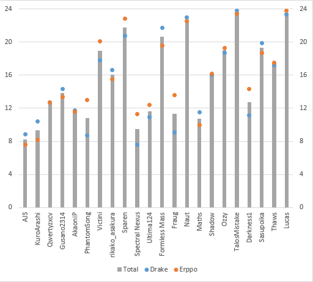

Contest Database - Local Backups
Over time, forums, chat groups, and other things come and go, and sometimes the records of the events hosted there also disappear.
For contests whose records are in danger of being lost, I have prepared this page to host the information. I will aim to preserve the details, but cannot guarantee anything. Judging results (spreadsheets, Pastebin, etc) can be found at the Judging Archives
Table of Contents
Maidens of the Kaleidoscope - RaNGE
The Maidens of the Kaleidoscope subforum RaNGE, or Rika and Nitori's Garage Experiments, hosted some of the oldest Danmakufu contests and has had a long tradition of doing so, especially back with the first 10 contests. However, like all good things, the forum has slowly begun to decay and so backup logs for the contests are being stored here for posterity in case another apocalypse/500 Internal Server Error/Certificate Expiration/... occurs and causes the information to be lost.
Unfortunately, this became reality with the death of the forum owner in early 2020 and so this section aims to preserve all opening posts for the contests.
As of the second backup wave started Feb 16, 2020, results and any logistics posts are also being backed up in addition to opening posts, and content is being copied over by copying the HTML nodes directly into the website rather than copy-pasting just the content with disregard to formatting. Some formatting may be removed or changed. BBCode classes were removed and obsolete HTML was replaced.
Danmakufu Contest 1 - Halloween
Note: This is the backup log, originally hosted on the MotK forums. Source
Opening Post
Welcome to Rika's Garage's (grammatically questionable) first contest! Anyways, we all know that Halloween is just around the corner. There's nothing scarier than a wall of bullets heading right for you, so for this contest, you have to make a short Halloween themed boss fight!
Rules:
-The maximum number of attacks is 2 nonspells and 2 spells, with a matching plural script.
-Have at least a normal difficulty version of the script, but you may have a hard/lunatic version included as well.
-Feel free to use any resources necessary as long as credit is given, just don't blatantly steal ideas from other entries.
-The boss character can be original, from Touhou, or from another game.
-All entries must be linked to in this thread by midnight October 31st.
-Don't discuss other people's entries in this thread until judging is complete.
Judging:
The judges will be me, Drake, Naut and Stuffman. 3 out of these judges will be picked for each entry (this allows the judges to enter too)
Entries will be judged in the following categories:
Design
Is the difficulty genuine, or from random cheap shots? How fun is it to play? How original is your danmaku? Is it glitch free?
Theme
How well does it fit the contest theme?
Style
How well does the BGM match? How nice is it graphically? What extra touches are included?
You can score up to 10 points in all of these categories, and your overall score will the total points earned.
Don't be intimidated if you're new to danmakufu, everyone here has started off as an unknown user. I'm hoping to see some interesting entries! Good luck!
The contest is now over! Click to see the results!
Results Post
Helepolis: 77/90
Helepolis, your script showcased the best of Halloween. The attacks were well designed, the effects were skillfully done, and the ending was one of the best dialogues I've seen. Congratulations!
Stuffman: 75/90
Stuffman, you took one of the more overlooked characters from the series and made a truly spectacular boss fight. Your attention to detail and use of custom graphics was impressive. Your script really was a thrill to play!
Thaws: 73.5/90
Thaws, you made one of the most flat out funny scripts of the contest, without compromising your design. I hope next Halloween I get my candy IN DANMAKU FORM!
Congratulations to our winners, who showed great design, style, and Halloween spirit! We hope to see everyone participate in our future contests as well!
Reviews:
rdj's Halloween Contest Entry
By rdj522.
Naut's Review:
Other than a vague reference to halloween in the dialogue, there really isn't anything related to the contest in this script. The final spell has a really cool gimmick that could've been taken a bit farther methinks. Lack of a background doesn't help the score either, though it was nice to see Komachi have an attacking animation, even it was the only real garnish to the script.
Design: 5.5/10
Nothing exceptional about the script. The final spell gimick and sinusoidal ghost bullets are the only things earning points. Was pretty easy too, perhaps two difficulties were in order since the script wasn't really gimmicky.
Theme: 2.5/10
Like I said, other than a brief mention of halloween in the dialogue, this script isn't really related to the contest at all.
Style: 6/10
BGM is a nice choice and seems very oddly fitting to the boss, and the attacking animation is a nice garnish. Not much other than that.
Total: 14/30
Even just adding pumpkins or something to the background would've boosted your theme mark considerably... Better luck next time.
Onthenet's Review:
Design: 6/10
First nonspell was the highlight of this fight, solidly designed. However, second was lacking in difficulty and variety, and third had some issues with the slowdown field. You definitely overused the purple fire bullets (what about Komachi's coins?)
Theme: 1/10
Komachi is scarier in her original game than she is here.
Style: 4/10
BGM is nice, and having a conversation was nice, but lack of spell BG or sound effects doesn't help your score.
Total: 13/30
Drake's Review:
Design: 6/10
The sinusoidal pattern is great, I found myself restarting a few times to find how to actually cap it with an actual method and not random dodging. First card is generic but still good, although it needs less purple. Last card is neat in theory, but it was made a bit awkwardly and ended up pretty easy.
Theme: 2/10
At least you mentioned Halloween in your dialogue.
Style: 5/10
Komachi is kind of an odd choice here. You did use ZUN bullets and made your own tractor beam thing, which was kind of nice.
Total: 13/30
Combined Total: 40/90
Skelekin
By kyle_090594
Naut's Review:
Haha, love the custom boss sprite. Complete with left and right movements, as well as a synchronized attacking animation! Very nice. The danmaku, while not really original at all, was still pretty fun to play. What the hell was up with the background though? Haha, you could've found a less eyebleeding picture to tile all over the place. You're gonna lose points for the music though, it's not really that fitting other than during the "Great Whirlwind" spell lookalike.
Design: 4/10
Nothing very original at all, but oddly fun to play.
Theme: 9/10
Can't get much more halloweeny than a clusterfuck of pumpkins! Too bad your danmaku didn't reflect any sort of halloween theme. Even orange and black bullets would've bumped this to a 9.5, even 10.
Style: 7/10
BGM wasn't very well matched, and the pumpkin tiling was just gross. Your custom sprite is what's earning you points here, it was awesome.
Total: 20/30
A different background choice would've been a big factor in earning more points. Also, try to make more original danmaku, slightly editing Drake and Iryan's isn't really going to cut it.
Onthenet's Review:
Design: 5/10
Nonspells were a bit plain. First spell was based off of the tutorial, but still fun. Second spell was extremely easy or extremely hard depending on difficulty, and didn't really have a gimmick at all. Pretty mathetmatical designs are better used for nonspells if you can't theme it well.
Theme: 7/10
Nice pumpkin theme, but attacks didn't really show that off enough.
Style: 5/10
BGM wasn't too fitting, and background was very distracting to the point where it actually made the danmaku harder. Custom sprite was awesome though.
Total: 17/30
Drake's Review:
Design: 6/10
Even though it's obviously an experiment, I still liked it, for a newbie. Except next time, don't make it so obvious that you ripped off my cycloid functions lol (The last card is fairly well-executed, even still)
Theme: 7/10
Pumpkins, music is Halloweeny, etc.
Style: 6/10
Background is killing my eyes, don't do that. Making pictures yourself = points, danmaku is still pretty.
Total: 19/30
Combined Total: 56/90
Halloween Contest Entry
By puremrz
Naut's Review:
As expected from puremrz, this script is very pretty. The difficulty is on par with where I think it should be (without being excessive like I usually want it. Can't really expect that though). Excellent use of images (cut-ins and sprites were amazing) and background give an awesome tone to the script. The danmaku is very pretty and creative enough for the contest. Your bullets are not opaque enough though, I really, really dislike being able to see through your "sun" bullets and the arrowheads. Also, your nonspells have cut-ins... Heh.
Design: 8/10
Being able to see through your sun and arrowhead bullets really subtract enjoyability from the script for me, since they just seem to blend in with the background. Other than that, the danmaku is very nice, despite being sort of plain in some parts.
Theme: 10/10
Not much to say here. The tone, bullets, dialogue and bullet patterns all fit the theme perfectly. Well done.
Style: 8.5/10
I found the BGM, though awesome, doesn't really fit with a "halloween script". It does, however, suit the personality of the bosses, so I was generous. We didn't see as much creativity as could've been expected, the forming of a pumpkin and web out of bullets was overshadowed by the longer lasting plain attacks, like the first non-card and the longer half of the last spell.
Total: 26.5/30
All in all, the script is well polished and very nice to look at, but doesn't really "wow" at any parts. Solid marks throughout for following guidelines, but nothing stood out as exceptional.
Onthenet's Review:
Design: 7/10
Bit dull during the nonspells. Highlight was the pumpkin shaped danmaku during the last spell, which really has that intimidation factor danmaku is all about. Some points off for having a harder script than the contest called for.
Theme: 8/10
Magicians are common place in Gensokyo, so maybe not the best choice. Last spell gave off a strong Halloween vibe though.
Style: 8/10
Custom graphics and characters really helped here. Bullets had hard to see hitboxes, something you may want to change for your full game project.
Total: 23/30
Drake's Review:
Design: 7/10
I rather liked it, at least, it's not bad. The way is makes you dodge stuff is good, but the bullets contrast with each other and the alpha blending is super low on some bullets. You didn't really need to make the first spellcard a survival, and it's kind of clipdeath-heavy and other bullshit.
Also, your plural scripts weren't really formed right and it's kind of confusing as to what you were trying to do in the first place.
Theme: 7/10
wharz da hallaweeen (changed from 1 to 7 after some reconsideration)
Style: 7/10
The OCs were hit-or-miss. You really didn't need to put them in as there wasn't really a story to begin with. The spell circles and backgrounds were nice, though. Sound effects, too.
Total: 21/30
Combined Total: 70.5/90
Necromancy "4 Cards Later"
By Garlyle
Naut's Review:
Not much of a halloween entry, just one spellcard with four difficulties. No theme at all, but the card is pretty Orin styled.
Design: 4/10
Pretty much an exact copy of Orin's attacks from SA, this spellcard doesn't really bring anything new to the table. The difficulties are pretty accurate though.
Theme: 0.5/10
Nothing indicating of halloween at all, unless you count "Orin uses ghosts".
Style: 7/10
The graphics and various ghost gimmicks are pretty nice, so that certainly earns you points.
Total: 11.5/30
At least mention halloween somewhere, and make your own danmaku rather than combining attacks from SA.
Onthenet's Review:
Design: 5/10
Pretty okay design, nothing too special. More attacks would have been nice. Zombie fairy idea was executed well.
Theme: 2/10
Zombies themselves aren't too Halloween-y unfortunately.
Style: 6/10
Nice graphics. Lolgiygas.
Total: 13/30
Drake's Review:
Design: 4/10
I would have liked it much better had you have done the 2/2 guideline rather than the same thing in four difficulties. The one card lasts wayyyy too long. This pretty much forces you to stay bottom-center as long as possible, and the ghost fairies just pile up and it gets kind of annoying. However, there is a certain charm to it, even still.
Theme: 1/10
orinrin is a scari neko
Style: 7/10
Much better for including music, proper cut-ins, sound effects and all that jazz. Would have been better if it wasn't all taken from me and Hele lol
Total: 12/30
Combined Total: 36.5/90
Halloween Event
By Nimble
Naut's Review:
Excellent custom graphics, nice sprite animating. The difficulty might be a bit excessive for most people though, which leads me to recommend making a second, easier difficulty. The danmaku was pretty inventive, and the script was fairly fun to play. I liked your danmaku pumpkins. A little more creativity could've gone into those regular attacks, and the difficulty is really tearing away at the creativity of the spellcards...
Design: 6.5/10
Difficulty might be too excessive for most people. Also, the random circle of lasers is pretty walltastic. The pumpkin danmaku and creative use of the giant pumpkin in the background are earning you points here.
Theme: 7/10
Other than a giant pumpkin in the background (and some pumpkin shaped danmaku on the last spell), the only thing making this halloweeny is the copious amount of orange. Which is enough to get you some points, but you could've done better I think.
Style: 6/10
Your custom sprite and cut in is very nice, but other than that there isn't much garnish. The BGM doesn't really suit the script (or a halloween script for that matter), and the background is just a giant pumpkin. Could've been improved, methinks.
Total: 19.5/30
Seemed too thrown together. The danmaku left something to be desired, but what that lacked the graphical nuances picked up on. Try to make the script less messy looking, and use a different BGM, something other than rips from the official games.
Onthenet's Review:
Design: 4/10
Very very difficult for what you would call normal. Nonspells seemed like random spam attacks. Laser attack was completely wall-tacular.
Theme: 5/10
Yet another pumpkin themed boss. Could have been emphasized more.
Style: 5/10
Custom graphics and giant pumpkin are awesome. BGM didn't fit at all though.
Total: 14/30
Drake's Review:
Design: 3/10
Random monotonous shit flying around everywhere = bad. The pumpkin eye-lasers could have been cool but you kind of ruined it by having the player bomb every second wave. The second card had those neat thing at the bottom, but you realy can't avoid anything here. Same as Alwaysthe9, don't make cards that require you to bomb every two seconds.
Theme: 6/10
Halloweeny, but still somewhat bland.
Style: 6/10
Is that an OC? The art is nice, animation is nice too. Giant pumpkin in the middle of the screen was pretty cool too but it was kind of ruined by the danmaku. Music... I guess I'm just not one for U.N.Owen. Didn't really fit.
Total: 15/30
Combined Total: 48.5
Trick or Treat
By Iryan
Naut's Review:
What can be said, really. You couldn't even play your own script, haha!
Design: 3/10
I have no idea how to rate this fairly!
Theme: 1/10
Colors supposed to reflect candy? I dunno. Should've made orange bullets all over the place to increase your score, haha!
Style: 1/10
Single point awarded for having no idea what your script would look like before submitting it!
Total: 5/30
Get Danmakufu working!
Onthenet's Review:
Design: 1/10
Blindspots that would make Icicle Fall - Easy look hard.
Theme: 1/10
By the same logic, China would be the scariest boss in EoSD.
Style: 2/10
2 points for not knowing what your script looks like YEAAAAHHHHH
Total: 4/30
Drake's Review:
Total: 5/10
I can't really judge this at all...
Combined Total: 14/90
Trick or Treat
By Thaws
Naut's Review:
Ever the creative one, Thaws delivers in this halloween script. I liked how you are portrayed as a person out trick-or-treating! Very creative. I guess my biggest problem with the script is that it doesn't look as pretty as it could, and there is no BGM!
Design: 9/10
Could've been a bit more creative with some of the attacks, but pacman and the candy bullets are a huge contributing factor to your high score.
Theme: 10/10
Pretty halloween-y to me! Any more and it would've been a bit excessive, methinks. Can't go wrong with trick or treating!
Style: 6.5/10
There is no BGM! Ahhh! And your backgrounds could've been a bit more detailed, but I certainly liked the concept and it was fun to play.
Total: 25.5/30
IN DANMAKU FORM! A bit more variety in the use of the candy danmaku (mainly applies to the first attack) and better looking visuals would've boosted your score. BGM would've been a nice addition too!
Onthenet's Review:
Design: 8/10
Attacks were well made, but didn't really feel like danmaku at times. Pacman attack is great though
Theme: 7/10
Halloween isn't Halloween without trick or treating. Lacked the equally important scary themes though.
Style: 8/10
Candy-maku is awesome, and the whole thing is rather lulzy.
Total: 23/30
Drake's Review:
Design: 6/10
Sticks to a theme all the way through and continues to vary it up at the same time. Good job. Having Pac-Man chase after me is great. Coloring them differently was very smart too. Nothing against it, but it was... still lacking something. Aside from the patterned danmaku it was kind of stale.
Theme: 10/10
knock knock give me some damn candy
Style: 9/10
Jesus fuck I lol'ed. The popping sounds were great, the candy and Pac-Man patterns were as well. No music disappointed me but I'm not subtracting points.
Total: 25/30
Combined Total: 73.5/90
Halloween Boss
By renaryuugu
Naut's Review:
Ahhh! This had so much potential! I really liked the eerie mood the script started with. The BGM was an excellent choice and the background only added to the mood. It's a shame that there really isn't much to do with Halloween in here, and the script is too short!
Design: 7/10
I loved the danmaku patterns, but there just wasn't enough variety in there to merit a higher mark. Perhaps adding a bit more to the script in terms of different patterns, as well as fixing that weird restarting glitch at the end would've earned you a 10.
Theme: 5/10
Unfortunately, eerie tones and creepy music doesn't justify calling it a halloween script. Something a little more indicative of halloween would've easily earned you a higher mark.
Style: 7/10
I loved the background and BGM, combined with the slowly entering Remi created an awesome tone that I could never mimic myself. It's a shame that those are the only really style points here.
Total: 19/30
The only real error in your judgement was not continuing to build on this script. I feel that if you put more effort and time in to your script, you would've easily been a contender for top 3.
Onthenet's Review:
Design: 5/10
Strangely fun, but a bit too hard, and a bit too short. Feels like the intro to a final boss, but ends prematurely.
Theme: 3/10
Aside from eerie intro, nothing very Halloween themed.
Style: 6/10
Great use of BGM, and I liked the "blood" danmaku, but could have been so much more.
Total: 14/30
Drake's Review:
Design: 6/10
The 20-something seconds of intro was really boring. I was talking to Naut on IRC and I wasn't dying. The spellcard is once again some ridiculously hard thing. It would be better if it was a tad slower, so you could actually react to stuff flying at you. Although. The noncard is super awesome and in itself nabbed you your main points here. Needs to be a bit less random, but otherwise good job on it.
Theme: 5/10
Vampires, but not Halloweeny. Unlike Bluemoon's vampire stuff, this is far more vampire than Halloween.
Style: 7/10
Background is nice and the danmaku is pretty. Good job on this.
Total: 18/30
Combined Total: 51/90
Halloween Fight
By Wingz
Naut's Review:
Very creative! This is what I like to see, going above and beyond the guidelines for the contest and making something truly different. Other than the messiness of the script (which is probably a result of the odd bullet colors and background mixing together), this script is solid.
Design: 8.5/10
Other than the odd bullet color choices and general abstractness of the patterns, the danmaku was varied and creative. The last spell was particularly awesome, and very different.
Theme: 10/10
Suited the halloween theme perfectly. The first attacks were kind of lacking in the halloween theme department (other than ORANGE), but the last spell more than made up for it.
Style: 7/10
The script was kind of messy looking, and not as fun to play a it ought to be. The background was pretty static, and the BGM needed to be something other than a Touhou game rip.
Total: 25.5/30
Clean up your danmaku a bit and make the background move or something (even just putting another texture on top that scrolls around would be fine). This script is a great entry for the contest, good job.
Onthenet's Review:
Design: 8/10
Loved the last spell. Something truly different and memorable. Attacks weren't very Tewi-like, but that's forgivable due to her not having been a proper boss in any of the official Touhou games.
Theme: 7/10
Nice background and candy catching game give you points here, but Tewi isn't exactly scary or even remotely Halloween related aside from the trickster aspect.
Style: 7/10
Pretty average in this aspect, some sound effects sounded strange. BGM was a bit unfitting.
Total: 22/30
Drake's Review:
Design: 7/10
Danmaku of a refreshing difficulty, but still pretty boring. Pumpkin Smasher really didn't need to be a survival and was far too long and random. Laser->Danmaku = super yes. The candy collection thing is great, but Tewi's attacks were pretty meh.
Theme: 6/10
Even though the focus was "collect candy", there wasn't much of a Halloween feel to it. More like an excuse to make some more scripts.
Style: 6/10
Most points come from the nice background and the candy-collecting. Otherwise there wasn't much to this.
Total: 19/30
Combined Total: 66.5/90
Halloween Contest Entry
By Gamecubic
Naut's Review:
My my, lots of orange and black. To be honest, this was what I was expecting from many entries. Just a generic fight with some orange and black bullets and maybe a ghost or something. That said, it doesn't help your score, heh.
Design: 7.5/10
The patterns were nice, but nothing worth remarking about. They were varied enough to not get boring, but not terribly "oh wow", either. Maybe spicing things up would've given you a better mark for design. Trying something a little more out of the ordinary.
Theme: 5/10
Haha, orange and black bullets isn't going to cut it for a halloween themed boss. The spirits were a nice addition, but something a little more directly related to halloween would've been better. Even some brief dialogue or something.
Style: 5/10
Points for using Hollow World of God, but that's about it. The BGM suited her, not the actual contest, heh. No real garnishing effects either, so you got a mediocre score in this category as well.
Total: 17.5/30
Putting more effort in to this script would've led to a much better presentation, a more enjoyable script to play, and a much higher mark.
Onthenet's Review:
Design: 5/10
The danmaku ws good overall, but without any real highlights. First spell didn't require any real dodging.
Theme: 2/10
Wasn't really Halloween themed at all aside from "oooh blood and spirits".
Style: 3/10
Nothing much to rate here, you just used a couple sprite rips, didn't make use of any effects. BGM was unfitting.
Total: 10/30
Drake's Review:
Design: 5/10
The noncards were great. Speed is controlled nicely and such and such. First card is really boring and lasts way too long, though. I simply had no idea what was going on in the second card. After a while I just bombed it.
Theme: 2/10
Orange and black bullets? I guess?
Style: 3/10
Points for using HWoG, but that's about it.
Total: 10/30
Combined Total: 37.5/90
Kogasa's Halloween Surprise
By Onthenet
Naut's Review:
A very pretty script with a lovely Kogasa sprite and very fitting danmaku, but surprisingly little to do with halloween. Can't say I disliked the script, but it didn't really do it for me in the end. A few things could've used improvement, I guess.
Design: 8/10
You implimented very fitting danmaku for Kogasa, and even got in a bit of the halloween element with some orange bullets, but there wasn't much on the level of creativity here. You made a Kogasa script, nothing more as I see it.
Theme: 5.5/10
Yeah, an orange umbrella and a brief flurry of orange bullets doesn't really make this halloween themed. The first spellcard wasn't bad, with it's orange balls of death, but really, you could've linked the script and halloween a bit better.
Style: 7/10
Attacking animations for Kogasa were well scripted, and the spellcard backgrounds were at least suiting. But really, after that, there wasn't much garnishing involved other than "used Heleoplis' cut in script".
Total: 20.5/30
If you put a bit more effort into this script I think it would've been a good contestant for top 3. As of right now, there is nothing special about the script at all, just an average Kogasa script. Shouldn't take you much effort to transform this in to so much more.
Stuffman's Review:
Onthenet's script is rather straightforward in execution, it almost seems like a regular boss fight you would encounter in a touhou game.
Design: 8/10
In terms of pure danmaku, Onthenet's entry plays rather smooth compared to most entries. Headless Horseman was troublesome at first until I found out you had to actively go after the balls. Kudos for making a survival card that is actually still survivable at the end, most people can't seem to grasp how to do that! The designs are pretty simple though, none of the designs are really visually interesting.
Theme: 5/10
Lacking in effort! If it weren't for the pumpkin-colored Kogasa I probably wouldn't have known this was supposed to be a Halloween script. No dialogue or gimmicks or anything of the sort.
Style: 6/10
I must admit I didn't "get" Poe Anthology at first, but I figured it out when The Pit and the Pendulum came in. That made me smile, so extra points for that. But overall, it's a pretty normal boss fight, if a decently designed one.
Total: 19/30
Drake's Review:
Design: 8/10
I think you did the opposite of everyone else; you made it too easy for the difficulty level. Should be slightly faster, a few more bullets. I liked it, but it was just really easy, even Lunatic. The survival ended how they all should; at a climax yet not forced bombspam.
Theme: 5/10
Not very Halloweeny. Music was cool, Kogasa is orange, Poe is great.
Style: 8/10
Nice and pretty patterns, and Poe Anthology made me hnngggh.
Total: 21/30
Combined Total: 60.5/90
MotK Halloween Event
By Helepolis
Naut's Review:
What the hell da ze! This script has an absolutely amazing atmosphere, which is only emphisized by the wonderful use of graphics and sound effects. However, it's not perfect.
Design: 7.5/10
Damn lasers, cheap shot the hell out of me. It also took me a long time to realize the ghost that doesn't shoot the flurry of rainbow lasers is the real one to shoot at. Even after noticing that, the spell took a really, really long time to beat. Both of them, actually. Reimu A is pretty much necessary for this script (bad sign). Adjusting health values or making the danmaku more varied would've boosted your rating here.
Theme: 10/10
Quite halloween-y! The danmaku itself did not reflect the theme very much, but the atmosphere of halloween was definately there.
Style: 9.5/10
Excellent use of effects through the whole script make this sex for the senses. Neither auditory nor visual output was ignored. That said, there was also nothing above and beyond what you could expect in a script. Nothing particularly special or "holy crap", which would've earned a 10.
Total: 27/30
Amazing script and a solid entry for the contest. Be sure to balance out your cheap shot danmaku and your healthbars (that first spell lasts way too long). Something different in terms of effects would've earned you a higher grade as well.
Onthenet's Review:
Design: 8/10
Well designed, but not particularly impressive attacks. Seemed like many small attacks pieced together at times. Too much health may be an issue.
Theme: 8/10
You went with a ghost theme and did everything to be expected of it. I don't know who would be afraid of ghosts in Gensokyo though (maybe Youmu?)
Style: 9/10
Funny conversation, great effects, blah blah. Not much to say here, but I was thoroughly impressed.
Total: 25/30
Drake's Review:
Design: 6/10
The ideas were nice, but the implementation was a bit iffy. First card took way too long even when the gimmick was figured out, and there are clipdeaths galore. Second card was better and Mystia-like.
Theme: 9/10
Very halloweeny.
Style: 10/10
You pretty much took everything that you've done in danmakufu so far and crammed it in. Music is fitting, sound effects are fitting. Good job. The dialogue wasn't really needed and kind of detracted a bit, but there were no points lost here.
Total: 25/30
Combined Total: 77/90
Yamame's Heart-Pounding Danmaku Thrill Ride
By Stuffman
Naut's Review:
Fashionably late, Stuffman delivers an awesome entry that proves it was worth the wait. The use of his own custom graphics and sprites adds to the lovely atmosphere of the script. Not terribly heart-pounding mind you, but certainly nothing to shake a stick at.
Design: 9.5/10
Excellent danmaku, very fitting of the script and the theme. Wonderful spider bullets and danmaku patterns. Still felt kind of generic and expected, especially since it's Yamame, but nothing major enough worth nit-picking about.
Theme: 6.5/10
Where's the emphisis on halloween!? Scary scripts are great and I guess it'll keep you in the halloween mood, but there really isn't much here that's actually telling of halloween itself. Even mentioning it in the dialogue would've helped!
Style: 10/10
Custom graphics and creative gimmicks add significant points to the style of this script. The BGM was well chosen for Yamame (being an arrage of her theme), and the effects were varied enough to be entertaining. Nothing that says "wow", but that's nothing to worry about.
Total: 26/30
More emphasis on halloween, rather than just Yamame and her spideriness, would've made this script amazing!
Onthenet's Review:
Design: 7/10
Nonspells had a lot of variety, but spells seemed a bit dull by comparison. The beginning of the second nonspell was particularly well done.
Theme: 7/10
You seem stuck between a scary spider theme and a fun thrill ride theme? It seems like kind of a jumble, but it works.
Style: 10/10
Custom graphics, well drawn cutins, and 3D background were all great. Spider skull was a nice touch.
Total: 24/30
Drake's Review:
Design: 8/10
I'm sorry I didn't play your entry before now. This is pretty great. The web card is great, but needs to scrap the random shots and use a pattern. This goes for the rest of the script, too. Less random randomness, more concentrated patterns with slight random changes to make it constantly different.
Theme: 9/10
Thrill ride fuck yeah.
Style: 8/10
Once again, thrill ride. Nice twist, and I loved the spider web patterns. The first card was pretty disorienting for some reason. Sweet and simple, and I'm glad you ended it with Kisume instead of just cutting it there. Not anything bad about it, but it was just missing a few things.
Total: 25/30
Combined Total: 75/90
Luna Boss
By Bluemoon and Lishy
Naut's Review:
This well-made script is an excellent stand-alone playthrough, however doesn't really reflect the theme of halloween at all.
Design: 10/10
Varied and interesting, the danmaku in this script is top notch. Fun to play and very creative, many people could stand to learn from Bluemoon's precident.
Theme: 4/10
No mention of halloween anywhere, the only points earned here are from the creepy tones and the fact that the character is a vampire. As far as I can tell, it's just a normal script submitted to a halloween contest.
Style: 9/10
Lishy did an excellent job with the graphics, but the BGM needs to be something other than a Touhou rip. Even an arrange of Shinki's theme would've been fine... The PC98 sound doesn't really suit the script either, other than "it's a final boss' theme".
Total: 23/10
An amazing script in and of itself, but doesn't really qualify as a halloween themed contest entry. Adding more emphisis on a halloween theme would've made this script top tier. Even just saying something like "it's halloween and my powers are stronger tonight!" or something really corny like that would've given you more points for theme!
Onthenet's Review:
Design: 8/10
Lots of great concepts here. I loved the spiral darkness effect, but the increasing speed didn't really do much aside from make my eyes hurt. The black/white part of first spell is a bit unfair, forcing you to find a way into a field of spawning bullets.
Theme: 4/10
Not really any mention of Halloween at all.
Style: 9/10
Custom graphics and amazing 3D BG were impressive. Only part that could have been better was BGM choice, wasn't really intense enough to fit the fight.
Total: 21/30
Drake's Review:
Design: 7/10
Very well-made. I haven't paid much attention to you guys before, but this is pretty good. I found that you put in two or more patterns in everything, which kind of seemed like a cheap excuse to add patterns. Luckily, for each non/card, I only thought one of the patterns were really good, so they kind of cancel themselves out <3
In particular though, I like the disorienting last part of Uzumaki (derp spiral). Hitboxes of those spiral bubbles need to be fixed, too.
Theme: 5/10
Not very Halloweeny per se, but still, Vampires and all that jazz.
Style: 9/10
Very nice style. Scrolling background is one thing that makes this different from the others. The ring of fire/whatever is really cool-looking too. Again, fairly well-made
Total: 21/30
The OC makes me want to kill babies. Rage-inducing in the not-good kind of way.
Combined Total: 65/90
GFS
By Naut
Stuffman's Review:
Naut's script falls into the category of being great fun to watch, but not being something you want to play yourself. This is a script that actively tries to kill you. Though in Naut's defense, it probably wouldn't have the same effect if it was easy to beat on your first try.
Design: 4/10
This script is basically Naut being Naut. Like Onthenet, I had to go in and turn off Expert just so I could see the whole thing. You seem forced to die at least once, or at least if there are ways to get around it, they're not at all intuitive. Turning off bombs didn't help! Aside from dodging the spider's body, the actual danmaku parts seem to play alright. The white glob attack is the most interesting to play, I think.
Theme: 9/10
Naut gets considerable points for making the straight-up scariest script (even if there were others trying to be scary, his would win in that respect).
Style: 10/10
I have to say, looking in the code for this thing, the spider is quite a feat of danmaku engineering. I was genuinely impressed with the smooth movements of the spider, the way it splattered Mystia against the frame, and the way it was able to climb all around the screen. Naut also somehow managed to find one of the freakiest techno songs ever, and the spinny background and lighting effects made the ambience perfect.
TOTAL: 23/30
Onthenet's Review:
Design: 2/10
OMFGHOLYSHIT AAAAAAA WHY GOD WHY (read: entering a continue disabled/bomb disabled lunatic++ script for a normal difficulty contest is bad)
Theme: 10/10
Genuinely scary and surprising. You didn't bother with Halloween colors or anything and went for pure shock factor.
Style: 10/10
Amazingly coded, very atmospheric music, awesome effects.
Total: 22/30
Drake's Review:
Design: 7/10
All-around, the danmaku was nice. I like how Mystia pushes you into the side where GFS comes out of. But the first attack is incredibly hard to dodge and forcing Expert wasn't really the greatest idea considering most people can't make it all the way to the end. It could be much better just with some criticism from other viewpoints, though.
Theme: This scared the fuck out of me/10
as in 10/10
Style: 8/10
Background = sex, entirety of GFS = sex. Blood spatter = sex. For all Stage 2 bosses everywhere = sex. Although, there's still something missing.
Total: 25/30
Combined Total: 60/90
<@Onthenet> we forgot to judge alwaysthe9
<@Onthenet> quick give me a good excuse for him to be disqualified
<puremrz> Not enough boobs?
Alwaysthe⑨ has been disqualified due to lack of boobs.
Danmakufu Contest 2 - Dead Simple
Note: This is the backup log, originally hosted on the MotK forums. Source
Opening Post
RULES:
- The only bullet type you are allowed to use is WHITE05. Lasers using WHITE05 are (edit:) NOT permissible.
- You may have up to three spells.
- Any kind of graphics, music, or other effects are permitted, but the only thing that is allowed to actually kill the player is WHITE05 (and of course the enemy's hitbox (don't abuse this)).
JUDGING:
- The judge is me! I will arbitrarily decide which three are my favorites. Numbers are subjective anyway. Obviously, I can't win, but I'll probably make some for chuckles anyway.
- You will be judged purely on the quality of your danmaku, in terms of visual appeal and playability. Other bells and whistles are fine (and even recommended!) to make your script more fun, but you will be judged on your patterns alone.
DEADLINE: 11/15/09, midnight EST. No exceptions. (That's next Sunday, for those of you that don't feel like checking your calendars.)
Get crackin' PC-98 style, bros.
RESULTS HERE: http://www.shrinemaiden.org/forum/index.php?topic=3665.msg165048#msg165048
Results Post
Not a proper entry but I'll give my opinion anyway. This is slick, if you had bothered to make two more attacks you probably would've had something good going. I would've put the two Rumias a bit closer together so more of their spawn pattern was visible, but otherwise it looks pretty neat.
VideoGameCrack
Excellent entry, this is exactly what I had in mind when I came up with the contest. Snow Flowers took me a little bit to figure out, but I was able to capture it eventually so it's a good Extra-style card. The effect of Shattered Glass was one of the coolest things I saw in the whole contest. Ghost of the Ancient Danmaku is a kinda easy but long enough for someone to mess up at least once, bezier would've been much more impressive if the code for it didn't already get released earlier, nice nonetheless.
Iryan
Normal version was easy easy stuff, glad you included higher difficulties. The polygon orbit shots on Wind Tunnel were neat, it would've been nice if they rotated closer together and with more density so the effect was more visible. Mirror Universe is a rather straightforward rebound pattern, unfortunately the shots were a bit too sparse and often aimed at funny angles so you didn't get much visual effect out of it; also the bullets didn't bounce off the left wall, I trust this was a bug. Ripples in Reality is what makes this set worth playing IMO, the shot circle distortion was pretty interesting, but unfortunately the pattern didn't seem polished since it doesn't seem to normalize again, only becomes more and more random. However, I must credit you by saying I played this without remembering that you aren't able to playtest your own scripts, so big thumbs up there. I look forward to seeing what you can produce when you can actually, y'know, see your patterns
Blargel
Well done script, excellent visuals but a few playability hiccups. Dot Explosion looks super super cool but is extremely unfriendly to non-homing types, there should've been some kind of way to slide past those explosions without going to the corner (if there is one, I didn't catch it). Still, it's beatable no matter the shot type. Sprite of Atlas on the other hand is exceptionally cruel in that the boulder is aimed at you when thrown, rather than produced; I was utterly unable to capture it. Scaling is the most humorous entry and also the most entertaining to play IMO. Suika influence is obvious here.
Kayorei
A WHITE05-focused script on a starfield immediately strikes me as a bit distressing. This is a good script regardless, I enjoyed the simple geometric theme. The first attack is a fine entry, with the outer rings detonating being an interesting way to add complexity to the circle barriers. The alternate attack after the rings also plays nice, though the timing in which the larger rings spawn in sequence looked a little awkward to me. The second attack, the triangles, changes things up a bit by making you move more vertically. They feel a bit like polygon brofists. The final attack gave me trouble at first, as it made me think there was some gimmick to dodging it at first, but I was able to capture it once I started relying on instinct. It's a bit unintuitive but once you figure it out it's a fine end to the script.
Nimble
Okay, this changes things up a bit, seems like you're actually trying to kill the player.
 I'm afraid I don't recognize the enemy, so if there's a reference here, I've missed it...anyway the first attack seems reasonable, you have to do a bit of switchback if you're not a homing type, decent challenge. Circular Shot...well even if it's effective at killing me I'm afraid I can't give many points since it's something we've seen many times. Capturing Laser is just pretty much broken. I had to turn on invincibility to even figure out how you were supposed to dodge it, and even then I wasn't able to do it with any sort of consistency. Sorry bro, needs more playability.
I'm afraid I don't recognize the enemy, so if there's a reference here, I've missed it...anyway the first attack seems reasonable, you have to do a bit of switchback if you're not a homing type, decent challenge. Circular Shot...well even if it's effective at killing me I'm afraid I can't give many points since it's something we've seen many times. Capturing Laser is just pretty much broken. I had to turn on invincibility to even figure out how you were supposed to dodge it, and even then I wasn't able to do it with any sort of consistency. Sorry bro, needs more playability.Nuclear Cheese
Cheese's entry is a bit different in that it's more like a set of minigames. Gravity is impressive programming-wise, but directing shots is so cumbersome that it took a while for me to finish it. The stick figures in Friends are cute but Blargel did it better, and the hangtime between attacks makes this drag on a bit. Collection is more of a proper challenge, though I think it could've done with more variety in enemy shots or manners in which the player must collect the orbs. Overall, this is an interesting tech demo but not very fun!
UltimaRepman
Shot circles. Yep. Sorry, gotta do something a bit more interesting here. Well, I suppose the second attack is a bit interesting with the rings travelling at different speeds, makes it looks like the bullets are moving in pairs somehow. The presentation wasn't bad, I'm glad you included graphics and music, but I'm afraid it doesn't net you any points in this contest.
kyle_090594
Neat snowflakes. The middle dot is a bit off center though! (But really, who cares...) First attack is simple and effective. The snowblower on Artificial Snow seems like a cheap shot and a big downside to the script, you both need to know it's coming and know exactly what to do about it. The main part of the attack is alright though. Playing with Tiny Snow is a good straighforward spell, though it would've been nice to have some of those snowflakes in to pretty it up.
Thaws
Okay yeah this made me smile. In The Kitchen is a fun concept and also fairly challenging. Windy Day is a neat variation in effect but the gusts themselves are pretty unfair, it's pretty hard to react in time to not have them spawn on you...Out In Space on the other hand is a great finish, offering several things to dodge from multiple angles while still remaining very playable. Nice work!
ChaoStar
This is pretty okay, even if it's just shot circles. Needs more content to be in the running. Try some more stuff next time.
Blue Wolf
Am I fighting the FF6 save point? First attack is decent, no gimmicks, but nothing really special. Stealth Modo is...interesting. I can't decide if it's fair or not. I want to say it is, since I seem to have figured out a fairly reliable method to pass it. I think the shots start going stealth a bit too far from the player, making it impractical to always track them all; points for originality, regardless.
Suikama
DISQUALIFIED
Demonbman
Augh fuck this background, the high contrast makes it hard to track the bullets...maybe I should give points for that since that's PC-98-esque. The first attack is really difficult, it's hard to track the fast bullets coming at you from above when you're trying to get through the narrow openings in the spiral. The second attack is just mean when it comes from all four sides, and since it's just random spam I can't give you any points here. Third attack is AUUUUGH. The first spiral salvo is literally impossible to escape for some characters. You had something going with the missile streamers, but you can't put bullets that suddenly home in on you and look identical to the other ones in when the attack is already fairly dense. It looks like you're doing fine on the coding aspect of Danmakufu, but you need to work on the playability of your scripts. Did you playtest it thoroughly? Were you able to beat it yourself?
rdj522
Even if it is random spam I must say I appreciated Light Snow. Making jokes about dodging snow like it's danmaku is one thing, actually doing it is another. I had fun with that. Spiral Flurry is a good variation on a typical double spiral, with the way it gathers before dispersing. The curve as they fall towards the player feels unpredictable though, and it killed me once since I was expecting them to travel straight, I wish the curve was telegraphed a bit before so they wouldn't turn on top of me. Snowball Fight is alright, but more could've been done with the concept, like snowballs impacting the walls and such. As it stands it plays like a fairly simple shotgun card. Decent presentation overall.
Drake
I have to say I appreciate all the effort that went into this. Is Stalker Karakasa beatable? I don't get how it works exactly, I thought I noticed you being able to control its movement somehow though. NAUT, figure it out for me. Easy War was more practical, so I was able to take it easy. An Old Man Who Appreciates the Fine Arts is a good Extra-style card, being a little difficult to figure out at first but being very playable after you do. Great piece of work you've put together here. Too bad you're still disqualified (but ilu for making a Josette script)
STUFFMAN'S PICKS
1ST PLACE: VideoGameCrack - best straight-up danmaku.
2ND PLACE: Blargel - most visually impressive danmaku using pure WHITE05.
3RD PLACE: Kayorei - second most playable script that also includes unique patterns.
HONORABLE MENTION: I wanted to give third place to Thaws but I couldn't forgive the gust cheap shots.
Congratulations to our winners!
I've got a few ideas for the next contest in mind, but I'll keep them to myself for now. Expect the next contest sometime in December.
Danmakufu Contest 3 - Survival Card
Note: This is the backup log, originally hosted on the MotK forums. Source
Opening Post
Survival Card
Hey guys, it's been a while since we held our last Danmakufu contest, so I figured we should have another one. I discussed it with the guys on #danmakufu, and we decided to hold a contest to see who can make the best survival card. A survival card is a boss attack that you must time out in order to complete, the boss will take no damage from the player's shots or bombs.
Rules and tips:
- Only one survival spellcard may be submitted.
- The spellcard must last no longer than 120 seconds, and may last less.
- You may include more than one pattern in the spellcard (like Mokou's Posessed by Phoenix), but it can be whatever you want, really.
- You may include a stage script for backgrounds and effects, but only for that purpose. No other enemies or attacks are allowed, save for whatever is in the one survival spellcard.
- You may include an event (talk script) if you want, but it will not be judged in any way. This is not a "write a story" contest, so keep it short if you include one.
- The script will be judged on how fun it is to play, how creative the bullet patterns are, and how creative you are with the concept of a survival card. Include difficulties if you need to, but the script will not be judged on difficulty unless it completely interferes with the playability of the script. That is, impossible to play or eye-gougingly easy. Don't suck up to me, either.
- If you're having trouble with some aspect of the contest, I will be in #danmakufu @ irc.ppirc.net, feel free to come get some advice or whatever.
- You may submit collaboration entries, be sure all people who helped you with the script are credited.
- You may use ripped sounds and graphics if you wish, I really don't care.
- If you're having trouble filling 120 seconds (or if it's a really boring 120 seconds), feel free to cut it down. You are not obligated to make a two minute spellcard. Quality over quantity.
- New people are welcome to submit entries, and are encouraged to do so! All entries will be judged equally.
- Be creative. Big points for doing really cool stuff.
Your entry is due by Sunday, January 24th, at 23:59 GMT, no exceptions. I will be the only person judging. You may submit your entry in this thread or by PM, but your entry will inevitably be made public when I submit the scores. Please include your name somewhere in the script's #Title or #Text, so I won't be really annoyed while I play your script after searching for your submission post.
Good luck!
Contest is closed.
Results Post
Thaws
ROFL
Excellent! I think some of the patterns lasted a bit too long, and it would've been better at 90 seconds instead of 120, but damn this is great. Great job on all the effects, I love the creativity of everything, especially the background.
Second Place:
Iryan
Survival in the Forest
Hahaha, I remember the claw script way back when. Classic. I like what you've done with it. Seems to last a bit too long to me, and could've been fleshed out more I think, but I still like it. The effects were amazing and this was very creative, good job.
Third Place:
DgBarca
Contest Entry: Five Star Over Suwa Lake
Superb, despite the fact it was kinda boring to play. I don't know how you could've improved, honestly... Maybe the star gimmick wore off too quickly everytime you started a new pattern. Something like "Oh neato, something new. Okay, next". Either way, it was still creative and entertaining the first run through. Nice entry.
Honourable Mention:
Onthenet
Danmakufu "Art Of Survival"
Pretty solid entry. I recognized a few of the patterns for sure, which was neat. The last phase felt really disgusting though, just an asstorm of bullets with no real purpose but to be an asstorm. You could've done better, for sure. This was still a nice entry nonetheless.
Honourable Mention:
Gamecubic
Gamecubic's maze-like survival spellcard
Best danmaku of all entries. My biggest problems were the necessity of memorization, the lack of anything other than danmaku (though I didn't let this affect my judgement so much, since the danmaku was badass) as well as how cruel that third phase is... :< Loved it anyway.
Honourable Mention:
NovaRaven
NovaRaven's : Cross-Franchise "Mac Virus"
Oh God this was awesome! The difficulty scaled really quickly, and I didn't know what to do without my L or R shield! Even though I was completely overwhelmed by the awesome, I couldn't help but feel disappointed that the computer didn't tell me how many friendship points I earned at the end... And the Dragon was rediculusly hard due to overlapping attacks. I really liked this though, good job!
The Rest of the Entries:
(in no particular order)
Demonbman
Lyrica Boss Battle-Survival
It was decent, but nothing special. It seemed to not last long enough, and could've used more things included in it, in terms of danmaku anyway.
Shockman
Blue Star - Aqua Planet
I sort of liked the pattern ideas, but they are too fast and sudden to be really cool. The last phase probably lasts too long in comparison to the other two phases as well. If you slowed down the card you would've did better, but there wasn't much excitement in this card concept to begin with.
AweStriker
Assault Wall "Geisterwand"
This could've been great, but turned out really repetitive and annoying. It lasted far too long without much change, and the yellow bullets aggrivated me just because they didnt do anything (even if this was what you were going for). Maybe if you had the card build up more, where different types of familiars would be thrown into the mix as you progress through the card, eventually ending up to a slough of exceptionally different, difficult familiar patterns all over the place, instead of the same ones that you had from the beginning...
VideoGameCrack
Sink Sign "Caught in the Eye of a Storm"
This was a cool concept and it fit Murasa really well, but I felt like it was too basic (in terms of what you're actually doing, not just spicing up). Much like her actual survival card, it's a shame that it's so simple, monotonous and boring :<
Danielu
Danielu's Entry for DC#3
Talk about a cacophany in bullet form! No real pattern here, and lasted too long for how repetitive it was. lol boss image
DennisLol
Fireworks
Cool, but waaay too repetitive. You could've easily shaved off a minute or more, or had fireworks coming from all sides or something. Anything other than the exact same pattern slowly made faster over two minutes.
Dr. Katz
Dr. Katz Contest Entry
Neat and oddly fitting for Eirin, but very repetitive. Was disappointed to see the only change during the whole spellcard was when the familiars die. Length seemed about right, had you made it get progressively harder instead of just constant.
Karanum
Ragnarok
I don't really know what to say about this. I can't find anything explicitly wrong about it, it's just really boring. I dunno how to improve, maybe more complex attacks...
kris
Unconscious Beauty
Ah, not bad at all. I'm not sure about the length and variety of pattern, but I actually though it was pretty good. The shitbrick moment at the very had me audiably going hoooolyyy shiiii--!!! So good job!
Furu
Furious Phoenix "Immortal Rage"
Pretty good too. There are a nice mix of patterns... But probably too much of a mix. The card feels all over the place, with it's intense variety of patterns and colors, but it does make it interesting. Somehwat enjoyable, but it feels like it should've been two different cards
Blargel
Meiling's Punishment
Disqualified due to
Nimble
Special Menu - Seven Sorbets
Very neat gimmick, lots of variety in the patterns, but still felt simplistic and predictable (and oddly familiar...). Not only that but most people would cry over the difficulty on all modes
Suikama
PLEASE DONT SAY YOU ARE LA(ry
Disqualified due to lack of castanets. I am disappoint.
Kylesky
Yukari's Border of Road and Tunnel
That's a lot of blue! Some variety to spice it up, and probably making the lower difficulties easier would've raised the enjoyability of this script considerably.
Flashtirade
Until Dawn
Talk about Danmaku! You've certainly filled the screen with ordinance. It's a shame that the ordinance is rather boring in and of itself... More variety and/or less simplistic patterns would've been better.
Alwaysthe⑨
7 Stars Bounded Field
Hehe, not bad honestly. Maybe if you took out all the bullshit patterns that are practically impossible, this could've done well
Danmakufu Contest 4 - Laser Light Show
Note: This is the backup log, originally hosted on the MotK forums. Source
Opening Post
The contest is now closed
See the results here.
Hey guys! Time for another contest! As the name implies it involves lasers. The main rule is you can only use lasers. This means no normal bullets.
Guidelines:
- Up to 3 attacks can be submitted.
- You may use a stage for backgrounds, but only that. No stage enemies.
- Both straight and curvy lasers may be used.
- It is possible to make a laser that looks and behaves like a bullet. However, doing so is going against the point of this contest so doing so will result in disqualification. Basically when I play the script, I better not see small stubby lasers that could be mistaken as bullets.
- Script will be judged mainly on how fun and creative the danmaku is, but also a little on how the overall script looks and feels. Focus more on the danmaku though, that's worth more points.
- Multiple difficulties are allowed.
- Ripped graphics and sound are also allowed. No one really cares on this side of the world anyway.
- The latest version of the script will be considered your entry. If you submit an entry and then later want to correct a mistake or add effects, as long as the newer version is submitted before the deadline, it will be taken as your entry instead of the older one.
- And here's a big one: If I download your script and it errors out on me due to missing shot replace files, absolute file paths, or similar things, you will be disqualified during the judging period. If you submit before the deadline and I or someone else happens to notice before the contest closes, you can correct the mistake and resubmit it before the deadline and the script be judged like normal. I highly advise you to look at this tutorial to avoid being disqualified for this rule.
I will be doing the judging. Contest closes on February 21nd, 2010 at 23:59:59 GMT. Any script not submitted by that timestamp according to this forum's clock will be disqualified. Please include your name somewhere in your script's description or title to help in organization and judging. In the spirit of the last two contests, I will also say that I may possibly submit an entry but will not judge it, but not submit one anyway.
Good luck to all the entrants.
Edit: The deadline has been extended for a week. The new deadline is February 28nd, 2010 at 23:59:59 GMT. Good luck on your entries.
Results Post
Bark
The first attack has very nice design. The way the lasers spawn makes cool patterns and overall its difficulty doesn't feel cheap. The second attack felt kind of claustrophobic. Spaces seemed a bit small but I got used to it later. It got kind of boring then since you just find a small space every time. The final attack is pretty boring til the 3rd part. Then it feels extremely cheap. Superspeed lasers are generally a bad idea and the curvy lasers that were going in and out give no particular warning that they will actually go back in, causing me to run into them multiple times at the edge of the screen. Not a bad entry overall, but not exceptional either.
AweStrikerNova
Despite warnings from me and other people, you still didn't package the shot replace script with your script. It errored on me from a missing shot replace script so you are disqualified.
Hoppefrosk
What in the world am I fighting? Your first attack has a nice effect with the red lasers, but it's ridiculously cheap how the blue lasers just trap you while it spawns on top of you. If you didn't spawn every laser based off the player's position but only first one and then the rest are based off the first laser's position, that would've helped. Second attack was pretty boring until the lasers came in from the top. But it was still pretty easy. Your last attack on the other hand is ridiculously hard, mostly because of how all the other lasers cover the warning laser that two lasers are about to spawn right on top of me. When the whole screen gets covered in that design, my framerate drops ridiculously too. On the plus side, that design is interesting and I wonder how you made it. I'll need to look at your script in the near future.
Azure
Holy shit. Custom cut-ins, custom fonts, custom sprites, custom sound effects, custom background... pretty much as customized as you can get! All your effects are super cool and eyegasmic and I actually spent a good minute with invincibility on just watching your spellcard background.
Labryrinth of the Mind is really fun to play despite the simiplicity of the idea. However, the randomness at the end does throw some pretty unfair things at your if you're unlucky. (I swear random number generators hate me.) Multichromatic Trance however is rather plain danmaku-wise. It just feels like random spam, although it is rather pretty random spam because of your custom everything. One thing to nitpick about is the fact that I use MarisaA and your boss running around all over the screen doesn't exactly make it easy to hit it.
Kayorei
The first thing that I noticed after the custom sprite was that the lasers weren't very pretty looking. Lasers generally look better if you just use the default Danmakufu ones or a sprite sheet specifically made for additive blending. Anyways, moving on to the danmaku. First attack is a neat idea and pretty well executed. However, the 4 lasers that spawn on the boss that rotate seem kinda random and out of place. The second attack caught me off guard. About 5 times. Another nice idea, but it feels more full of cheap shots. At one point, the big laser the boss shot at me blocked off my escape route while one of the yellow lasers fell on me. The third attack is a super cheap shot. The glow effect gives the illusion that you can't go past them without getting killed. Then you realize this isn't true when the lasers rotate into you. When I tried again, I was cheap shotted by the sudden extending of the lasers.
Iryan
Haha, Walfas cutins. I've gotta say that the first attack doesn't really look like it belongs with the other two attacks. It's pretty plain and rather boring compared to the rest of the entry. Your second attack is just plain awesome though. I liked how it got increasingly hectic as more and more lasers lingered around. The final attack is a fractal. A freaking fractal. I always thought that doing a fractal with danmaku would be pretty cool but I took the time to think about how to make one, and here you are turning it into dodgeable danmaku at the same time. The double fractal was ridiculous at the end and my brain just sorta froze up when I realized two were spawning at once. And then the lasers grew around me while I was stationary and I didn't die lololol.
Demonbman
Okay first off, that background is terrible for a laser only contest. Lasers being additively blended, the brighter the background is, the harder it is to see the laser. Second, the difficulty of the whole script isn't on the scale of Easy, Normal, Hard, or Lunatic. It's not Extra or Phantasm. It's pretty much just cheapshot bullshit. The first attack pretty much proves my point as I died and bombed a ridiculously number of times just to get through it. The second attack doesn't seem to have any visible way to get past the giant rotating lasers and meanwhile merlin shoots godspeed lasers randomly about. You probably should've thought things through a bit more.
GBZero
A pretty short entry and pretty simple one too. All I had to do was move right and left over and over. Meanwhile the boss goes back and forth all over the place, making it impossible for my straight shooting MarisaA to get a good shot at him. Not too much to say here.
Nimble
Holy crap that's hard. But your stuff is always hard as hell for me so I don't know why I was expecting anything less than that. The first attack's lasers that spawn lasers completely caught me off guard and I immediately died. However the idea was pretty good, though probably done in a different way before. It felt familiar somehow. The second attack is actually something I can play. Another pretty good idea and executed nicely. The final attack is just all sorts of bullshit. I don't even know where to start except to ask if you can actually capture that attack yourself. Overall a good entry if not extremely difficult.
rdj522
I chuckled a little at the "Didn't quite turn out the way I wanted to..." in the description of the cards. Then I got an error stating that "null is not defined (line 10)" on Pong Laser, causing you to be disqualified. Starburst Laser is relatively easy if you just stream sideways a bit too. Hmmm, I wonder how the spellcards looked in your mind because these two aren't very exceptional.
Shockman
Hmmm, I'm not sure what I'm fighting for this entry either. Anyways, the danmaku has some pretty neat concepts, but because of the additive blending of lasers, some things were hard to see and just killed me. The first attack's purple lasers, for example, just covered up the raining red lasers, making it extremely hard to see if a red laser was about to hit me or not. The second attack is extremely simple, however. All you need to do is stream slowly left and right while making a gap to go between every so often. The laser attack's sudden change in pace surprised me, but I managed to stay alive for a while. I noticed it was pretty hard to see where the lines were sometimes and I died once or twice because of that. Not a bad entry.
Stuffman
Hahaha, joined the contest a bit too late? Looks like you only had time for the danmaku design, and no time for balance or extra touches. The first attack is pretty fun with all it's stuff flying everywhere, but it felt like something was missing. Not sure what though. The second attack scared me to death for the wave. I wasn't sure what to do and ran to the corner where the other giant lasers spawned. This second attack seemed kind of unfair too since the giant lasers pushed you down into the spawn location of the smaller ones. It got a little too close for comfort and gave me no time to react to small lasers. Or maybe my reaction time just sucks. For the third attack, the way the lasers spawn is a super cool effect, but when the danmaku starts reaching my player, I'm pretty much just cursing at the tiny spaces and dying multiple times. This probably could've been a great entry if you had more time.
Suikama
40MB? Why do you always have ridiculous file sizes for your entries?
*Judge is playing. Please wait warmly*
...What the hell just happened? Musically timed lasers... Well let's just comment on the danmaku design and ignore everything else.
You have a lot of generic danmaku being thrown around. Aimed lasers, laser crisscrosses, randomized spawn locations, etc. Pretty much everything is just generic except that it is timed to the music. Not perfectly because my computer never runs Danmakufu at a perfect 60 fps, but I got the idea anyway. If the images didn't make me question your mental state during its creation, I might have considered this a decent entry. But instead if just disturbs me.
Torpedo
First of all, make your zip files contain a folder with everything in it. For a few seconds, I was wondering who named their project folder Graphic and sfx. Second, shooting stuff at the player when the cut in is still on the screen is probably a bad idea. The graphics look nice and the sprite is nicely animated. The background fits the character too obviously. However, the danmaku is boring. It is extremely simple to beat just by running away as fast as you can. There isn't much to say for this attack except that it has pretty nice graphics.
MewKyuu
Oh hey an animated sprite. Your first attack is pure streaming which is pretty boring. Your second one is ALMOST pure streaming. The purple lasers tend to spawn way too close to me sometimes and make it impossible to read where the gaps are. The third attack is utter bullshit with its giant lasers. Unless you played it before, you have no idea where the giant lasers will spawn. Even when you do remember where to move, the giant lasers cover the smaller ones and makes it way too hard to see where to dodge.
Patrick Alexander
Hmmm, the danmaku is pretty generic. It also feels like that the main body of the attack can be replaced with bullets instead of lasers and it would feel almost exactly the same. The lasers near the end really don't have any point either since most people won't be moving around wildly. Not really your best work.
And now the rankings!
First Place: Iryan
Except for the first attack, the other two attacks are both mathematically impressive from a scripting point of view and fun to play from a player's point of view.
Second Place: Azure
Most graphically impressive entry, but graphics are really icing on the cake. Iryan has two fun spellcards in his entry while this one has one.
Third Place: Nimble
Despite being extremely difficult, the script had very unique ideas. At least it isn't as hard as your Dead Simple entry anyway.
Now let's go make that full game in a week contest!
Danmakufu Contest 5 - Who are these people?
Note: This is the backup log, originally hosted on the MotK forums. Source
Opening Post
After four contests we kind of came to a conclusion that creating interessting contests each time is quite a pain in the ass. That is why Blargel came up this time with an even (hopefully) more fun contest. As the title reads, you will be creating spell cards for the forgotten characters in Touhou. The rules show the list of allowed characters. Read them carefully.
This contest will introduce divisions to give newcomers a chance to shine in the spotlights as well. Therefore two divisions will be available: Normal and Lunatic. Newcomers may choose to signup for Normal or Lunatic if they think they can handle it, but Experts are expected to sign up for Division Lunatic. Each division has its own judgement. Judging is going to be probably one of the biggest challanges in this contest. But it is worth the experiment. For this contest we will be having three judges: Helepolis (me), Blargel and a guest judge who will remain unknown. The unknown judge will bestow the judgement that counts twice as much as our judgement. This is all done to make it more exciting and more surprising. If we detect experts intentionally signing up for the lower division, we will disqualify that script. So think carefully in which division you belong. Read below to get an idea of the requirements:
Division S: Lunatic ★★★★
- You are quite expirienced with Danmakufu.
- Functions and code is like the language you speak in real life.
- We expect you to produce somewhat graphical content with relative clever mechanism
Division C: Normal ★★
- Newcomers or people with avarage expirience.
- You understand the basics and perhaps somewhat advanced functions.
- Graphical content and mechanism is not a problem if you cannot manage this.
Rules ze!
Below the rules are presented for this contest. They are bit lenghty this time, so my apologies in advance.
To join: (Sign ups are closed)
- Post a reply in the Sign up thread stating your nickname and what division you want to be in. Example: Helepolis division lunatic
General
- No custom player characters other than Danmakufu Reimu, Marisa and Naut's Sanae
- We advice #Player[FREE], but if you wish you may force characters, as long as they are the ones mentioned in the previous rule.
- Dialogues are allowed, but keep them reasonable.
The content
- Select one (1) boss: Daiyousei, Tokiko, Three Mischievous Fairies, Koakuma, Rinnosuke, Lily white/black or Akyu
- If you select Rinnosuke, you should script a Rinnosuke. If we spot any signs of stupid Mannosuke fanon we will instantly disqualify you.
- In case you selected three fairies, we expect you to create all three together.
- Four (4) attacks allowed, but the maximum spell card limit is two (2).
- Maximum one (1) survival card with a maximum of 90 seconds.
- Obviously your script should be a plural or stage (in case of dialogues).
- Multiple difficulties are accepted (Just keep it limited to Lunatic as maximum difficulty. No LuNAUTic or Flanchan.)
- Write a small 'ZUN style' note on each spell card explaining the name and the card itself. (Think of Grimoire of Marisa)
Disqualification
Disqualification is not an amusing thing, we hope this doesn't occur, but keep in mind:
- Your script should be "extract-and-play" style. We are NOT going to bother fixing your scripts. So test them proper for errors and playability.
- Stealing bluntly other people's spell cards without permission is considered theft.
- If we detect experts/experienced people inside the Normal division you will receive a scoring of 0,0.
- READ THE HOW TO SUBMIT SECTION, Failing to meet up the requirements will lead to instant disqualification.
How to submit
- Upload your script somewhere where we can grab it without problems. http://bulletforge.org/ is a nice place to upload for supporting Blargel's work. (other alternatives: dropfox,mediafire,zshare).
- Post your script INSIDE the division thread where you belong. Your post should contain:
- game type (stage or plural)
- name of your boss
- title of your game (if present)
- and a short description (mini plot) of the game.
- Grimoire of Marisa/ZUN style
- Don't post multiple times, but EDIT your post to submit an update or new version. No cross-through editing, I want full post edits. Aka, ONE url for download.
- You are free to modify your script until the closing deadline.
The Yamas of this contest
Three judges will be summoned this time for this contest, which two of them are known and one guest judge who will play a major role.
Helepolis - Judgement score counts 1x
Blargel - Judgement score counts 1x
Mystery Youkai player - Judgement score counts 2x
Each judge will give score on the scale: 0 - 10. The average from all three scores will be the final score.
Deadline
- Contest starts on 14th of March 2010 (on the day of Reitaisai)
- Deadline: 11th of april 2010 at 0:00 GMT+1
Questions? Ask them here. NOT in the sign up thread.
- - - - - - - - - - - - - - - - - - - -
Results Post
The contest has come to an end and I am proud to announce, together with Blargel and our Mystery judge: Kefit, the results and winners for this 5th contest on this forum. I had a lot of people bugging Blargel and me on IRC and on the forum asking who the mystery judge was. Some people speculated it was Drake or Naut but you all got it wrong. I my self did some PMing on people to advise me a potential judge. It became Kefit who is pretty much known to be one of the best Touhou players.
To try to make the contest competitive we have put our selves quite strict this time. I cannot completely speak about Blargel, he can give his own opinion. Though Kefit already told me he would be merciless to the danmaku patterns being made in this contest. Of course with consideration of the normal division. The same stance I took for the harmony of the script. You can read more in depth detail at the report section.
Unfortunate we had to disqualify two contestants from the contest for breaching the rules. Yet, we rated their work to not let it go to a waste. The reason for disqualification is simple: When it comes down to rules we are like Eiki-sama, judging black and white. If you are interested in the info thread, feel free to look here. Now let us announce the winners.
Normal ★★
1st - Dr. Katz
2nd - Furienfify
3rd - Nobu
Lunatic ★★★★
1st - Nimble
2nd - Johnny Walker
3rd - Ravenlock
Congratulations to the winners. You will earn the title of 'Idiot Princess' due to this achievement. Thank you to all people participating in this contest and thank you for being a member of this community. We are growing slowly but steady and I am quite proud to see many people joining the contest or this forum. Feel free to feedback on the contest organisation, rules and information. Especially on what you think of the experimental divisions. If you feel like ranting about the judges, that is welcome as well but please do it in a mannered way.
You can download the scripts in this thread: Normal & Lunatic
Full scale report, ayayayaya.
This section will cover a full scale report on each division with commentary from all three judges. Read warmly and beware of the block of text. This will keep you busy for sure. Ayayayayayaya.
Normal ★★
※Bark - Innocent Lake Fairy
Blargel > Pretty solid entry if not for the fact that Daiyousei seems pretty darn resistant to bombs. Not only does she barely take damage from them, her bullets are resistant too? Sheesh, that's an overpowered fairy there. Her nonspells seem pretty fitting and the spellcard designs are okay too. However, your first spell is way too biased towards homing types. I had a hell of a time fighting her with Marisa B.
Helepolis >Good thing the author didn't immediately revert to original media and made it's own spriting. Which is to be honest quite good. Sfx was present but presented in a weird way. Waterplay spell card was very fun to play in my opinion but I was somewhat questioning her 2nd spell card: Natural harmony. Reading the spell card comments didn't really help out here. Though from a person who joined the forum, good job.
Kefit > SFX, music, patterned bullets. This has the basics of a good presentation, aside from the horrendous Daiyousei sprite. First card doesn't work properly because it doesn't give the player enough room to dodge everything. Also, I don't think there is a single random bullet in this, which cuts down on the fun quite a bit.
※Blue Spoiler - Messenger of Flowers
Blargel > This was an interesting entry. The dialogue was pretty short and kinda funny (Marisa's one was at least) and the attacks were aesthetically pleasing. I like how Lily Black's nonspell was a remix of Lily White's but her version made her teleport around like crazy and it was really hard to hit her with Marisa. Same for Lily White's spellcard where she just went back and forth between the two sides of the screen. I gotta admit Lily Black's spellcard had a really neat effect though.
Helepolis >Even though this is normal division I am kind of merciless for missing sound effects and music. The flowerish danmaku had potential but bit poorly executed. I don't really mind the waffles images, but without sfx, bgm and any harmony it feels poor. Shame because the comments seem to point out some nice information.
Kefit > No music or sfx, but I do appreciate the Walfas cut-ins. Lily Black's stuff was fun, but Lily White's was kind of boring. Also, the final card had black bullets rotating on a blue background. Don't do this.
※Dr. Katz - Koakuma's recovery attempt
Blargel > The first thing I noticed was the background which looked like it was MSPainted. Then the elaborately animated Koakuma. It was really funny how different the quality was between the sprite and the background. But enough about that, let's talk about the danmaku. The nonspells were pretty, but I'm not sure if they fit Koakuma. At one point she threw an almost solid wall of kunais at me which was pretty alarming. The spellcards looked very nice, but unfortunately the first one was simply too hard. Perhaps it was because Marisa B's lasers were covering the crystals up, but I just couldn't do it. The second card, however, was terrific. It was fun to dodge and looked great as well.
Helepolis >When I speak of harmony, I speak of danmaku, sounds and gameplay being combined into a script. Dr. Katz exacly shows how to do this. Using fitting music and fitting sound effects quickly impresses me. However looks isn't everything but the two spell cards were just very well thought. The way the diamond shaped danmaku falls reflects the spell card comments. Devil great barrier was both funny and impressive. So Koakuma really is a little devil here. Though the transition between the attacks can be improved. The slight long pause before launching the attacks kind of puts you out of balance.
Kefit > Fitting music and SFX yay. Patterns looked good and seemed to work properly. I really like the second spellcard here, although the second non-spell is kind of weak. Repeating waves of the exact same pattern are boring; give me some randomness please.
※Furienfify - The Brief Recollections of Hieda no Akyuu
Blargel > This was an interesting take on Akyu's power. The spellcards you created really felt like a part of of the scarlet mist incident and the spring snow incident. I liked the first spell a lot more than the second, but both were good. Dodging the mist and the miniature Scarlet Meister blasts was fun. Dodging the pink and blue bullets in the other second card just felt like a random bullet spam, though the color theme did fit the fact that it was trying to tell the PCB story... in danmaku format. The only big thing I can nitpick about is that the second nonspell was rather awkward to play. It just felt strange.
Helepolis >Typical like Akyu, the person who is responsible for PMiSS in the first place. The author decided to let her use the historical danmaku attacks from EoSD and PCB. However the spriting was a bit off, think it was from Touhoumon, right?
Kefit > SFX, check, music, check. Bad Akyu sprite though. Health bars were too long. Nice use of randomness on these attacks though, I especially like the final card (first card could stand to be a bit more difficult). Second non-card is boring and dumb though.
※Tyltalis - Mysterious Incantations of a Lesser Scarlet Devil disqualified, survival card longer than 90 seconds
Blargel > I felt like I was fighting Ex-Koakuma. To Flandre's theme for some reason. It was certainly an interesting battle. It was funny how during the first nonspell, I was wondering "where are the kunais with those bubbles?" and then they came out. The first card was pretty fun and caught me off guard with the bouncing bubbles. Although you called it Hyper-Directional Laser, the lasers are hardly a danger and serve to just distract you from the bubbles, haha. The second card was evil. I was using Marisa B (like usual) and the darn lasers stopped rotating when I was to the left of Koakuma. What the heck was I supposed to do there? Despite that, it was a very fun entry and very Koakuma-ish.
Helepolis > Unfortunate this entry had to be disqualified. The script started out nice. I really felt hyperactive with those lasers flashing around fast. The noncards felt very uninspired though.
Kefit > Best presentation in Normal category, hands down. Better presentation than most of the Lunatic entries, in fact. Very nice extensions of Koakuma's noncards, particularly the first one. First card is a fun recreation of Red Magic. The final card lacks cohesiveness and doesn't ever amount to anything interesting though. Still great overall.
※DennisLol - Daiyousei's Summer Nap
Blargel > Oh god. The music. Make it stop. Sorry to say, but the music isn't the problem I have with this script. The attacks are just so... boring. All of it is just randomized bullet spam in varying spawn patterns. To make matters worse, you make a survival card that just lasts way too long and is boring as hell except for the last 5 seconds or so. But by then, watching Daiyousei spinning around me was just boring. You might want to work on making attacks that are more than just randomized bullets.
Helepolis > Ok the music was somewhat cute and after a while it gets pretty nerve breaking. But that kind of breaks the harmony you see. And the spell card comments were more like based on the card it self without any additional inspiring information. Rainbow Conjuring can be exploited which made me capture it without even worrying.
Kefit > No sfx, incredibly annoying music, and no attempt to make pretty looking danmaku. Health bars are too long and the time out lasts too long. Time out can be broken by keeping Daiyou off the screen as much as possible. The time out is an interesting idea though, but it needs some reworking to make it better.
※Pozeal - Tokiko's supposed vengeance
Blargel > Hey, custom music, sprites, cut-ins, and bullets. That's interesting. Unfortunately there were only 2 attacks I liked in this script. The Green Light attack was just boring and annoying. I don't quite understand why the faster rings disappeared after a while. The second nonspell was also kind of stupid. The homing rings tended to force me to one side where one of the streams that locked me in would kill me. Truthfully, although you took the trouble to make your own bullets, I think I'm just too used to the normal Touhou bullets. The dialogue was pretty funny though.
Helepolis >8bit music, strange sfx. From a joke factor I can understand it. It kind of actually all fit together. Especially the portrait during the dialogue made me smile. Endless Chase Green Light made me rage a little because of the bullets. Same goes for Hiding fear as well. Bullets blending into the back ground. I would stay inside if little Tokiko like that started jumping around throwing familiars and danmaku. Dangerous stuff.
Kefit > SFX, music, patterned bullets. Bad bullet sprites though, and the colors get lost against the background. Music isn't a very good choice. You seemed to have some interesting ideas with this danmaku, but in the end it feels like it didn't really go anywhere; it lacked cohesiveness and dodgyness. Dialogue got a chuckle out of me, so did the art.
※Nobu - Exhibition outside Kourindou
Blargel > Holy hell this is hard. Seriously. Those flaming books are an interesting idea, but it's hard as hell! The second spell is also friggin hard towards the end when the lasers start coming out two at a time. That said, the ideas in here are quite unique. Besides the nonspell, I don't believe I've seen any other attack that makes use of the gimmicks your flaming books use. I haven't seen the strange kind of crisscrossing that your final attack uses either, though the lasers are quite obviously lifted from a certain bookworm. All in all, not too bad of an entry, but damn, work on the difficulty balancing.
Helepolis >You don't see much Rinnosuke appearing in scripts. He is actually quite an interesting character and many creative things can be thought. Nobu seems to attempt this here. Burning aura, spell circle, spell charge animation. The looks are there all right. The spell card comments were very enjoyable to read. It felt like Marisa's grimoire. Analysing not only the card but also having those comments on other gensokyo citizens. I actually liked the music, maybe because I am more like judging music on the actual feeling and appearance instead of the community. Calm and wise is what I receive from listening and watching the danmaku. Though Nobu your 2nd spell card made me have some hard time. I think the syncing of the cycle of books (is what I thought they were) is a little off. Making it hard to beat.
Kefit > Don't use music from the Touhou game with the universally agreed upon worst OST. Attacks looked very nice, complete with SFX and decent Rinnosuke sprite. First card has a great concept, but is plagued by bullet spawning and despawning issues that make it nearly unplayable. Last card is too difficult and doesn't have enough randomness.
Lunatic ★★★★
※Stuffman - Calamitous Exodus of Strange and Bright Nature Deity disqualified, having more than 2 spell cards.
Blargel > First of all, I'm sorry to say that you have to be disqualified for not following the rules (hey you disqualified Drake for being two seconds late). If I had noticed your post earlier, I would've PMed you but I didn't even look at the submission threads till I had to judge. Anyways, this is quite possibly the most ridiculous dialogue I've ever read but it was a fun read. However, that's about it for the good parts. Although the graphics and sound were shiny and awesome, the actual "game" had pretty bland danmaku in it. You only tried to display the three fairies's powers once, with Sunny's power making the bullets invisible. Although the other attacks had gimmicks, sometimes they weren't very pretty to look at. The final attack just felt like a disorganized spam of a million attacks at once when I was hoping for a synchronized bit of awesome. Perhaps you should've spent your 24 hours on making fun danmaku instead of a funny story. (PS, why is there RBO music?)
Helepolis >Stuffman actually disappointed me this time. Not because he got disqualified. (Well that as well) but where are the sounds? Is this really the work of a person who is like one of the few who is about to complete a full game? Also the music didn't change between the dialogue and the actual fight. While the dialogue was extremely enjoyable and made my hopes go high up. Also what happened to the Sparkling black ocean spell card. I see some bullet delays on the walls but no bullets came out so I didn't had to move at all.
Kefit > I have to disaqualify this? Come on, this obviously deserves to win the contest. Yes, that's a 25/20 on presentation, consider it extra credit, for obvious reasons. Last card was awesome, dialogue made me laugh (and thus I had more fun!), minus a point to functionality because the first card's invisibullets may not have been the greatest idea.
※Furu - Breeze of an Ancient Ruin
Blargel > I don't quite get why you made Tokiko a wind youkai of some sort, but okay. The attacks seem to fit the image of Tokiko you created in any case. The nonspells were pretty simple in design, though I guess that's fine for a nonspell. The actually spellcards had interesting gimmicks too, but is somehow a bit boring. The final spellcard, I at first thought was a rotation card, but that was proven wrong when the propellers overtook me because I was hesitating too much. You obviously know what you're doing scripting-wise but you may need to work on danmaku design ideas a bit.
Helepolis >Sprites are used from Touhoumon, which isn't really joyful. Might as well sprited something in paint. Also I am extremely merciless against no music. Pinwheel Gale was a nice potential card, but it suddenly ended. Horizontal cyclone was a nice gag and got me instantly. But yea, for a lunatic entry this is not harmonic at all.
Kefit > Lost points on presentation due to lack of music and the bad Tokiko sprite. Would have been lower, but the danmaku itself was sensible and attractive looking. First spellcard is decent fun, everything else not so much.
※Johnny Walker - Akyu's Daily Pray
Blargel > Amazing as always. The visuals are top-notch and danmaku has nice extras that give it an extra touch of quality. I'm not a big fan of rotation attacks, but your first spellcard is only making me rotate half the time so I guess that's fine. There was kind of an awkward pause when Akyu shoots out those green lines though where nothing happens for what feels like a long time. The final attack starts off slow so I was taken aback, but the ending is quite crazy, especially when the yellow bullets arc really low and close to you. This is a very good entry.
Helepolis >Walker is known for his excellent work and high class scripting. Custom effects tuned to the animation. Spell card spawning was a nice effect. The way "Recording History" card went felt like scrolls unfolding and attacking. This gave a very nice feeling to the actual gameplay. And the scroll feeling is being confirmed in Walker's spell card description.
Kefit > Second noncard has an interesting concept, I like it. Final card had a great build up and made me move around a fair bit. The first card was nonsense though. Don't go between random rotation and pure dodging like that, it doesn't make any thematic sense. Also the rotation didn't work that well (albeit not completely broken), hence the hit to functionality.
※Karanum - The Grimoire and the Devil Librarian
Blargel > Oh hey Koakuma has black hair. Wait no, the cutin has her with red hair! I hope you don't take this the wrong way, but this entry isn't very polished, and feels like it should belong in the normal division. Unfortunately, you're in the lunatic division so I'm going to have to judge more harshly than I would want to. You're using the default bullet graphics and have no sound effects whatsoever. The bullet patterns, although not too bad, are fairly basic. And lastly, this is just a matter of preference, it'd be great if you could select the single attacks from the menu so I could look them over again easily without playing through the rest of the script.
Helepolis >No sounds is one thing but no back ground is really a pain in my heart. Heavy point deduction, especially in lunatic division. I played Hard mode and it felt way too easy. I played Easy mode, it felt way too hard. Lunatic was just impossible. Also the cards felt very uninspired and the music didn't really fit as the tune is from peaceful to fast paced agressive locked girl. Hmmm.
Kefit > No sfx and one of the worst sprites I have ever seen. Come on man, you can do better here. Interesting and fun danmaku, hampered by functionality issues on both noncards. On the first noncard, the Lunatic version doesn’t give enough room to ever change lanes (also realize that overlapping bubbles look like shit in danmakufu). On the second noncard, there are weird random bubbles overlapping eachother and too many red bubbles in a row heading towards the bottom of the screen is basically doom.
※Kylesky - Koakuma Defends the Library!
Blargel > This script had a lot of potential, but didn't quite live up to it. I have no complaints about the nonspells as they are very Koa-ish. The spellcards are obviously homages to Patchouli's attack in that the different elements behave similarly to how Patchouli's elemental attacks behave. However, some difficulty balancing might have been a good idea. The first spellcard was always extremely hard whenever fire and water appeared at the same time. Water itself was difficult to dodge when I was being distracted by everything else as well. The second attack felt rather spammy and wasn't very pretty either. I did notice that you made a 3D background and had Koakuma animated. However, the lack of music in a lunatic division entry surprised me and definitely didn't set the mood very well.
Helepolis >Ok we seem to be having 3D library BG here. But where is the music? Also some people to have a similar idea about the non cards. It all looks the same, such a shame. Tri elements was "three" all right but it kind of felt dull. Maybe because there was no music. Yea, that must be it.
Kefit > I want to give full score for presentation. I really do. But I can't because, after going through the trouble of making pretty danmaku and using a good sprite, you don't provide any music. Lunatic is essentially unplayable; I docked points to functionality for it. Fun attacks though, especially the final card.
※Patrick Alexander - It's time to celebrate spring!
Blargel > Wow, there's only one attack? And why does it look like Lily has been training under Meiling? No sound, no spellcard background, no sound... I don't know what to say. You probably should've spent more time on this entry or just not submitted at all if it was incomplete.
Helepolis >This is going to be probably very short judgement. No sound, no music, poor sprite. I would like to celebrate spring. But not like this. No, not like this. Also I wonder what was so hypnotising about her attack.
Kefit > I'm sorry, but I can't rate one attaack on the same scale as everything else I am rating. No music, no sfx, but pretty and Lily-esque danmaku. Problem is that it isn't very fun =/
※Naut - Tokiko (Nake! Wameke!! Tokiko!!)
Blargel > First off, Windowed FPS: 57.33. Full screen FPS: 60.88. I will be awaiting your arrival in China with a knife so you may cut me. Second off, I find it kind of funny that the judge of the survival contest made a survival attack. It wasn't a very good survival either since it suffered from the same flaws that you pointed out previously. Some parts are just boring and last way too long. It felt more drawn out than it should have been for the ideas that were in it. As for judgement related to this contest, I'm not sure what part of additively blended bullets of gayness is related to Tokiko. It looked pretty of course, but only some parts. Other parts were weird.
Helepolis >This is the strangest script I played from the lunatic entries. The music is typical Naut style, but isn't adding up to the meaning of the script. The danmaku is perhaps beyond my skills but what I could tell was pretty much complicated. The effects on the honey-grade (engrish?) lasers were neet and pretty much what you expect from a lunatic entry. Though what is the difference between the two modes? Both were wtf-hard for me.
Kefit > Song doesn't fit Touhou + no sfx, but the sync of the song and the first non-card was spiffy. Lunatic isn't playable. Those glowing blue bullets make me want to murder you. First attack was fun at times, but everything else was kind of boring.
※Nimble - Koa's Quest
Blargel > Holy crap it's possible to survive! I can actually survive the attacks! I actually captured the final attack! Not only that, it's still possible on Lunatic mode! This is a pretty good entry. You seem to be using the default graphics, which kinda takes away from the feel of polish, but the attacks are quite fun. The nonspells suit Koakuma and the spellcards as well. Control over books seems to be a suitable description of your Koakuma. The first attack is actually pretty bland since it's just intercrossing bullet lines, but the final attack is awesome. It is one of the funnest attacks I've played in this contest.
Helepolis >The sound effects in this script were very well tuned to the actual patterns. Yet the non-cards were again uninspired most of the time which made me frown a few times while playing it. Mainly because it felt nothing special. The book of four gold (?) had strange movement and danmaku. However "the devil who posesses books" was different and a better use of familiars. I actually failed to find the reference Nimble made for the second spell card. Maybe you can help me.
Kefit > Last card made me go "huh" for a moment, but then I realized its thematic sense and was quite impressed. These noncards are the best extension of Koakuma's EoSD attack that has been entered into this contest. Decent sprite, music, attacks are pretty, but would have really like to have seen some sfx.
※RavenLock - The Lily Fairies' Secret Garden
Blargel > Hahaha, I hear Banjo Kazooie music. Somehow that particular song does sort of fit the Lilys too. That's a pretty nice 3D background you have there, too. Why does it flash weirdly though? Or is it only doing that on my computer? Anyways the danmaku certainly has interesting concepts in it. It seems like your take on their attacks is that they not only announce spring, but can also cause plants to grow with the power of spring. Or something. Whatever it is, it makes for interesting danmaku, but it does get unfair sometimes. Some of your attacks make it incredibly hard for straight shooters like Marisa to hit the bosses. Also, on the final attack, it's very hard to see those tiny green bullets because of the way the petals are constantly fluttering on the green backdrop. It sort of just makes it look like a petal or backdrop thingy at the same time.
Helepolis >3D surrounding with a nice funny music. But like Naut's entry, it isn't really adding much to it. And also way too many people are abusing the typical Lily white / black PoFV pattern. Why? Also the two spell cards were too similar in style but the climbing vine was a lovely form of how spell cards fit the actual theme of the game.
Kefit > The best looking entry that I don't have to disqualify in this contest. The danmaku screamed flowers and Lily, very nice. Music choice is questionable, BK doesn't mesh well with Touhou. Danmaku itself wasn't terribly fun dodging though (the points you do get are influenced by the fact that a good presentation enhances my fun), and the final attack just walled me off no matter what I did.
※DgBarca - Stolen books, spell books
Blargel > First of all, toooooooo many curvy lasers. My FPS went down to 33. Second of all, stationary curvy lasers... interesting. And last of all, did Koakuma just go super saiyan at the end after tossing a spirit bomb? That was really random (and hard to dodge). I don't really like how my FPS dropped so much on all of your attacks, but the ideas you had are good. I also don't like the how the first spellcard is introduced. It looks damn impossible at first glance because the blue bullets bounce back up, though I did eventually figure it out. The difficulty of all your attacks is pretty high too and it was difficulty for me to even get through the script without continuing. The effects were pretty awesome though. I'm not sure what you used for the giant flare effect, but it was very nice.
Helepolis >Normally DgBarca puts effort in his work, but this seems extremely out of his usual self. The background, isn't that from Satori? The music felt more like a stage music instead of a boss music. Which is extremely a shame because the Golden God Flare would be pretty badass with the right background and music. Extremely shameful. But that is from a look and feel perspective, the actual gameplay was poor. So the Golden God Flare could have been more dynamic and the first spell card was not charming at all. Better quickly clean up the mess you caused before Patchouli-sama gets angry. She won't be happy when she hears about this.
Kefit > First spellcard had a good concept, but needed a bit more leeway between the walls of doom. Everything else though was kind of boring, not much actual dodging involved. The timeout card was weird and CURVING LASERS KILL YOURSELF.
※Suikama - Advent of Akyu
Blargel > What the fuck. 10/10 on randomness.
Helepolis >Ok, Suikama is known for his randomness and he proven this often with stand alone cards. Yet it seems he didn't take any effort at all in the actual "fun factor". This entry was more like a bad troll/joke. Not what we are used of you, Suikama. Also I managed to defeat the script without getting stuck into the loop of dialogue. MarisaB ze! ★
Kefit > Learn how to be funny.
Danmakufu Contest 6 - Blinded by the Light!
Note: This is the backup log, originally hosted on the MotK forums. Source
Opening Post
Blinded by the Light!
This contest has a predetermined list of graphics you are required to use. The graphics may be obtained here. Mirror.
It may be obvious, but a shot sheet is a graphic. For this contest, you are required to use the shot sheet provided and no other bullets may be used, including the defaults. It is named c6shots.png, and the shot script is named c6shots.txt. There is an additional script included called c6shotguide.txt, it tells you what all the bullets are, and is a handy reference. There are 66 bullets in total, and they all share something in common...
The boss graphics and backgrounds are the other images provided. There are three different boss sprite sheets to choose from, totalling 5 possible bosses. You are not limited to using only one, and are not required to use all.
And now with such gross limitations explained and out of the way, the rules and objectives:
- You may only use the graphics provided in c6.rar (get them here or here). All other graphical effects are not allowed. The only exceptions are Concentration01, Explosion01, and CutIn (and as a result, the default spellcircle).
- You may not use the default bullets (RED01, GREEN02, etc). You must use the bullets provided in c6.rar. Tampering with the shot declaration script included (c6shots.txt) is forbidden.
- You are to script up a boss fight consisting of no more than thee (3) spellcards and three (3) non-spell attacks. This can be a maximum total of 6 different "phases". You may include one survival spellcard, but it must be no longer than 60 seconds. You are not required to hit any of these caps, but going over is strictly forbidden.
- You may use a stage script to control your background if you prefer, though it is completely unnecessary. No other enemies except the boss may be spawned in the stage script (but if you like to spawn familiars as enemy scripts within the boss fight, you are allowed). Plural files are allowed and encouraged.
- You may use your own sound effects and music. They will not be judged heavily (if at all), so pick something you think suits the boss. As long as it isn't complete ear rape, it's all good.
- I recommend making at least two difficulties for your script, to ensure that everybody can enjoy your script equally. If you only make one difficulty and poorly balance it (very likely), you will be deducted score.
- MAKE SURE YOUR SCRIPT RUNS FLAWLESSLY BEFORE SUBMITTING IT. If your script unintentionally errors in some way (like missing shot replace scripts... Somehow), it will be disqualified. Your script should use relative path directories to ensure that it is playable no matter how it is extracted. If you're unsure whether your script will run on everybody's computer, download your own script from where you uploaded it, and try to play it in a different folder. This should catch most playability issues.
- If you somehow find any loophole in these rules that is obviously going against the point of the contest, please bring it up to me so I can fix it. Trying to exploit a loophole to give yourself an advantage will likely result in a disqualification. Ask if you're unsure about any of these rules.
Myself and Drake will be judging this contest. We'll be primarily looking at the enjoyability of the script. This mostly includes bullet pattern design and execution, as well as how pretty your script is (this is severely limited of course, so work within guidelines). We'll be judging pretty subjectively, but as fairly as we can possibly make it at the same time. It's hard to quantify every aspect of the script, so we'll be giving a total mark out of 24.7 which will determine your placement. We'll average our two scores, so the highest average mark wins the contest.
Unlike contest #5, there will be no silly divisions or whatever else, and you aren't required to sign up. Anybody is allowed to enter. Post your entries in this thread, as well as any discussion or questions. I recommend using BulletForge for hosting a download of your script. INCLUDE YOUR NAME ON THE ENTRY SCRIPT SO WE KNOW IT IS YOURS. This is a pretty relaxed contest and there is a lot of room to wiggle around in, so take your time, have fun and create some great danmaku. Good luck!
Results Post
Stuffman
Drake:
Glad you decided to do something. Deciding which Aki to fight and splitting the screen was cool (especially since you could bomb and go over to the easier one :VVV) First noncard was great fun. Both first cards did somewhat the same thing, but I think Grape was overall tougher. Eh. Second non wasn't that great. Both cards again, were good. Nice stuff.
21.8/24.7
Naut:
Nice music syncing for the first part of your entry. Loved the dual spellcard system, even if the laser in the middle looked kinda messy. Their cards suited them, and you used the half screen space very well. Didn't really enjoy the non-cards that much, though.
22/24.7
Average: 21.9
Foremoster
Drake:
FOREMOSTEERRRRRRRR
Aside from the rainbow awesome and seizuriffic holy shit what is this which nabbed you extra points...
Shizuha's attack was mainly random. Was okay, but not that good. Rainbow Potato's ring stuff was super cool, but the rest of it was not. Could have done better. Kisume's sttack was uninspired and boringrandom. Jumping Spider was very cool, but I don't really know how to describe it. Wasn't that fun, but cool. Mouse on Seizure was uhhhhh, and it was hard to hit Nazrin. Good, but still bleh. Last card was shiny and cool but bad. Don't do that. Especially the still laser.
21.9/24.7
Naut:
Has a lot of fun with your crazy ass entry. Genuinely freaked me out. I played it a couple of times, and one time Nazrin didn't move anywhere, but was animated as if she was trying to vibrate to the right... Freaky as balls. Well done on that part. Danmaku was neat, but half of it felt un-inspired. The last card was more annoying than fun, but gave a cool effect on the script as a whole.
20.3/24.7
Average: 21.1
Bitz
Drake:
I see where you were going with Minoriko's non, but fast randomness isn't exactly a good thing. Would have been nice with some warning. Rainbow Fruit Harvest is amazing, love the fruit danmaku and the shiny lasers. Yamame's non is great, her spell card is fun but not too appealing. The opposite goes for Nazrin's non, which was pretty but not that fun. The beginning of her card was great, I was actually disappointed you didn't go anywhere with it. Still good, but there's also a huge blind spot up above. Ah well.
21.2/24.7
Naut:
Loved the fruit rainbow. Random as balls, but cool as all shit. Yamame's opener was pretty predictable... I could see what you where you were trying to go with her Miasma storm card, but it still feels like it should've been Kogasa's or something. Nazrin's opener was bleh. Her last card was cool, but felt bland at the same time.
20.8/24.7
Average: 21
Iryan
Drake:
METROIDS JESUS CHRIST no anyways, first non was pretty cool in design but wasn't that fun in the dropping parts. Liekkio however, was brilliant. Once again, the noncard wasn't that great. I saw the obvious PC98 which was neat, but overall wasn't satisying. I do like Cloaca, but it would have been nice with more of a pattern and less random. Youkai's Wishing Well was good, but a bit off-theme.
20.1/24.7
Naut:
Excellent orignal ideas, though I see some Konngara code re-used The whirlpool survival card was cool as all blazes, and just as difficult to dodge. Last card felt way too random though, and the whole fight wasn't as feel good as I would've wanted.
21.8/24.7
Average: 20.95
KrackoCloud
Drake:
Kisume's pattern was boring even though I like the shapes. Yamame's first was really cool, I like it. I liked the dodging in Gaping Tangleweb but not too much the visuals. Second non was pretty but reminded me of terrible UFO patterns of evil randomness. Next card was outright boring. Bad. As for the last... Following the player around the screen and firing quick patterns, that change even, is bad. Otherwise, patterns were fine. Would have liked the arms to come down once in a while.
20.5/24.7
Naut:
Some cool danmaku in your entry. Liked Kisume's and Yamame's openers. Yamame's first card was cool too. Her second non was meh. Second card was even more meh, you could've done more with it for sure. Didn't really enjoy your last card, despite it being difficult
20.5/24.7
Average: 20.5
Bark
Drake:
Kisume's first noncard was very very fun. Second wasn't as much, but still passable. Yamame's first was also very fun. Dubious Cobweb looked really awesome, but it ended up to just be random scatter, which is not good. THANK YOU FOR SPINNING KISUME. Spider and Bucket wasn't much fun, again. You have more luck in noncards, it seems.
21.0/24.7
Naut:
Love how you had Kisume move along the bullet rope. The danmaku was very Kisume-like for her attacks, and wasn't bad at all. Wish you did something more with Yamame's spider web though, anything other than random bullet spam
 Their combination card could've been better too. Bucket twirling was a highlight
Their combination card could've been better too. Bucket twirling was a highlight 19.9/24.7
Average: 20.45
Demonbman
Drake:
Ha ha, old chap! dancing akis. One thing I already mentioned is that your selection defaults to nothing, but Kisume's dancing over Normal and it isn't very obvious. I docked points for that messup, even if a menu is a nice addition. First non is nice, but didn't need a survival. As for the second card, dividing the screen making you unable to hit Shizuha was bad. Fun to dodge anyways. Sakura I wasn't sure whether is was aimed or a random shitfest. I think it changes midway, but whatever. Both were fun, just confusing. Reign over the Dried Earth was just bad lolol
18.7/24.7
Naut:
Nice menu! Love the dancing Aki sisters! And the spellcard practice is awesome too. Didn't like how the first card was static... Though the spinning bullet effect was neat. Second card was cool, would've been better if it was less "random-spammy". Same with the next card. Last card was cool, very difficult, but kinda ugly. Could've done better with the effects methinks.
20.6/24.7
Average: 19.65
Polaris
Drake:
First non looked right, but was super easy and no fun. Needed more movement. First card was also super easy, suffered the same. Second non was much better though! Keep that stuff up. Second card was harder, but mainly because it was just a randomfest. Stay away from entirely random crap. Third non was good, but needed a bit more difficulty. Just a bit. Third card was a totall CtC ripoff Ha ha, old chap!, would have been nicer with less random and maybe an extra easier pattern thrown over it.
18.9/24.7
Naut:
Pretty simple opener and first card. You could've added more too it methinks. Second non-card felt very non-cardy, which I guess is pretty good. Leaves that wither away was neat. Third non was pretty uninspired. Last card could've been improved, but was still pretty cool.
20.1/24.7
Average: 19.5
Thaws
Drake:
Gigantic Swing was fun. Waves could have varied a bit more in speed though. Didn't like the next non much, not sure why though. Pretty fine. Kisume Yoyo however was terrible, don't do that again. Immunity to bombs even, whyyy. Next non was cool but you could have made more than one kind of bullet in there. Last card was very cool, but rrrrrgggg to dodge. Wasn't hard as much as really really annoying.
19.1/24.7
Naut:
Be less paranoid about uploading stuff! Some neat danmaku ideas, but nothing too complicated... Or fun, really. The yoyo card was more annoying than difficult, but was a cool concept. Last card was neat. Your signature popping sound made this script funnier than it should've been
17.3/24.7
Average: 18.2
Kylesky
Drake:
Beginning is a total weirdfest man. Still kind of fun, but meh. I do very much like the mutiple healthbars and all that crap you did, but it should have been done with something else. You made so many patterns it's hard to judge; that's why there was a limit. Some of the cards are fun (Bountiful Harvest), some aren't. Butterfly Web was neat was super dull to play. Hit and miss all over, but not too bad.
17.3/24.7
Naut:
I should probably disqualify you since you made so many different attacks :| The random shitstorm when they all attack together was less pleasing than it could've been, and the background was +_+. Yamame's card was pretty ballin'. Didn't enjoy Nazrin's at all. Minoriko's was surprisingly fun to dodge.
17.4/24.7
Average: 17.35
Mewkyuu
Drake:
I actually really liked the first non, but it could have been more than dodging just one bullet in a tight space. First card is NODONTDOTHATJESUSFUCKARGH. Bad. Second non was okay, but throwing the blue orbs in the player's face like that isn't good. Second card is NODONTDOTHATJESUSFUCKARGH. Less than the first, but still bad. Third non gets the same thing as the first. Third card, once again, NODONTDOTHATJESUSFUCKARGH. Surprise ending = flblfb.
15.6/24.7
Naut:
I really wish you'd put more effort into things. You have some great ideas, but you never polish them. This script is pretty evident of that. Some really neat danmaku that either gets to random, too spammy, or too impossible... Some testing and polishing would've gotten you a much better mark.
13.6/24.7
Average: 14.6
Suikama
Drake:
Well oh hey this is pretty nice. Don't like how it's a survival and the randomness is a bit odd, but it's fun. First card is meh. Looks nice, bad to play. Walls. Static-y Ick. Next ca-I CAPTURED IT HAHAHA
finish next time plz
13.6/24.7
Naut:
Awww, you almost had a serious entry! First non was really meh, and Minoriko's card was and improvement, but still "meh". Wish you put more effort into the script, instead of playing Umineko, especially since you had so much time to complete yo[nag nag nag, blah blah blah]eminding you on IRC all the time... Ugh.
12/24.7
Average: 12.8
Ha ha, old chap! opinions
Danmakufu Contest 7 - All Hallow's Even 2!
Note: This is the backup log, originally hosted on the MotK forums. Source
Opening Post
All Hallow's Even 2: Let's make a stage!
That' right, people, it's that time again. Both for a new contest, and for Halloween. Since there was just so much positive feedback in regards to a stage contest, the Powers That Be decided it would be a good idea. This contest has a Halloween theme to it, and for the first time, we're going to make you guys create a whole stage. Enemy design, stage structure, moving backgrounds, you're all gonna have to push your abilities to the limits with this one.
Judging this time around will be much different. This time around we'll have Community Voting. This means that instead of me judging all of your crap, anyone who wants to can play all the scripts, judge each one and give their scores (out of ten) with a short summary to me. I will tally up the scores and determine the winner based on this.
Rules and tips:
- Scare people. It's Halloween you bastards, be creative. Surprise insta-kills are a bad thing though, don't do that.
- Stages are recommended to be at least 40 seconds long. This is a contest based on the whole stage, you don't need some piddly thing. In the same way, don't make it too long. I will slap you if it's PCB Stage 4 long.
- Bosses are recommended to have two nonspells and two spells. You cannot have any more, but you can have less. Having less just means less danmaku funtime for everybody.
- Midboss is optional. Two nonspells and one spell at max.
- Work on your background, sound effects and music choices. A good stage (especially a Halloween-centric stage) needs good synergy with its setting and theme; it shouldn't be boring for the player.
- Any scripts I find with errors popping up are disqualified. If people have trouble extracting it (i.e. you aren't using relative pathnaming or you have some dumb lib\shotsheet thing going on), also disqualified. Has to work out of the box.
- I discourage giving extra score to an entry with super fandangled shiny graphics. Nice graphics is a great thing to have, but there is a difference between nice and "you didn't really need to make it that shiny". Spend more time on impressive danmaku and stages.
- Having two difficulties is recommended. Not all people play the same difficulty, so having only one difficulty poorly balanced is a big no-no. It isn't a must, but as your peers are judging you you'll want to be careful with balancing.
- Anyone can judge the scripts, even if they haven't entered, or even really know anything about danmakufu at all! (although really you should know a bit hopefully) Obviously, nobody can judge their own script.
- All your votes will be pruned through by yours truly. You should have solid reasons for giving someone a certain score, and if it looks as if there's a bias involved I'll call you out on it / throw it out.
All scripts must be submitted by 11:59:59 PST (GMT-8), October 31. This means you have a whole two and a half weeks to work on this. Entries two seconds late will be accepted.
All judgments must be submitted by 11:59:59 PST, November 6. Preferably much sooner.
Go.
Results Post
flffblbflbfllf
By an entire
In second place we have Thaws!
In third place, Kylesky!
Onthenet comes close behind~
What's also interesting is that fifth place is tied three-ways, held by Chau, GenericTouhouFan and Iryan!
Good game, people!
Judgments and comments:
Mewkyuu: http://pastebin.com/WbXAv3tJ
Chau: http://pastebin.com/1st6gc6Y
Grumskiz: http://pastebin.com/kxpYzz7H
Iryan: http://pastebin.com/AjW0Rm20
My own: http://pastebin.com/zL8Hu9KJ
Naut: http://pastebin.com/mpNyVHEG
Thank you all for playing!
Danmakufu Contest 8 - This Ain't Space Invaders!
Note: This is the backup log, originally hosted on the MotK forums. Source
Opening Post
This Ain't Space Invaders!
What? Stagnancy, in MY RaNGE???? I can't let this stand.
This is a contest in tribute to the very retro shmup games such as Space War!, Galaxian, Asteroids, and of course despite the title, Space Invaders. Also, to the danmaku line, as we are a Touhou forum after all.
The object of this contest is to create a retroesque, yet danmaku, game in Danmakufu, entirely in one boss script. All of the game system, enemies, patterns, (and optional player and scoring system) must be programmed in this one script. In addition, I will be providing all graphics that are to be used in the 'game', as well as certain functions that should be adhered to.
Once again, we will have Community Voting; partly because one person judging is slightly unfair, but mostly because I want to join as well. This means that instead of only me judging your works, anyone who wants to can play all the scripts, judge each one and give me their scores (out of ten) with a few phrases describing why they judged as they did. I will tally up the scores and determine the winner based on this.
I count for two votes though dohohoho
Rules and tips:
- As should be obvious, use only the graphics and such I give you. When you submit your script, you should need only submit the txt file, as everything else is provided and universal.
- To play your script, change the name of the primary script accordingly, then change the boss call line in the controller. You are going to want this controller to stay unchanged aside from that.
- Background stays black at all times. I would say "no add-blending", but as there are only black and white, it doesn't matter. Regardless, don't work around doing bullshit like RGB changing with effects.
- You really don't need 'flashy' effects. More emphasis goes on patterns and game design as a whole, not really incredible pixel explosions.
- Despite this, 'building' is permitted.
- Using the default Reimu and Marisa is allowed, but major points are awarded to those who go beyond the obvious and create a small game or their own system of sorts. Use the Insert Coin player if you plan to script your own (not inside the player; inside the boss script, of course!)
- As you will shortly find out through the provided functions, everything should ideally move 'pixel'-perfectly. Everything moves on exact 'pixels'.
- If you still haven't opened anything yet, 'pixels' are actually 2x2 pixel blocks. Screen resolution is 192x224, for all intents and purposes.
- Please!!!! submit useful functions specific to the contest restrictions if you think it will help other participants. I didn't include everything. These functions by themselves are only a starting point, I want to put an emphasis on community contribution.
- Speaking of which, in the DNH folder is a text file for bullet definition. But, it's nearly empty because I'm too lazy to do this all myself. Once you get going with your script, please post the contents of your definition file so I can update this post with a standard so everyone has the same one.
- Any scripts I find with errors popping up are disqualified, and if it doesn't work out of the box (why it wouldn't being one text file I have no clue), disqualified as well.
- Bonus for 8-bit music, not needed though. Sound effects? Eh, I guess that too.
- Having two difficulties is recommended. Not all people play the same difficulty, so having only one difficulty poorly balanced is a big no-no. It isn't a must, but as your peers are judging you you'll want to be careful with balancing.
RETRO! The theme of this contest is to keep it retro, so the less graphical blurs and general cleanliness, the better. Points are awarded for making it look authentic.
- Anyone can judge the scripts, even if they haven't entered, or even really know anything about danmakufu at all! Obviously, nobody can judge their own script.
- All your votes will be pruned through by yours truly. You should have solid reasons for giving someone a certain score, and if it looks as if there's a bias involved I'll call you out on it / throw it out.
All scripts must be submitted by 11:59:59 PST (GMT-8), April 11. You have a bit more than two weeks. Entries two seconds late will once again be accepted.
All judgments are accepted until a week afterwards, on the 18th.
Danmakufu to be used located here.
Current shot definition script here.
Go.Results Post
Naut wins! Second place goes to Azure!
Naut: http://pastebin.com/Cn51htKH
[23:11] <Naut> shit I forgot stuffman oh god
[23:11] <Naut> 7/10 needs more variety
Foremoster: http://pastebin.com/qq6bt9Lh
Drake: http://pastebin.com/yb6PDtVy
So yeah what do we do now
Danmakufu Contest 9 - Perfect Memento in Self-insert Sense
Note: This is the backup log, originally hosted on the MotK forums. Source
Opening Post
Welcome to Rika and Nitori's contest number 9. Now that August has arrived, it is time to stop slacking. I am sure most of you got a nice tan and been eating food non-stop the entire summer. Either way, it doesn't matter if you are ugly or beautiful, slim or fat. In this contest, you can be anything you want. Exactly! Welcome to 'Perfect Memento in Self-insert Sense' , a contest where self-insert is not punished by yelling, bashing and physical injuries. However, this contest will be held in Danmakufu Ph3 Beta. Just so we can make things a little more juicy. You will self-insert yourself, or an forum member into your script and come up with a "fitting" theme, profile and set of attacks.
Objectives:
- You must use Danmakufu Ph3 Beta.
- Develop a Touhou Danmakufu script with a boss fight. You may script a stage/full game before the boss fight.
- The boss must be a self-insert character. It must be you or a MotK forum member. (Ask the user for permission if you decide to insert a MotK member)
- Boss fight length: up to max 3 non cards and 3 SC. (Survival SCs may not last longer than 60s)
- Optional: write a profile for the self-insert boss in the same style as Perfect Memento in Strict Sense. Not required but recommended.
- In case you script a midboss: max 1 non-sc and sc
Judgement
The following parts of your script will be taken into judgement:
- Graphics, SFX, BGM, max 10 points. [15%]
- Self-insert validation (is the boss profile + attacks "fitting" the user?) max 10 points. [15%]
% of points summed == final score.
Submission rules
- Everybody can join, there is no sign up. Though obviously max 1 submission per person.
- Your script must be compatible with standard 'Ph3 beta' installation.
- Any custom libraries, scripts, images are your own responsibility for working correctly when extracting.
- Upload your script in RAR or ZIP format and PM me the link. Make sure the download works after the deadline!
- Very appreciated if you would use 'Contest 9 ..........' as PM header. So I don't have to dig around my inbox =3
Results Post
| Submitter ----- | Gameplay ----- | Graphics &co ----- | Self-insert validation ----- | Total ----- |
| SFN | 7 | 5 | 5,5 | 6,48 |
| Schezo | 7 | 7 | 7 | 7,00 |
| Kazu | 7,5 | 8 | 7,5 | 7,58 |
| Sasupoila | 8 | 9 | 6 | 7,85 |
Comments:
SFN >> Starting out with the explanation. There was no PMiSS profile so I don't know who this distorting bunch of blocks was. A flat 5,5 for that. The music didn't add to the feeling of the entire fight. SFX were basic and there was no background nor spell card background. On to the game play, the first non-card and spell card is actually harder than the next ones. Seeing that I only got Rumia to play, it took really long for some spell cards or non cards to puncture through. The first spell card felt bad, a cheap ripoff from Miko in 10D. However, following up cards/attacks were interesting. Especially the spell card with the blue balls floating from the sides, wiggling around. That was really fun. Pitty the author didn't add more of these type of spell cards, it would've really increased his score.
Schezo >> PMiSS document found for Schezo, the non-animated boy and Kitten4u, who seems pretty scared and in panic. Document was styled according to PMiSS, but the content was questionable for regular people (non-mafia) among us. For this reason, I cannot grade it higher than an 7. On to the 'nice things', we have a sprite for these two. Kitten4u keeps blocking you from shooting at the boss, being really annoying (as most cats often are imo). The music was primarily Suwa Foughten Field which mixed bit in/out of it. Basic usage of graphics, BGM,SFX so it is fine. Finally, the game play: The script comes with three difficulty levels. I started out on easiest, to beat the game first (hooray!). I understand that coming up with dual-enemy attacks is quite challenging. Most of the spell cards felt therefore randomish. The patterns being used were visible, but not really adding the feeling. The difficulty levels do not give you any different cards/patterns, just more spam.
Kazu >> PMiSS document found. Teleportation person from possibly outside world. I wonder if he and Patchouli study together some magic. This little boy seems to be quite annoying, at least, his face looks like being a pretty annoying prankster =P. Either way, we have a 3D stage here! Even if it is just a hallway, it adds to the 'feeling' of Touhou. BGM and SFX were well used and basic. I don't have much to explain about the graphics and stuff, go see for yourself. About the patterns, first I didn't like the non cards. Not because they are easy, but each cycle of non card was similar to previous , just more spam (why do people keep doing such things, makes me wonder). The spell cards were decent. The final spell card both made me happy and sad at the same time. The bullets, they actually SHIFT sideways if you move sideways as well. I think I never seen this before in the contests, so it really made me try hard on the spell card. It felt bit too long, but nothing dramatic. Still I cannot grade it higher than a 7,5 because the non-cards were bothersome.
Sasu >> Even if there is a PMiSS document, it contained pretty much just few info. Cannot rate it more than 6. "You look strong, I am going to kick your ass". I had to laugh at this irl, accompanied with the dialogue face, it was funny to read. Right, so we are high in the sky, fighting a bomber. Now I am not a fan of these type of games/enemies, but we'll have to be objective here. The stage felt good, the clouds passing by at high speed adds to the feeling. The bomber plane looks sweet. Everything is smoothly animated and designed. A custom life bar. Well, this is for sure a 9. About the game play: When I saw the bomber I was like: "Oh man, not this again." When the bullets starting flying I was like: "Yep, this again." Well, since this was a touhou-based contest (pmiss emphasis), I'll have to be sceptic about the game play. Sure, the patterns are nice for high speed dodgers and analysers among us. But these type of patterns feel like random spamming to me. No feeling for the actual 'spell card' concept. While the sequences were fast, tight and well designed, I am going to deduct points and consider both lifebars one non-card.
And with that... the winner is kind of obvious now, but close!
Sasupoika!
Congratulations. You are rewarded with a #1 spot in the Hall of Fame + Idiot Princess title.
Even if we had only 4 submissions, I am still happy that the ph3 help thread became active. We all hope for the beta to become a stable release with all functions functional, but yea. Until then, take care.
RaNGE 10 - Youkai Exterminator Extermination!
Note: This is the backup log, originally hosted on the MotK forums. Source
Opening Post
Oh my god a contest, how long it has been. I am very excite. We literally haven't had a contest held here in two years.
And what's with all these people coming out of nowhere? I wasn't even aware most of you existed. In any case, let's get started.
The object of this contest is quite simple in scope and theme: you are to create a boss fight, picking from the "main" "heroines" of the Touhou series: Reimu, Marisa, Sakuya, Sanae, and Youmu.
Naturally, the player will be a youkai.
The judges this time around will be yours truly, and several secret judges that
Rules and Tips:
- You may use Danmakufu 0.12m or ph3, although I heavily recommend ph3.
- You are to script up a boss fight consisting of no more than three spellcards and three noncards. Alternately, you could have a maximum of six different attack phases. You may include one survival spellcard, but it must be no longer than 60 seconds. You are not required to hit any of these limits, but going over is forbidden and dumb anyways.
- Putting more effort into the quality of what you have is better than padding with quantity. Likewise, having a survival spell should be alright on principle, but having the option to do it does not mean always it's a good idea.
- Staying thematic to the characters is a good idea, obviously. But playing and judging multiple scripts with Master Spark all over, as you can imagine, is not very enjoyable. If you do use a common character feature, try to make it fresh and exciting.
- I recommend making at least two difficulties for your script, to ensure that everybody can enjoy your script equally. If you only make one difficulty and poorly balance it (very likely), you may be deducted score for it.
- Despite saying above that we want to judge more on good design and fun/playability, having a well-polished fight and various nice bells and whistles is also bound to affect the fun and playability of your script.
- Please make sure your script runs flawlessly before submitting it. If your script unintentionally errors in some way, it will be disqualified, excusing only certain conditions. Your script should use relative path directories to ensure that it is playable no matter how it is extracted. If you're unsure whether or not your script will run on everybody's computer, download your own script from where you uploaded it, and try to play it in a different folder. This should catch most directory issues.
As always, you aren't required to sign up, just make something and post it. Make sure it has your name and script version. In order to let people comment on the entries posted before the deadline, unless you need to fix an important error or something, consider your submissions as final. Lastly, I recommend using BulletForge to host your entry.
All scripts must be submitted by 11:59:59 PDT (GMT-7), September 10. You have essentially two weeks. Entries two seconds late will be accepted.
Here's a COUNTDOWN TIMER
Go.
Sparen Logistics Post
I've finally managed to start uploading decent-quality videos to Youtube with sound.
EDIT: I have successfully? uploaded 22 of the videos. Suikama and Lucas will unfortunately not be featured in my videos.
Ozzy: The more videos, the more publicity and the more attention the scripters and the contest will get. It might also get more people into Danmakufu when they see people who aren't big names submitting entries.
Note on uploads: I will not upload any scripts where I am unable to play the music correctly. This means that I simply won't play most .wav specific or mp3-0.12m scripts.
If you would like me to feature your channel or unfeature your channel (I.E. insert a link at the end of each video), then please PM saying so. Videos whose scripters' channels have been linked are marked with a *
Currently, I have the following uploaded:
-My Sanae Script [http://www.youtube.com/watch?v=afvm8FWKWWQ]
*-Rikako Asakura's Reimu Script [http://www.youtube.com/watch?v=3AILqfh4jJk]
*-Darkness1's Eternal Miko [http://www.youtube.com/watch?v=Ot1dV3N8GeY]
*-TalosMistake's Youmu Script [http://www.youtube.com/watch?v=HQo4EQUSPqk]
-Fraug's Reimu Script [http://www.youtube.com/watch?v=OcIh_N1H6M4&feature=youtu.be]
-Maths ~Angelic Version~'s Marisa Script [http://www.youtube.com/watch?v=Zr_p3srxnuM&feature=youtu.be]
*-Naut's Reimu Script [http://www.youtube.com/watch?v=is1gecJ7x1U&feature=youtu.be]
*-Ozzy's Sakuya Script [http://www.youtube.com/watch?v=I_Ugi9MadNo&feature=youtu.be]
-Formless Mass's Reimu Script [http://www.youtube.com/watch?v=I8EQvHjt3oA&feature=youtu.be]
*-Infinite Ultima Wave's Reimu Script [http://www.youtube.com/watch?v=xDkoRTEmOLE&feature=youtu.be]
-Mewkyuu/Victini's Sakuya Script [http://www.youtube.com/watch?v=KuFwlOKtLQs&feature=youtu.be]
-Spectral Nexus's Dark Marisa Script: [http://www.youtube.com/watch?v=aJR7Sj4OhNY&feature=youtu.be]
-Gusano2314's Reimu Script: [http://www.youtube.com/watch?v=BGaRE_jczw4&feature=youtu.be]
-Shadow's Reimu Script [http://www.youtube.com/watch?v=G3J1xUr8nIE&feature=youtu.be]
-AkaoniP's Marisa Script [http://www.youtube.com/watch?v=r4EhnvY3_r0&feature=youtu.be]
-Qwertyzxcv's Youmu Script [http://youtu.be/u0tGmDrfgSU]
-CK Crash's Green Reimu Script [http://www.youtube.com/watch?v=XMo48p-9_Jg]
-KuroArashi's Youmu Script [http://www.youtube.com/watch?v=FmtcxAjqaCE&feature=youtu.be]
-PhantomSong's Marisa Script [http://www.youtube.com/watch?v=LL_K_oF1mjc&feature=youtu.be]
-Sasupoika's Reimu Script [http://www.youtube.com/watch?v=hUg5LlJobng&feature=youtu.be]
-Thaws' Reverse Ideology Script [http://www.youtube.com/watch?v=vO3TgJ12-00&feature=youtu.be]
-AJS's script [http://youtu.be/zOqfTGbyIFs]
Uploading/Planned:
N/A
Unable to record:
-Suikama's Shoot-the-Drake [I can't get a good run on this no matter how hard I try, not danmakufu]
NOTE: Kirakishou7 has begun uploading as well: [http://www.youtube.com/watch?v=r3uWZvI3k4U]
Results Post
stolen from erppo
Results:

WHAT?!??
The gap to first is so tight that with only two judges, they might as well be the same score! For this reason:
Victory goes to both TalosMistake and Lucas! Congratulations!
In second place we have Naut!
In third place, Sparen!
In case the graph/scores need more explanation, the scores each judge gave are listed in their columns. The final score for that entry is their mean, after each score is normalized so that the mean uses the same scale/range/weight for each judge's input.
The graph shows the final score as the grey bar, my normalized scores in blue and Erppo's normed scores in orange.
Sorry this took so long guys. It took me a few weeks before I could finish my judgments, and our third judge went MIA. Judging comments in next post.
==DNH 0.12 Entries==
AJS: http://www.bulletforge.org/u/ajs/p/range-contest-10-reimu-marisa/v/10
-Drake-
The ZUN intro pattern is probably the best one in here, interestingly enough.
Yin-Yang seems to be going somewhere, but it doesn't end up doing very much.
Marisa non is very static. Her card is easily misdirected and isn't very cohesive, especially the rain.
Survival card has no real discernable pattern, and has too many bullet types. Almost seems like the different phases are just bullet changes.
10.9
-Erppo-
Rather uninteresting. The nons are more fun than any of the spellcards. Every attack feels just a bit too long and the survival could use a lot more variation.
7.6
KuroArashi: http://www.bulletforge.org/u/kuroarashi/p/range-contest-10-entry-youmu-konpaku/v/100a
-Drake-
Good first card, good second card, good third card concept.
First non isn't very well-timed with the lasers, and less importantly doesn't seem suitable as an opener.
Despite being ok otherwise, the second card's lasers just stuffs you in one spot, limiting your space for no real reason.
Third non is pretty much taptaptap, and the lasers feel tacked-on just to add something. Most of the lasers in the whole contest suffer from this.
Third card more tacky lasers for no reason, weird hitboxes, and despite playing it over and over, there isn't enough warning/timing in the one slash.
12.2
-Erppo-
Some decent concepts but feels unpolished. Attacks with the boss moving take way too long unless you use a homing shot type. The first spell and the last non are the best here, second spell felt out of place by being way too easy (at least in Hard). I didn't really like the idea of the surprise laser grid in the final attack. The minimum random speed of some bullets is nearly stationary which can lead to some silliness.
8.2
Qwertyzxcv: http://www.bulletforge.org/u/qwertyzxcv1/p/youmu-konpaku-contest-10-entry/v/2
-Drake-
Good copies and alterations. They fix problems present with the originals, which I really like.
Myon is good. Nice use of bullet behaviour.
As for the second card, there's no real easy way to hit Youmu. It's basically a timeout, feels really weird to play, and the slash graphic is misleading.
Arrows are lame. Their hitboxes are also not properly defined (i.e. the tips) and so are misleading and awkward. Seems like pattern copypaste too.
Last card started cool, then became boring "dodge random crap from all directions" while more pretty happened outside. Quite disapppointing.
As a general tip, popping the player into the center is not a good way to force them there. Think Yukari or Ran's survivals, or Danmaku Bounded Field.
14.1
-Erppo-
Some fun dodging but very unpolished. The difficulty balance feels all over the place in the higher modes and I'm not completely convinced couple of attacks are even possible. I liked the second spell, and the survival is pretty neat too, even though it feels a bit unfinished.
12.7
Gusano2314: http://www.bulletforge.org/u/gusano2314/p/contest-10-entry-reimu-hakurei/v/10
-Drake-
Great opener. Good use of boss movement, and good pattern aesthetic on top of it. Third part could have been done well, but instead the disappearing is clunky and disappointing.
First spell has iffy execution, sort of boring to play, and has awful hitboxes.
Good second non as well.
Second card I still cannot follow for the life of me. What is hapn.
Third non great concept, but the random trail is not good as it's quite unpredictable. The random boss movement makes it dumb quick.
Third card is cool, good timing. Bad tacky lasers though, and the trails are a bit too obscuring.
huyusilver art so gud
15.4
-Erppo-
Surprisingly challenging. Feels a bit unpolished though, despite having some fun dodging. Couple of gripes: the last non feels uninteresting and tends to take really long due to the walls blocking you from getting under the boss. The final attack has just way too much hp.
13.4
AkaoniP: http://www.bulletforge.org/u/torchic038/p/marisa-kirisame-range-contest-10/v/1
-Drake-
Ecological Bomb is good, can't see shit though.
Good noncards, if a bit unnoteworthy.
Should really probably made stealing more obvious. Good gimmick really, except no options makes the last card horrible, so...
Last card is basically a timeout and Lunatic is completely bonkers.
The Marisa transformation is really weird. It isn't useful at all until lasers, but it'll end up killing you more often.
Player bullets are odd/invasive and the stealing timing is poorly projected, but these are minor.
13.3
-Erppo-
Average. Most attacks are okay, but a bit unmemorable. The final is pretty dumb though. The difference between Normal and Lunatic modes doesn't feel big enough. In most attacks, Lunatic just adds the big star layer, which isn't hard enough to make any significant difference.
11.6
PhantomSong: http://bulletforge.heroku.com/u/phantom-song/p/marisa-kirisame-contest-entry/v/1
-Drake-
Not too sure what to say about this one. First card is the best pattern, but still very static in play.
Everything is pretty generic; pretty much all of the attacks are very static in play.
There's also not much difference between difficulties, you can still do exactly the same thing every time.
10.8
-Erppo-
Fairly generic, but no real flaws either. The first spell was the most fun attack to dodge, despite being extremely simple. Difficulty scaling is there, but I expected a bit bigger difference between the modes. The second spell in Hard is way too easy compared to all the other attacks and feels out of place.
13.0
Victini: http://www.bulletforge.org/u/victini/p/range-c10-entry-sakuya-izayoi/v/0
-Drake-
First non is very Sakuya, and it works. First card looks and feels cool.
Second non is less of a hit, but still ok. I think the colors are messing with me.
Hitting the player without giving any possibility to avoid or recover is a no-no. I know you recommend just to play on Normal, but if you submit the difficulty it's going to be judged. Not losing a whole lot though.
Private Square is good and fun. Not much to say besides that, but yes, it's quite fun.
18.3
-Erppo-
Good Sakuya-style attacks. The final attack in Hard is pretty fun. The rewinding knives in the second spell can hit you while you're completely helpless, which is avoidable but still feels pretty cheap. The difficulty levels scale pretty well.
20.1
rikako_asakura: http://www.bulletforge.org/u/rikako_asakura/p/range-10-entry-reimu-hakurei-boss-fight/v/1
-Drake-
Fantastic first non, but it isn't very threatening besides on Ultra. I really stressed on stream how good this is. In practice it does take too long to finish though, the boss movement stinks.
First card is also good, random boss movement too extreme, white bullets bit hard to see
Second non is good too, but you can easily tapdodge it despite me liking how you could get in there (in general). Little changes could make a big deal.
Second card is good, but the white bullets are hard to see and is way difficult on Ultra. Balancing issues.
Third non gets silly with more random boss movement, but otherwise good.
Last card is the weakest. Would have preferred expanding on the purple spirals but they were meh as-is, and you cannot see player at all with the laser effects.
17.3
-Erppo-
Rather good, but somewhat uneven. The random boss movement in some attacks is a bit too random, which can make the attacks take really long unless you pick a homing shot type. I liked the nons and the first spell otherwise. Second spell feels way harder than everything else and the survival final is a bit underwhelming. Especially the final phase, which looks cool but isn't really a threat.
15.5
Sparen: http://www.bulletforge.org/u/sparen/p/range-10-contest-entry-sanae-boss-battle/v/007
-Drake-
Overall very nice and polished, I only have minor quirks.
Aura of the Heavens is quite good, but if you were looking for a VoWG thing you sort of missed how VoWG makes you dodge. Not that it matters since it stands by its own merits.
Third non is very short; first and second cards are too long. Not sure how this happened.
Second card is... weird and overcomplicated and weird to dodge. One of those "tried too hard to make a spell card-ish pattern" things. Also, safespot.
I don't particularly like how the third non does the fencing on Abnormal.
A bit messy at some times with how many elements are on the screen, but they don't seem too intrusive so whatever.
20.7
-Erppo-
Good, nice looking patterns with some really nice dodging. First and last spells are both great, the second looks good but is easily safespottable (including the Abnormal version) due to it's fixed nature. The difficulty levels are good and I'm going to include Abnormal in judging the script against the author's wishes because it's really fun.
22.8
Spectral Nexus: http://www.bulletforge.org/u/spectral-nexus/p/dark-marisa-my-contest-entry/v/v100e
-Drake-
I voiced my distaste on stream well enough, I think.
Once you play it a few times, the surprise wears off and a lot of oversights/safespots become apparent, like with angles only inreasing a bit every wave.
First card had the only really redeeming pattern, and the last one was maybe going somewhere as well.
9.9
-Erppo-
Rather average. Some nice attacks, the final especially is quite fun. Some of the lasers act in a very unintuitive way. The penultimate attack feels wrong, the provided shot type kills it before the second phase with the star bullets has time to happen. The difficulties are too close to each other, I didn't feel much difference going from Normal to Hard.
11.3
Ultima1234: http://www.bulletforge.org/u/ultima124/p/reimu-hakurei-range-10-entry-10d/v/10d
-Drake-
Nice first pattern, but you don't seem to have a good hold of randomness; it can be very easy or very hard. You didn't need the random, I think. Also safespot, and a large jump between difficulties.
First card is rather fun to dodge, good speed, density and restriction (on lunatic). Messy in bullet types, tapdodgeable but still nice.
Second non is good concept, but it's very hard to follow from the sparsity of bullets and many colors. Curving bullets is too much.
Second card feels more like a noncard, it's very simple and no real theme to dodging. Actually harder on normal.
Third non is pretty great to dodge - Looks a bit messy and too short though, also safespot.
Third card is largely unthreatening; good idea to have two independent followers though, using both in tandem is a good heuristic to work with.
"wer is da cannon"
12.6
-Erppo-
Quite nice, but lacks polish. Couple of interesting attacks and the nons tend to be better than the spells. The difficulty scales a bit weirdly, with some attacks becoming a lot harder and others not changing much. The final feels unfinished in all modes, you get a huge amount of free time before the attack even starts to reach you at all.
12.4
==DNH PH3 Entries==
Formless Mass: http://www.bulletforge.org/u/formless/p/reimu-contest-10/v/1
-Drake-
Great patterns, keeps you on your toes. I can't really expand much on this but you did a lot of things right.
I like how you integrated Reimu's pattern characteristics into styles like CAVE and what seems to me a Crimzon Clover reference.
Normal is actually very doable, but quite learnable. Expert less so, but still good. Normal is more well-designed, I think.
ROBOTS, good music. Great fun atmosphere.
i still cannot into the expert ballsmash pattern
21.5
-Erppo-
Full of really fun dodging. Attacks that keep you moving (sometimes really fast) and no real breathers. Also bonus points for making the attacks in the two modes completely different but still following roughly same theme. Expert mode is really hard. Didn't really figure out good ways for doing some of the attacks yet but nothing feels impossible. I feel that the normal version is a bit better designed though.
19.6
Fraug: http://www.bulletforge.org/u/fraug/p/motk-contest-10-entry-reimu-hakurei-boss-battle/v/1
-Drake-
All of the noncards can to some degree be simply tapdodged. They spread out as the fight goes on but it's fairly uninteresting to play.
First card is a bit too long. Nice concept and I can see how it can grow, but it wasn't all that threating because the orbs don't get to the bottom of the screen.
Second card was more threatening. I think you should have focused more on the card's overarching pattern rather than fire some aimed bullets.
Survival spell is quite nice, but I found that for the first portion all of the waves were aimed at the same spots and it became stagnant. Second part is good.
Wasn't much difference between the difficulties and Hard was consequently quite easy.
11.1
-Erppo-
Good basic script. Nothing to complain about really, attacks are moderately interesting and even the survival spell is handled well and doesn't feel repetitive. However, there's nothing outstanding here either. Difficulties are not that different, and I felt that the Hard mode was still a bit too easy.
Naut: http://www.bulletforge.org/u/naut/p/contest-10-hakurei-reimu/v/100
-Drake-
You have such a good command on randomness it's uncanny. I have fun with every pattern.
The first card is the weakest though, it seems like the one that you came up with because you ran out of clever ideas.
It's better on Hard and below with the walls, in my opinion, and while I like that you managed to make tapdodging threatening, I think it's just because there are three relatively fast elements you have to dodge. Maybe I'm approaching it wrong, but it's the only one I feel mildly frustrated at.
Second card is delicious, I just want to time it out. SPEED APPU.
Third card manages to hit a lot of the things people like about VoWG, even the ability to sneak through some of the waves. I'd like to see more color here, I think.
Music is great and pumps me up for dodgan. The sync you have going throughout the fight is definitely not wasted on me.
22.5
-Erppo-
Not much effort in the visuals, but the patterns and dodging are so good it doesn't matter. Only thing I could really complain about here is that the difficulties other than Lunatic feel a bit like an afterthought. Lunatic itself is extremely good. All attacks are interesting, fun to dodge, and they evolve enough to never feel repetitive. Very good handling of randomness in patterns.
22.5
Maths ~Angelic Version~: http://www.bulletforge.org/u/maths-angelic-version/p/range-contest-10-entry-marisa-kirisame/v/11
-Drake-
Interesting noncards, visually speaking. A bit too static for my liking, but not bad.
First card is the weakest. Like a lot of other entries, it seems like you tried too hard to force a spell card pattern out of an idea centered mainly around how you'd script it.
I'm guilty of this too, to note, but as a result the pattern ends up a bit incoherent and weird to play.
Second card is the best, I think. It's a good concept and I like it. However, I think it relies too much on the random factors to make you dodge. The end result is mainly "bullets randomly flying around all over", and it could be better.
Third card is nice too. The trail being made of the same types of bullets is very confusing though, and the sparsity and directions of the bullets makes it fall into the general trap of hard-to-read patterns I always mention.
Not particuarly noteworthy, not particularly bad; not particularly boring, not particularly exciting.
13.1
-Erppo-
Stars. Pretty nice basic attacks, but there's very little variety in the content. There's more to the canonical Marisa than the IN nonspells. Every attack here feels almost the same and nothing is very memorable. The first spell was probably my favourite pattern.
10.0
Shadow: http://www.mediafire.com/?zljb9aobjsykgyp
-Drake-
Good first non. I really like its flow.
Good first card. Insane, but fun to play and not hard in a bad way. Could really do without the red circles at the end.
I like the second non but really cannot overlook firing bullets from the bottom of the screen, even with the split-second laser warning.
Second card is cool when it starts and then becomes a big clusterfuck. What is happening. What.
Third card I can't quite wrap my head around but it's excellent fun. Good stuff.
Despite this, everything is rather well-designed for something so absurdly difficult. Not much in here screams poor design, so props for even managing to do this without catastrophically failing.
Very well-polished aesthetically, on top of that. Overuse of add-blend, but regardless.
However, of course, you get a major penalty for not having any other difficulties. Nobody is going to be able to see half the patterns. You'd probably pop up to a 19~20 if you put more into finishing and balance.
16.8
-Erppo-
Nice and incredibly difficult, I could not capture anything after the opener. The 2nd spell is especially nasty and I have no idea how to survive it without bombing many times. Despite the difficulty, everything still feels fairly well designed and there's no mindless spam. The opener is good, and I also enjoyed the final, even though that one can really screw you over with bad luck. Would be a lot better with some proper balancing.
16.2
Ozzy: http://www.bulletforge.org/u/ozzy/p/range-contest-10-entry-sakuya/v/100
-Drake-
Good first non, even if it is a little bland. First card has a nice concept but it isn't all that threatening, so the card ends up being just the blue kunai.
Second card is another good concept that is lacking a bit of foresight. It's quite easy to move mostly vertically and make most of the dodging trivial. Could be done better but I don't fault it.
Second noncard I'm on the fence about. You can trivialize it by plopping yourself in the right place, but without that it's pretty nice, albeit a bit bland like the first.
Third non is really fun. Good job on not making walls everywhere, very manageable.
Third card is fun (if you take away the safespot). No real problems here besides a bit of mess.
Very Sakuya overall and good patterns. A few things could be touched on but it's good as it is.
19.0
-Erppo-
Pretty good Sakuya. I especially liked the nonspells. The final is neat, but it becomes a bit too easy after you notice how to do it. Didn't really like the spell where she follows you. Good visual style. Could use another difficulty level maybe, but the current one is well balanced so I don't mind that much.
19.3
TalosMistake: http://www.bulletforge.org/u/talosmistake/p/range-contest-entry-10-youmu-boss-fight-by-talosmistake/v/10
-Drake-
Hnngh all this nice design. Very, very good stuff here, and very Youmu. Incredibly well-polished.
I love your style of sequencing patterns. You put a lot of work into each one and they're all nicely detailed, nicely spaced, and nicely varied.
For your first non you start with the traditional circle pattern, then move Youmu for the straight spray and it generates a great situation to dodge in. The bullets stay on the screen long enough for the next pattern to be a hindrance, but not a nuisance, and it makes a really nice flow throughout the whole noncard.
I really appreciate the control over boss movement and using it to generate your dodging situations while keeping your patterns solid.
Your first card is the weakest. I do like the overarching slash->lines pattern, but it wasn't very prominent throughout. I think you lost a lot of content to the triple-arrowhead pattern, but I do like the touch of swapping the color every new cycle.
Second noncard has the same good feel as the first. A bit more sparse, but still good.
Second card has really good telegraphing. Each difficulty nearly hits the sweet spot for density and speed.
Third non uses boss movement very well to create dodging situations from the familiars without using explicit randomness. The cover patterns could contribute more, but it's good.
Third card is nice. Good balance in the random angles. Final attack could have been more threatening, but nice touch.
The music also plays a role in my enjoyment of it. It really matches the script and its flow quite well.
Despite having three difficulties, I find there is too little space between them; Lunatic could be a step up and Hard could almost take Lunatic's place.
However, one thing I found while playing other difficulties is that the patterns are structured so that I can have fun whizzing around the screen without it being either impossible or too easy. This likely isn't a conscious detail at all, put the more I play this the more I like it.
Extra card is great too. Your style pairs very well with these one-shot last-word-esque extras.
This is definitely the entry I'm most impressed by, and I didn't go in already with high expectations so this is surprising (in the best way). It's too bad that I was dead tired by the time I got to it on stream.
23.2
-Erppo-
Really good. The visuals are nice, and all the attacks are really well designed. I like the amount of variation in many of them and the intertwining of different patterns is great. Difficulty is nice, although not that high. The second spell was my favourite and also the hardest attack in here. I also really enjoyed all the attacks with multiple different phases.
23.4
Darkness1: http://www.bulletforge.org/u/darkness1/p/range-contest-10-entry-eternal-miko/v/11
-Drake-
First noncard is pretty generic, but no glaring flaws in it. This applies to a lot of the script, I think.
First card has a great concept, I think. Claustrophobic cards like this are good. Unfortunately there aren't really any threatening elements that make the card complete, in a sense. You just sit there and sometimes move. Needs more control over how the pattern ends up playing, I think.
Second non is pretty much as I said on stream, it's pretty basic. It could be much more interesting with less emphasis on the criss-cross and more on the horizontal stuff coming out.
Second card is a bit messy, but not as messy as I first thought on stream.
Insanely good third noncard. Where did this come from. Only loses out from the lighter difficulty balancing.
Third card also has a great concept, but I'm a bit on the edge. On one hand I think there are far too many elements to concentrate on, but on the other hand doing it methodically turns it into a rather nice puzzle card where you slowly loop around the screen. Mixed feelings.
12.8
-Erppo-
Quite fun. The first and final spell are pretty nice. The final especially is interesting, despite being quite easy. Lunatic could have been harder overall but I still kind of liked it. I like how many of the attacks evolve a bit to keep things interesting
14.3
Sasupoika: http://www.bulletforge.org/u/sasupoika/p/reimu-contest-10-entry/v/100
-Drake-
I don't think there's any question on how much I like your stuff. The pattern style, the art and drawn bullets, the glorious writing, etc. Quality production right here.
The required reaction time for most of your patterns probably isn't something that most of RaNGE has lol. Even the Easy difficulty took quite a while to do well, but that's mainly because of the final pattern.
Speaking of which, on Easy, the pattern doesn't end up staying very coherent. The extra sparse bullets the wheels generate are definitely the most dangerous simply because they're sparse, go in many directions and are very fast. Expert mode doesn't have this issue.
I found that after practice most of the fight reduces to learning how to do each pattern and doesn't have all that much to offer outside of that, despite how good each pattern is. However these are very minor complaints in the face of some good shit.
couldn't beat expert
20.0
-Erppo-
Great style, good flow of attacks. Everything feels really hard at first but isn't very (if at all) random, so you'll quickly learn how to do things. Couldn't clear the harder mode, despite dying only once before the final phase, which makes this the hardest script of the bunch. Most attacks are fun to play and the final pattern is pretty cool. I could complain that it feels a bit trial and error though.
18.7
Thaws: http://www.bulletforge.org/u/thaws/p/reverse-ideology-motk-range-contest-10-entry/v/10
-Drake-
Really interesting concept. Very Thaws, very funny. Spilling Reimu's tea gives me great satisfaction and the scenario is a good explanation for having to fight her.
I don't think the fight was particularly Reimu-ish despite the use of amulets, though; most of it stemmed from the flipping gimmick. It's a very entertaining gimmick, but I think you lost track of the contest theme a bit.
I'm not sure how to feel about the danmaku, because on one hand, you have patterns that become silly unless you flip one particular way, but on the other hand, you have patterns where you don't need to flip at all and so having the gimmick feels unnecessary.
That being said, most of the patterns I felt were fairly well-executed. First non was pretty bland in that it had no features besides pressing D.
Spiky Ceiling I think is my favorite since it assumes you're going to flip the wall every time and so it focuses more on how you react to the rest of the pattern.
The other two noncards were pretty fun as well.
17.8
-Erppo-
I am not really sure how I should judge this one. The gimmick is a neat (and unique) idea and is cleverly used in some attacks. On the other hand, the whole thing feels just about figuring the points where you flip, because using the flip wrong often kills you. I don't know if there's an intended way for the survival but I ended up not using the flips at all since they just made it more confusing.
17.5
Lucas: http://www.bulletforge.org/u/ck-crash/p/contest-10-green-reimu/v/1
-Drake-
Excellent stuff here. As I initially suspected, you got to build off of what looks like a pretty solid base.
Patterns are all pretty great. Very Sanae, all of them. Really good use of add-blend bullets, you almost don't realize they are.
First non has a really effective opening impact, just like her MoF appearance.
One issue I have with the first card is that you can trivialize it by plopping yourself in the center for every wave. It's too bad because the pattern is very interesting and fun to play with.
Wasn't expecting the explosions in the second non but they fit surprisingly well and offer good blockades. Overarching pattern is super pretty.
Second card: bullets from the bottom done right.
I know you said the point of the last card was to circle around, but there's enough space on all difficulties to stay around the bottom half and clear it quickly. I think using two less dense spirals making a slightly tighter wall might work better than just the one.
I really appreciate all of the considerate bullet positionings for everything. It looks like there was a lot of tweaking.
Difficulty scales really well. It isn't all that difficult, but what's done is done well.
Music works perfectly throughout the fight and really sets the tone; contributes a lot to the enjoyment. The subdued background does a good job of this too (also helps all the add-blend stuff). Fantastic use of color throughout the whole thing.
Really good job, keep it up.
22.8
-Erppo-
Everything about this script looks and feels quality. The attacks are well designed, fun to dodge and they look pretty. The difficulty levels are really well balanced and they feel really close to their Touhou counterparts. It's clear that some thought was put into making all of them instead of simply adding/removing bullets. One minor complaint: the big stars in the penultimate attack start firing too late to matter.
23.8
Suikama: http://www.bulletforge.org/u/suikama/p/suikamas-contest-10-entry/v/1
-Drake-
24.7/24.7, BANNED
-Erppo-
What? Bonus points for Youmu.
AGAINST THE RULES!!!
Halloween Contest!
Note: This is the backup log, originally hosted on the MotK forums. Source
Opening Post
Halloween Contest!
I just decided to make this, even though RaNGE10 just got over, but soon it's Halloween so there should be spooktacular scripts!
This will be judged, but it shouldn't be too bad... right?
-Minimum of one non-card and one spell. Easy. You can do more, but no more than 4 of each.(4 non-card and 4 spells).
-Must be dark. No rainbow backgrounds and smiley faces.(Rainbow danmaku is perfectly fine!).
-Halloween themed: disguises, things people would be scared of, and other Halloween-ish things will work.
-Even a joke script will work!
-Any character will work, doesn't have to be a Touhou.
-Keep in mind it has to be playable to MOST people.
- Effects and Patterns are about the same in this, but patterns slightly out rules effects.
Remember, this contest is nothing serious, it's just to have some coding fun for Halloween.
Deadline will be November 1st , most of you will probably get done before, but the longer it is, the more points.
Have fun~
Sparen Logistics Post
Note that I will not upload anything from this selection until CK Crash has uploaded his CURSE01 entry to Bulletforge and I have recorded it AND that I will not upload until after the contest is over out of fairness to judges, since I will probably be giving my opinions on scripts.
*Spectral Nexus: [http://www.youtube.com/watch?v=9a_o46Cv7zs&list=PLJ2F_5rhjlXT1kzX8UkVRlwFyG_rPcj0h&index=41]
*TalosMistake: [http://www.youtube.com/watch?v=8aHvS3Llvco&list=PLJ2F_5rhjlXT1kzX8UkVRlwFyG_rPcj0h&index=43]
*Sparen: [http://www.youtube.com/watch?v=YvSQGwUrWo0&list=PLJ2F_5rhjlXT1kzX8UkVRlwFyG_rPcj0h&index=42]
*Neito: [http://www.youtube.com/watch?v=1OLK99VzxYc&list=PLJ2F_5rhjlXT1kzX8UkVRlwFyG_rPcj0h&index=48]
*Miplouf: [http://www.youtube.com/watch?v=u_Rvk2lRyBI&list=PLJ2F_5rhjlXT1kzX8UkVRlwFyG_rPcj0h&index=44]
*Darkness1: [http://www.youtube.com/watch?v=NpeQY_YR0o0&list=PLJ2F_5rhjlXT1kzX8UkVRlwFyG_rPcj0h&index=46]
*Ultima: [http://www.youtube.com/watch?v=ep3RsiB0yYU&list=PLJ2F_5rhjlXT1kzX8UkVRlwFyG_rPcj0h&index=45]
*GTBot: [http://www.youtube.com/watch?v=F0qyCoUqFgA&list=PLJ2F_5rhjlXT1kzX8UkVRlwFyG_rPcj0h&index=47]
Results Post
Pretty good contest. Some really great entries came of it
We had a judge that wished to be unnamed.
Comments:
neito(Kangerou):
PhantomSong:
Rather nice script, although the spells aren't really special, or varied, kinda repetitive. Nonspells were pretty true to their owner. 4/10
Guest Judge Who Wishes To Be Unknown:
It wasn't that good honestly. Spells were almost the same, and the only unique one was the 3rd spell, but I don't appreciate the Embryo Dream 2nd phase. 3/10
Score: 7/20
Sparen(Sekibanki - Both played on Hard):
PhantomSong:
A pretty nice script, nice background, and very Sekibanki-ish. It's not one of your impossible scripts, I have to give you a great ranking! While it's great, the 2nd spell isn't as good as it should of been, too much random everywhere. 8/10
Guest Judge Who Wishes To Be Unknown:
This is an amazing script! Second spell is kinda empty once you finish off all the head. Also, 3rd nonspell is kinda cluttered. 9/10
Score: 17/20
Miplouf(Ghost - Played on Beast mode):
PhantomSong:
I really like this! Things could of been executed a lot better, but it still is a good script. 7/10
Guest Judge Who Wishes To Be Unknown:
"This is spoopy, you should get a good score, and a cookie." 7/10
Score: 14/20
gtbot(Rumia):
PhantomSong: 45 Minutes?! DAAAAAMN! This is really good! The last spell... I love that... 7/10
Guest Judge Who Wishes To Be Unknown:
When Phantom told me you threw this together, I was prepared to laugh, but how wrong was I? This is amazing, but it's short, and I wish it could go further. 6/10
Darkness1(Koishi):
PhantomSong:
o3o
The ambiance... the patterns, the ending... 9/10
Guest Judge Who Wishes To Be Unknown:
Patterns were amazing! I loved the 2nd spell. This is what fuels my nightmares... When I saw the concentration I started to run... then I couldn't move... then... 10/10
Score: 19/20
Spectral Nexus(Fairy - Hard):
PhantomSong:
A pretty good script, pretty hard, but pretty good. 8/10
Guest Judge Who Wishes To Be Unknown:
An OK script, the music breaks the mood honestly, but interesting way on using Eiki vortexes. 7/10
Score: 15/20
TalosMistake(Seija):
PhantomSong:
After than I'm dizzy really good job on the patterns though. Where's my hina... Oh! there she is! "SPIN SPIN SPIN~" 9/10.
Guest Judge Who Wishes To Be Unknown:
Augh... that was painful, the patterns up until the last spell were great... that last spell made me really dizzy, good job! 9/10
Score: 18/20
Ultima(Kangerou):
PhantomSong:
The patterns are hard to read. Really hard... and not really good. 5/10
Guest Judge Who Wishes To Be Unknown:
This seems extremely bland and the spell is really weird and repetitive. 4/10
Score:9/20
Congrats to:
1st Darkness1
2nd TalosMistake
3rd Sparen!
Artifact Contest 1: The Pagoda of Bishamonten
Note: This is the backup log, originally hosted on the MotK forums. Source
Opening Post
This contest will (hopefully) be one of many that involves artifacts from the Touhou series. This time, the artifact is the Pagoda of Bishamonten. Shou lost the Pagoda (again) and another character of your choice found it. The player must then retrieve it from said character, but the character doesn't want to give it up. So you fight for it.
- Must have at least three nonspells and three spells. Going over this limit is perfectly acceptable. You can make a stage or a series of bosses or a side scrolling shooter or StB or a freaking full game, just make it have at least three nonspells and three spells.
- The character(s) must retain their identifying characteristics, while also doing something new due to the pagoda's power. The wiki page has tidbits of information about what the Pagoda does. Common examples: Curvy lasers, bullets spawning where lasers intersect a wall. Be creative with your interpretation and you might come up with something new!
- If you want to do multiple characters somehow, feel free to. It'll be rated as one entry, though. Make the circumstances make sense, like the characters continually taking the Pagoda from each other.
-
- Any game engine can be used. If you really want to make your own/have your own, feel free to utilize it.
- Judging will be done by myself and possibly anyone else that wants to apply. Send me a message. If you want to participate, you can't be a judge, unfortunately. Scoring will be the average of all judge(s) scores, with entries rated on a scale of 1 to 10.
Due date is to be decided, but it will
Edit:
Entries two seconds late will be accepted. Also those two hours late. Maybe two days if I'm being nice. Try to have it in by the end of that weekend.
Another Edit - Since people seem to have photoshop skills and everyone loves pagodas in cutins, here's an image of the pagoda by itself. Have fun. Credit to gtbot for this.
Results Post
PhantomSong: http://nazr.in/azu (0.12m)
Trickysticks' score: 7
IHNN's score: 8.22
Total score: 15.22
Tricky's comments: Solid entry, but does have some key flaws. Lacks variety/originality for nonspells. Spellcards last a bit too long, especially Foggy Beacon given that it's possible to not be under her for a relatively long period of time.
ShadowNCS: http://nazr.in/azv (Java)
Trickysticks' score: 7.5
IHNN's score: 7.33
Total score: 14.83
Tricky's comments: Sufficient nonspell variety - I especially like how varied the second one is. The first two spells seem to have extremely long lifebars, however, making a pattern that would be cool annoying when it lasts for a while. I found it somewhat hard to stay under Marisa when the laser portion of her third spell occasionally moved off of the screen.
Ran Yakumo: http://nazr.in/azw (BakaDan, custom engine)
Trickysticks' score: 5.5
IHNN's score: 3.42
Total score: 8.92
Tricky's comments: Pretty cool. The curving on the bullets on the first two nonspells is a bit obnoxious, but they're simple (if extremely annoying) once you learn how to do them. Those two nonspells also seem to be the same thing, but with a different bullet graphic? The second to last spell was pretty interesting, but I think the spell is also pretty cheap until you remember that the pagoda starts near the bottom of the screen. The attacks don't really seem to have much variety, since they all follow a basic theme, but I still think this is a decent entry.
kirbio: http://nazr.in/azx (ph3)
Trickysticks' score: 8
IHNN's score: 7.2
Total score: 15.2
Tricky's comments: A pretty solid script. Most of the spells were enjoyable and fair, though the fifth one where all of the other ones are combined was pretty hectic, difficult and not very fun.
TresserT: http://nazr.in/azy (ph3)
Trickysticks' score: 7
IHNN's score: 6.13
Total score: 13.13
Tricky's comments: Quite the long script with a lot of characters. A general theme is that not that many attacks actually use the pagoda much, but with the sheer amount of attacks present I guess that's somewhat understandable. Basically, some patterns were very innovative and fun, while others came across as pretty bland. Reimu's survival seems very, very boring, as it's essentially mildly different versions of the same thing. Over, and over.
ExPorygon: http://nazr.in/azz (ph3)
Trickysticks' score: 9
IHNN's score: 8.5
Total score: 17.5
Tricky's comments: This script is very enjoyable, if a bit difficult. Making copies of the pagoda and giving them to faries to spice up the stage is a brilliant idea, and this certainly shows in the stage. Patchouli's midboss spells have sufficient variety to stay interesting, and show both her elemental theme and the pagoda's influence. Flandre as a whole is pretty amazing, and showcases the pagoda really well. The difficulty does seem a little bit misaligned (some attacks feel like Lunatic), but overall this is a very well done script, especially for something rushed.
Final tally: Well, 15.22 and 15.2 are close enough that it might as well be called a tie, especially since if I had rounded differently, they would have been!
1st: ExPorygon (17.5)
2nd: PhantomSong and kirbio (15.22/15.2)
4th: ShadowNCS (14.83)
5th: TresserT (13.13)
6th: Ran Yakumo (8.92)
Also congralutions to PhantomSong and kirbio
Finally, congratulations to everyone who entered! These were all really fun
When Tricky gets internet back I suspect he'll have something to say as well, but until then,
RaNGE 11 - Apprehensive Adherent Abasement!
Note: This is the backup log, originally hosted on the MotK forums. Source
Opening Post

Youmu, Reisen, Orin, Okuu, Shou, Nazrin, Seiga, Futo. I'll explain this a little further below.
-Characters must be official and follow a character that has appeared in the games/official works.
-Characters must also include one spell that represents their master/leader.(The master/leader may appear in a spell to meet this requirement)
-Valid contest characters include:
Religious Followers: Futo, Shou, Murasa, Seiga, Soga, Nazrin, Ichirin. (These characters follow their respective leader: Byakuren and Miko)
Slave/Servants/Workers: Sakuya, Youmu, Reisen, Komachi, Koakuma Chen, Ran, etc. (If you have a question, PM me about this.)
Pets: Orin, Okuu, Tewi, Reisen
*The Chen and Reisen Clause*
If a character has multiple masters/leaders or her master has a master(Chen's case), you can choose either one to make the spell off of. [Brownie points if you do a spell for both] (I mean if you have Reisen, you can make a spell that represents Kaguya or Eirin, and for Chen you can do either Ran or Yukari).
I'm also leaving the "her master has a master" only to those with a master because I don't think Yoshika really follows Miko, she just takes orders from Seiga who just follows Miko, and Miko doesn't own her... if that makes sense.
Deadline
Tuesday May 6th
Good luck and be sure to PM me with questions!
Sparen Logistics Post
DNHArt 67: Lunarethic - Koakuma: DNHArt 67
DNHArt 68: Rikako - Chen: DNHArt 68
DNHArt 70: Bob the Tanuki - Murasa: DNHArt 70
DNHArt 72: Sparen - Utsuho: DNHArt 72
DNHArt 73: Kirbio - Sakuya: DNHArt 73
To Do:
Spectral Nexus - Futo [Reason: Queued]
Currently Denied:
Darkness1 - Koakuma [Reason: Running at 20 FPS due to effect spawning and primitive object overload, difficulty issues]
Results Post
http://pastebin.com/0WHkW9G0 the critique
*Notes in Kirbio's: I meant second spell.
7 ShadowNCS 7/20
6 Riakako 11/20
5 Lunarthic 12/20
4 Spectral Nexus 13/20
3 Sparen/BobtheTanuki 15/20 (Nothing really notable to distinct a winner via effects.)
2 Darkness1 17/20
1 Kirbio 19/20
Congratulations to Kiribo!
RaNGE 12 - Incident Causer Mayhem!
Note: This is the backup log, originally hosted on the MotK forums. Source
Opening Post
- You must make the boss at least 2non/3 spellcards long, but cannot exceed 6nons/6spellcards long(Last Spells not included).
- Only one boss per script.
NOTE: You also cannot have a cameo of a boss(like Hourai Elixir)
- Konngara,Sariel, Mima, Yumemi, Yuuka, Shinki, Remilia, Yuyuko, Eirin, Kaguya, Suika, Eiki, Kanako, Tenshi, Utsuho, Byakuren, Miko, Kokoro and Shinmyoumaru are the only characters you can choose from.
- Focus on patterns first, and effect later.
- Just because I said RECREATE doesn't mean rip off the spells of the boss, be ORIGINAL, but still true to the character
- Try to go for the maximum
- Dialogue is always fun, too, but is not needed
- Also have fun!
Sparen Logistics Post
EDIT: I cannot judge due to my inability to run 0.12m.
Also, I will only do videos for these scripts if the following are taken into consideration:
-ph3
-script is not full of bugs (if it is, then you won't score so high anyways)
-script is well-balanced and playable for an Easy/Normal mode player (again, if you fail to do this...)
***"Not Submitted" will only be replaced by "Submitted" with a link to your script IF AND ONLY IF you have publicly stated your submission. The contents of this post are not official and should not be assumed to be such. HOWEVER, all links are set to project and not version, so they will automatically redirect to the latest version of a script as long as the creator does not delete the entire project and recreate it under a different name.
FOR THE OFFICIAL LIST:
PhantomSong's official post
LIST OF CONTESTANTS (listed by boss):
**The versions here are the latest versions of the script and are NOT necessarily the versions submitted for the contest. (IE updates after the contest deadline)
[Submitted (ph3)] [PM] Ultimadragon - Konngara (VIDEO BELOW)
[Submitted (ph3)] [PM] Ephy/Lefkada - Konngara ** (VIDEO BELOW)
[Submitted (ph3)] [PM] Arby26 - Mima (VIDEO BELOW)
[Submitted (ph3)] [PM] Lunarethic - Yumemi (VIDEO BELOW)
[Submitted (0.12m)][PM] Goldstein - Yuuka (VIDEO BELOW - TRICKYSTICKS)
[Submitted (0.12m)][PM] Trickysticks - Yuuka (VIDEO BELOW - TRICKYSTICKS)
[Submitted (ph3)] [PM] Darkness1 - Shinki (VIDEO BELOW)
[Submitted (0.12m)][PM] Yukkuri Yukkuri Yukkuri - Remilia (VIDEO BELOW - TRICKYSTICKS)
[Submitted (ph3)] [PM] Baron Blade - Remilia (VIDEO BELOW)
[Submitted (ph3)] [PM] Conarnar- Yuyuko (VIDEO BELOW)
[Submitted (ph3)] [PM] Aoki Yakumo/1000 Sun Studio - Yuyuko (VIDEO BELOW)
[Submitted (ph3)] [PM] Alicirno - Yuyuko (VIDEO BELOW)
[Submitted (0.12m)][PM] Bob the Tanuki - Eirin (VIDEO BELOW - TRICKYSTICKS)
[Submitted (ph3)] [PM] Sariel/Gungnir - Shikieiki (VIDEO BELOW)
[Submitted (ph3)] [PM] Sparen - Kanako (VIDEO BELOW)
[Submitted (ph3)] [PM] TresserT - Kanako (VIDEO BELOW)
[Submitted (ph3)] [PM] Kirbio - Utsuho (VIDEO BELOW)
**Since Ephy/Lefkada's entries are currently uploaded to Mediafire, please check his release post to make sure you have the latest version
LATE SUBMISSIONS/NOT SUBMITTED
[Submitted (ph3)] [PM] GTBot - Yumemi
[Not Submitted] [PM] Talos Mistake - Yuyuko
DNHART VIDEOS BELOW:
*Links will be accessible once videos are available. I will not do videos for any script until the script in question has been deemed to be the final product for this contest.
DNHArt 81 - ICM Contest: Konngara Boss Fight by Ultimadragon
DNHArt 82 - ICM Contest: The Avatar of Mountains and Lakes by Sparen
DNHArt 83 - ICM Contest: Yumemi Boss Battle by Lunarethic
DNHArt 84 - ICM Contest: The Emptiness of Yuyuko by Conarnar
DNHArt 85 - ICM Contest: Tres's Kanako by TresserT
DNHArt 86 - ICM Contest: Yuyuko Boss Battle by Aoki Yakumo
DNHArt 87 - ICM Contest: Re: Subterranean Animism by Kirbio
DNHArt 88 - ICM Contest: Shinki Boss Battle by Darkness1
DNHArt 89 - ICM Contest: Alicirno's Yuyuko by Alicirno
DNHArt 90 - ICM Contest: Konngara Boss Battle by Ephy
DNHArt 91 - ICM Contest: Remilia Boss Fight by Baron Blade
DNHArt 92 - ICM Contest: Shikieiki Boss Fight by Sariel
DNHArt 93 - ICM Contest: Mima Boss Battle by Arby26
DanmakuFun VIDEOS BELOW: (Trickysticks)
**These videos are by Trickysticks, not me.
DanmakuFun #1: ICM Contest Entry #1 - Eirin By Bob
DanmakuFun #2: ICM Contest Entry #2 - Yuuka by Goldstein-Izayoi
DanmakuFun #3: ICM Contest Entry #3 - Yuuka by Trickysticks
DanmakuFun #4: ICM Contest Entry #4 - Remilia by Baka94/Yukkurix3
Kirakishou7:
(Part 1)
Arby26: https://www.youtube.com/watch?v=19YpdhxL3Pc
Bob the Tanuki: http://youtu.be/19YpdhxL3Pc?t=6m25s
Baka94/Yukkuri^3: http://youtu.be/19YpdhxL3Pc?t=9m54s
Trickysticks: http://youtu.be/19YpdhxL3Pc?t=11m46s
TresserT: http://youtu.be/19YpdhxL3Pc?t=16m44s
Goldstein-Izayoi: http://youtu.be/19YpdhxL3Pc?t=21m46s
Ultimadragon88: http://youtu.be/19YpdhxL3Pc?t=25m57s
100 Sun Studios/Aoki: http://youtu.be/19YpdhxL3Pc?t=31m32s
(Part 2)
Alicirno: https://www.youtube.com/watch?v=tXCAg4KO8Tk
Baron Blade: http://youtu.be/tXCAg4KO8Tk?t=3m47s
Darkness1: http://youtu.be/tXCAg4KO8Tk?t=7m12s
Conarnar: http://youtu.be/tXCAg4KO8Tk?t=11m50s
Sariel: http://youtu.be/tXCAg4KO8Tk?t=16m09s
Sparen: http://youtu.be/tXCAg4KO8Tk?t=21m40s
Kirbio: http://youtu.be/tXCAg4KO8Tk?t=25m25s
Lunarethic: http://youtu.be/tXCAg4KO8Tk?t=36m41s
(Part 3)
Ephy/Lefkada: https://www.youtube.com/watch?v=sECBnAAUz-A
Results Post
1st - Arby26
2nd - Darkness1
3rd - Trickysticks
4th - Lunar
5th - TresserT
6th - Conarnar
7th - Lefkada
8th - Sariel
9th - Sparen
10th - kirbio
11th - Alicirno
12th - Sun Studios & Yukkurix3 (tie)
13th - Ultimadragon
14th - Goldstein
15th - Baronblade
16th - Bob
Congrats to the winner! Arby!
The judgments:
Ozzie840/ExPorygon's(divide scores by 2)
AJS's
RaNGE 13 - Contradictory Catastrophe!
Note: This is the backup log, originally hosted on the MotK forums. Source
Opening Post

(Name credits to Spectral Nexus)
Stream will begin at 7:30 PM EST on February 19, 2015 and will be hosted at http://www.twitch.tv/sparenofiria
Final updates to your scripts are due 24 hours after the end of the stream - 8:30 PM EST on Feb 20, 2015
**Miransu will be joining in the stream with voice commentary!
***Since 10 people have shown interest in participating, I have labelled this as RaNGE 13, assuming AAA and ICM to be RaNGE 11 and 12, respectively.
Suddenly, all of Gensokyo woke up to quite an unusual phenomena! All of their abilities became the opposite of what they would normally be! Sakuya was making time flow (Credits: Sariel), Miko was suddenly deaf (Credits: Spectral Nexus), Parsee is suddenly happy with her life (Credits: Spectal Nexus), and Utsuho suddenly... does... uh... Nuclear Fission? (Credits: Trickysticks).
Contest Description:
-You must create a boss battle (see boss requirements below) with at least 3 nonspells and 3 spells. Having dual bosses is recommended but no longer required. Midbosses and stages do not count towards this total, although I suggest limiting a midboss (if you want one) to two attacks.
-You must use ph3 [.1 pre6a] or later.
-The boss(es) must use the exact opposite of their ability while still staying true to their danmaku style. You are not restricted to the scenarios above. Whatever crazy thoughts come to mind are perfectly fine.
Restricted Bosses: You may not use the following bosses
Prismriver Sisters
Characters only appearing in PC-98
Restricted Pairs: You can do any boss combination except for these
Benben-Yatsuhashi
Shizuka-Minoriko
**Please choose bosses that have a legitimate opposite ability. -_-
If your boss does exactly the same thing he/she would normally do in a danmaku battle, then points will be docked.
Notes and Additional Rules:
-Quality of Danmaku and usage of the boss(es) combining their flipped abilities in an original and creative fashion is what matters for judging
-Effects are nice but are not as significant as above in terms of judging
-There is no maximum number of attacks for the boss, but quality>quantity
-No other enemies besides the two you have chosen may appear (with the exception of a mid boss)
-Be as true to the characters' danmaku style as you can while... well... overturning what makes them what they are? I mean, if Sakuya can make time flow...
-Have fun! The entire thing is as ridiculous as it can be regardless.
-Meiling/Komachi players are not required. ^_^
-You can cause as much chaos and utter destruction as possible as long as it is true to the character in some way and... preferably playable.
Submission Guidelines
-You should release on Bulletforge. If you decide to release your script on Mediafire, it is your responsibility to deal with making sure that the link under 'participants' is the version you wish to be judged.
-The name of your submission (project name) on Bulletforge should have 'RaNGE 13' and/or 'CC'/'Contradictory Catastrophe' in it.
-If your script crashes or freezes or brings up an error, that will dock you points.
-Please use .ogg for music. To export to .ogg, Audacity is a free sound editor that most of you should probably be using anyways.
For reviewers:
Please refrain from making videos of a contestant's entire script until after the contest deadline/submission is declared final.
Please refrain from writing publicly accessible reviews of a script until after the contest deadline/submission is declared final.
**Contestants may post their entries on Bulletforge for constructive criticism before the deadline but all reviews must be PMmed to them or be sent privately.
Participants (to record boss(es) already taken):
**For participants that have not submitted, this information may be inaccurate.
**Information here is based on what is said in-thread
**There is no rule stating that you cannot use the same boss as someone else. However, we recommend choosing different characters.
[PM] [Submitted] TresserT - Marisa
[PM] [Submitted] Lunarethic - Daiyousei & Koakuma
[PM] [Submitted] HopeMetal/Rumia w/ a chest-mouth - Patchouli & Tewi
[PM] [Submitted] Searinox - Rumia & Mystia
[PM] [Submitted] Lefkada - Letty & Lily
[PM] [Submitted] Zhan Fox - Mokou & Kaguya
[PM] [Submitted] Bob the Tanuki - Sanae & Suwako
[PM] [Submitted] Kirbio - Kyoko and Mystia
Contest Deadline: 5PM EST on February 19, 2015
First Announcement on Deadline
Judges: Sparen, AchySolrock, Trickysticks, Miransu
Please note that AchySolrock created the idea for the contest
Sparen Logistics Post
^For gags and jokes and examples from LOCAA
RESOURCES FOR SCRIPTERS:
Bulletforge - upload your scripts here!
Tutorial - How to use Bulletforge, Code of Conduct, etc. - Recommended for those unfamiliar with Bulletforge
Download the latest version of ph3 here - Your script should run on the latest version
Danmakufu Wiki
Sparen's Danmakufu Tutorials - Currently limited, but may be helpful
Tutorial - Bosses - Provides one of many methods for creating multiple bosses, as well as information on creating stage enemies
Notes on DNHArt and DNHFart Videos:
~To quality for a DNHArt or DNHFart video, you must be using music that can be used on Youtube. This means no ZUN music CDs after Magical Astronomy. To clarify, you can use official Touhou music and most remixes without problems. Just don't use any music that can't be found on Youtube, because there is probably a reason for it.
~Your script must run at an acceptable FPS without bugs. Aim for 60. If you have an excessive amount of graphics, you may want to consider configuration settings for disabling certain effects. I have a 2.8GHz Intel Core i7 with 16 GB 1600 MHz DDR3 RAM, and I run Danmakufu under Wine. If your specs are lower than these and your script runs at 60 FPS, then you are most likely fine.
~I will not view any scripts before the contest deadline.
Videos by Judges
**DNHArt videos will only be made after the judging period has started.
**No videos by judges will be shown until after the submission deadline.
Sparen's Livestream - February 19, 2015
Sparen - DNHArt
[DNHArt - 99] Danmakufu (東方弾幕風) ph3: RaNGE Contest 13: LettyXLily by Ephy
[DNHArt - 100] Danmakufu (東方弾幕風) ph3: RaNGE Contest 13: Liberating the Lock ~ Choujuu Gigaku Яeverse by Kirbio
[DNHArt - 101] Danmakufu (東方弾幕風) ph3: RaNGE Contest 13: Koakuma-Daiyousei Boss Battle by Lunarethic
Miransu Uwabami
[ Let's Play ] RaNGE 13: Kaguya & Mokou (by Zhan Fox, v1)
[ Let's Play ] ЯaNGE 13: Choujuu Gigaku "Яeverse" (by Kirbio, v1.00Я)
Trickysticks
DanmakufuFun 5: Contest - Contradictory Catastrophe - Entry by Zhan
DanmakufuFun 6: Contest - Contradictory Catastrophe - Entry by Bob
Videos by Non-Judges
Ephy/Lefkada
[danmakufu ph3] LettyXLily Normal ~ RaNGE 13 **Lily
[danmakufu ph3] LettyXLily Hard ~ RaNGE 13 **Letty
Kirbio
[Let's Murder]RaNGE#13 Contradictory Catastrophe-Lunarethic Entry
Lunarethic
[Dnh PH3] "Contradictory Catastrophe"
Kirakishou7
Weekend Danmaku #68: Contradictory Catastrophe Contest part 1
Weekend Danmaku #68: Contradictory Catastrophe Contest part 2
Want to use a video on Bulletforge? Take the video ID (the part of the video url after v=) and use it when prompted under "Edit Project" on Bulletforge!
CONTEST RESULTS BELOW:
Contest Results
Excel Spreadsheet - feel free to comment
Results Post
Excel Spreadsheet - feel free to comment
It's finally over - a disaster has passed, and all have praised the lord Seija for her incident resolution problems.
And yes - it is finally, finally over. A hero has arisen. His name?
Kirbio
Thank you very much to all of the participants and all of those who followed this contest! All results and videos will be in this post. From this point onwards, feel free to comment, laugh, cry, etc.
1: KIRBIO
2: LUNAR HAZUKI
3: EPHY/LEFKADA
4: BOB THE TANUKI
5: TRESSERT
6: SEARINOX
7: ZHAN FOX
8: HOPEMETAL
At this point, scripters can upload new versions of their scripts, and video making is encouraged. There are no prizes for this contest, but I hope you all had fun and learned a bit about danmakufu!
RaNGE 14 - Popular Popularity!
Note: This is the backup log, originally hosted on the MotK forums. Source
Opening Post
July X XXXX:
Popularity seems to be thriving in Gensokyo once again. Though about 30 people, myself included, seem to be in this craze now. We'll just see how well these other 29 do against me... A list of participants will be including in this edition of Bunbunmaru News!
~Aya Shameimaru
July X XXXX:
Wow! Gensokyo is in a fever-pitch, I've never seen so many so many people fighting for glory! Me? Nah, I really don't feel like it... Even though my amazing camera skills would totally wow the crowds, but I'll keep you all in touch with all things in this popularity war!
~Hatate Himekaidou
- All main bosses must be within the top thirty of the popularity polls, no exceptions. *1
- The main boss fight must be at least 3 spells long and no longer than 6. *2
- Everyone in the group must do one boss, mid or main. *3
- The entry must be in version PH3 or other non-dnh engines capable of running across multiple OS's *4
*1 Midbosses can be anyone.
*2 Midboss not included, but try to keep that 1-2 spells long
*3 You can collaborate with other! But each person has to contribute to the script a fair amount. Stage would also be included in this.
*4 This is a hope to make people attempt to get into PH3, or extend out newer scripts in this engine, and seeing .12m is nearly dead at this point, this restriction doesn't seem too unreasonable. Also because one of out judges is a Mac user and for some reason .12m does not work out for him, so there's that. This is tentative, if we can find someone who can run .12m, .12m will for sure be an option to script in.
- Patterns are number one! But be sure to balance it out with graphics and music.
- Try to keep the gameplay reasonable!
- Keep patterns and spell names true to the boss, you don't Ran shooting Reisen's pattern now do you?
In case you missed the link for the top 30 here it is http://puu.sh/iSG9X/c30a97f6b5.png
Ask any questions or concerns you may have.
DEADLINE: JULY 31st Countdown Clock
Also looking for potential judges. Preferably with a Windows Operating System(I would, but I wanna participate, but if I don't feel like I'll finish it, I'll judge then.)
Current Judges(Tentative; subject to change):
TalosMistake
ExPorygon
Lunarethic
A-Q
Would multiple spells at once, with independent lifebars and scripts be counted as separate spells in the final count, or as one?Yes. The better phrase here would probably be "Spell Phase," or anytime there will be spell card(s) active.
Do I/We HAVE to do a midboss/stage?Only if you're in a group.
Will midbosses and stages be scored in the overall script?Yes. This will be an "extra credit" per se, but it can hurt you, however.
Does the midboss have to be on the list?nope can be any Touhou character, official or fangame.
Sparen Logistics Post
*There is no character reservation. You may use any character(s) on the list. The ones listed here are for reference if you do not want to choose a boss that someone else is doing
*The only people who are listed here are those that have posted in this thread and have announced a character choice. This list may not include all participants, and may contain participants who have dropped out of the contest.
*Submissions will not be accepted unless they are posted IN-THREAD BEFORE THE DEADLINE.
[PM] [Submitted] TresserT - Reisen
[PM] [Submitted] Vigor - Kogasa
[PM] [Submitted] Fear Chronicle (Kirbio & Miransu) - Renko
[PM] [Submitted] Ran Yakumo - Utsuho **Bloom Engine 3
[PM] [Submitted] AJS - Koishi
[PM] [Submitted] Lefkada - Koishi
[PM] [Submitted] Trickysticks - Sakuya
[PM] [Submitted] Python - Mokou
[PM] [Submitted] Sariel - Alice
[PM] [Submitted] Bob the Tanuki - Parsee
[PM] [Submitted] Gizmo the Dragon - Momiji
[PM] [Submitted] auto2112 - Rumia
[PM] [Submitted] Conarnar - Reisen
[PM] [Submitted] Fluffy8x - Marisa
[PM] [Submitted] Darkness1 - Yuuka
[PM] [Submitted] PhantomSong - Aya
[PM] [Submitted] AchySolrock - Marisa
[PM] [Submitted] Midnight Sparkle - Mokou
[PM] [Submitted] Fondue/Benwolf - Yukari
Judging Results Here!!!
Judging Criteria
---QUALITY > QUANTITY. We want to see creative, beautiful, and interesting danmaku that is both true to the character firing it and also unique and original.
---Go all out - we want to see effort put into the script. If you are a beginner, we will take it into consideration.
---Bugs and glitches matter - if we see (0,0) spawning errors, graphical glitches, or if Danmakufu/your engine outright crashes, that will count against you - it shows that you didn't bother testing your script/didn't bother fixing errors/etc.
---Be Fair. If your script is very hard, provide an alternate difficulty. You as the scripter MUST be able to clear your own script. If we see 99 lives, we had better not end up using more than 10 of them.
---Have Fun. It shows in the quality of the script.
Resources for Scripters
Danmakufu Wiki - where links all of the written and video resources can be found
ph3 Function List - Functions for ph3
Sparen's Danmakufu Tutorials
Helepolis's Video Tutorials
GTBot's Cutin Library
Videos
ExPorygon
Popular Popularity Contest 1st Impressions!
Sparen
---To be eligible for a video, please use music that won't get a copyright strike, please use .ogg music files, and make sure your script runs at more than 50 FPS.
 Also, it must not crash Danmakufu.
Also, it must not crash Danmakufu.[DNHLP - 4] Danmakufu (東方弾幕風) ph3: RaNGE Contest 14: Reisen Boss Battle by Conarnar
[DNHFart - 9] Danmakufu (東方弾幕風) ph3: RaNGE Contest 14: Koishi Heck by AJS
[DNHArt - 110] Danmakufu (東方弾幕風) ph3: RaNGE Contest 14: Human Inferno by Python
[DNHArt - 111] Danmakufu (東方弾幕風) ph3: RaNGE Contest 14: Tressert's Reisen by TresserT
[DNHArt - 112] Danmakufu (東方弾幕風) ph3: RaNGE Contest 14: Aya Boss Battle by PhantomSong
[DNHArt - 113] Danmakufu (東方弾幕風) ph3: RaNGE Contest 14: Kogasa Tatara Boss Battle by Vigor
[DNHArt - 114] Danmakufu (東方弾幕風) ph3: RaNGE Contest 14: Yukari Yakumo Boss Battle by Fondue
Kirakishou7
Weekend Danmaku #80: RaNGE Contest 14 Popular Popularity [1/19] **PhantomSong
Weekend Danmaku #80: RaNGE Contest 14 Popular Popularity [2/19] **Conarnar
Weekend Danmaku #80: RaNGE Contest 14 Popular Popularity [3/19] **auto2112
Weekend Danmaku #80: RaNGE Contest 14 Popular Popularity [4/19] **AJS
Weekend Danmaku #80: RaNGE Contest 14 Popular Popularity [5/19] **Vigor
Weekend Danmaku #80: RaNGE Contest 14 Popular Popularity [6/19] **Gizmo
Weekend Danmaku #80: RaNGE Contest 14 Popular Popularity [7/19] **Lefkada
Weekend Danmaku #80: RaNGE Contest 14 Popular Popularity [8/19] **Fondue/Benwolf
Weekend Danmaku #80: RaNGE Contest 14 Popular Popularity [9/19] **Midnight Sparkle
Weekend Danmaku #80: RaNGE Contest 14 Popular Popularity [10/19] **Sariel
Weekend Danmaku #80: RaNGE Contest 14 Popular Popularity [11/19] **Darkness1
Weekend Danmaku #80: RaNGE Contest 14 Popular Popularity [12/19] **Python
Weekend Danmaku #80: RaNGE Contest 14 Popular Popularity [13/19] **AchySolrock
Weekend Danmaku #80: RaNGE Contest 14 Popular Popularity [14/19] **Fear Chronicle
Weekend Danmaku #80: RaNGE Contest 14 Popular Popularity [15/19] **Ran Yakumo
Weekend Danmaku #80: RaNGE Contest 14 Popular Popularity [16/19] **TresserT
Weekend Danmaku #80: RaNGE Contest 14 Popular Popularity [17/19] **Bob the Tanuki
Weekend Danmaku #80: RaNGE Contest 14 Popular Popularity [18/19] **Trickysticks
Weekend Danmaku #80: RaNGE Contest 14 Popular Popularity [19/19] **Fluffy8x
Miransu Uwabami
RaNGE 14: Яeverse the Revered! (by Fear Chronicle, v1.00Я)
Ephy
Kogasa Script by Vigor
[danmakufu ph3] Popular Koishi ~ RaNGE 14
auto2112
Danmakufu: Youkai of the Dusk
Gizmo the Dragon
Danmakufu RaNGE14: Momiji Script
AJS
Danmakufu - Koishi Heck
Conarnar
RaNGE Contest 14 Let's Plays: Vigor's Entry
RaNGE Contest 14 Let's Plays: Tressert's Popular Popularity
RaNGE Contest 14 Let's Plays: Human Inferno by Python
RaNGE Contest 14 Let's Plays: Youkai of The Dusk by auto2112
RaNGE Contest 14 Let's Plays: Popular Popularity ~ Reisen by Conarnar
RaNGE Contest 14 Let's Plays: Marisa boss battle by Fluffy8x
RaNGE Contest 14 Let's Plays: Sariel's Entry
RaNGE Contest 14 Let's Plays: Phantasy of Abandoned Hell by Ran Yakumo
PikminH
Koishi Heck by AJS (Koishi Hell with the Mom Shield.)
Results Post
And of course, the long-awaited results! The three scores of the judges were normalized and summed based on Excel's built-in formulae.
https://docs.google.com/spreadsheets/d/12-arduIyXjQ9XjFB5EdQnk5sTssHrVd-4jDtD1XTHTQ
01 AJS
02 Fear Chronicle
03 Tressert
04 Sariel
05 Darkness1
06 Bob the Tanuki
07 Python
08 Vigor
09 Conarnar
10 Trickysticks
11 Fondue/Benwolf
12 PhantomSong
13 Lefkada
14 AchySolrock
15 Ran Yakumo
16 Gizmo the Dragon
17 Midnight Sparkle
18 auto2112
19 Fluffy8x
If a judge tallied your score incorrectly, you can comment on the score box with a correction. But anyways...
CONGRATULATION TO AJS, FEAR CHRONICLE, AND TRESSERT!!!
RaNGE 15 - Trick or Shoot!
Note: This is the backup log, originally hosted on the MotK forums. Source
Opening Post
RULES:
* All scripts must have a minimum of 4 patterns and a maximum of 12 patterns
* If you're using Danmakufu, you must use ph3. Non-Danmakufu engines such as GameMaker are also allowed.
* Midbosses are optional, and they have a maximum of 3 patterns.
* Multiple difficulties are recommended but the number of patterns per difficulty must remain the same.
* You may include other patterns, but they must be standalone singles and should clearly state that they are not to be judged.
* You're not allowed to pick fanmade Touhou characters, or characters from other games.
RESOURCES FOR BEGINNERS:
* Danmakufu Wiki
* Helepolis's Danmakufu Video Tutorials (Assumes no prior knowledge of Danmakufu)
* Sparen's Danmakufu Tutorials (Assumes no prior knowledge of Danmakufu or coding; more comprehensive than Helepolis's tutorials)
CONTESTANTS (and their chosen Touhou characters):
* DLS - Lily White and Wriggle Nightbug (Submitted)
* Tres - Hecatia (Submitted)
* Vigor - Koishi (Submitted)
* Lunar - Youmu (Submitted)
* Tyrz - Flandre (Submitted)
* Alice Matroy - Doremy (Submitted)
* WishMakers - Kogasa (Submitted)
* auto2112 - Yukari (Submitted)
* Kirbio - Koishi (Submitted)
Judges: Trickysticks, Sparen and AJS.
Judgement Criteria:
- Creativity, originality, and overall quality of danmaku (quality > quantity)
- Quality of execution and theme implementation (if applicable)
Note that although making a Halloween themed script is highly preferred, it is not required.
Deadline: October 31st
Results Post
THE RESULTS ARE OUT!
1 - Lunarethic
2 - TresserT
3 - Kirbio
4 - tyrz_939
5 - Vigor
6 - auto2112
7 - DLS
8 - Alice Matroy
9 - WishMakers
For those who want to see the spreadsheet (and the comments/judging results), please refer here:
https://docs.google.com/spreadsheets/d/1EQGjCRsbDzAgzhI3G4b5Khg7Li4u-NodUbEr2sBL1ME/edit?usp=sharing
At this point in time, contestants are free to update their scripts with no penalty.
RaNGE 16 - Unexpected Master Mind
Note: This is the backup log, originally hosted on the MotK forums. Source
Opening Post
Well. Almost new year. It's time for a new contest!
This time, the theme is: Make a 6th boss fight with a 1st stage boss character
RULES:
* Your script must be in a stage 6 boss format (min 4 nonspells and 5 spells, max 4 nonspells and 7 spells).
* You can do a LastWord what is not count in the pattern limit above.
* You can do a stage and/or a midboss but it's not obligatory. Midboss can have 1 nonspell and 1 spell max and it's not count in the boss pattern count.
* Multiple difficulties are optional but recommended.
* You should do a stage 6 boss difficulty but it's not obligatory (however it's recommended)
* You may uses one of the following characters as your boss (you can use any of canon Touhou character for the midboss).
- Rika
- Orange
- Sara
- Rumia
- Letty
- Wriggle
- Minoriko (you can add Shizuha but no Shizuha alone)
- Yamamame
- Nazrin
- Wakasagihime
- Seiran
* You can use Shingyouku.
* You CAN NOT use Yuyuko even if she is a 1st stage boss (she is already a stage 6 boss :p).
* You can not use non canon Touhou characters, even for the midboss(or you can use it but you will no be juged).
* You can use all engine you want but danmakufu ph3 is higly recommended.
* You can work at two but if you do, you must do a stage & midboss OR a 4 nonspells/7 spells boss.
* You can work at three max but if you do, you must do a stage with midboss and a 4nonspells/6 spells boss.
* Do your best and have fun!
RESOURCES FOR BEGINNERS: (thanks to DLS RaNGE 15 contest thread)
* Danmakufu Wiki
* Helepolis's Danmakufu Video Tutorials (Assumes no prior knowledge of Danmakufu)
* Sparen's Danmakufu Tutorials (Assumes no prior knowledge of Danmakufu or coding; more comprehensive than Helepolis's tutorials)
JUDGMENT CRITERiA:
* Creativity, originality and danmaku quality are the main aims.
* General aesthetic of the script also count as a great part but not important as the first point.
* General playability and doablility also count as a great part.
* Note that if your script does not work correctly, it will not be juged. Don't forget to check for deadly bugs or other issues.
CONTESTANTS & ENTRY: ENTRY'S SUBISSION IS NOW CLOSED.
- Drake [no submission]
- GhoulMage ~ Nazrin [no submission]
- BobTheTanuki ~ Nazrin [no submission]
- DLS ~ Yameme [no submission]
- ultimadragon88 ~ Minoriko [no submission]
- KyunSoftware ~ Seiran [no submission]
- Badz ~ Sara
- Miplouf Saigyouki ~ Rumia
- Spectral Nexus ~ Letty
- TresserT ~ Letty
- Lunar&Kirbio ~ Letty
- Trickysticks ~ Letty
- Meowstic ~ Wriggle
- Conarnar ~ Wriggle
- Fefnir ~ Minoriko
- ZhanFox ~ Minoriko
- Vigor ~ Nazrin
- tyrz_939 ~ Nazrin
- Python ~ Wakasagihime
- gtbot & Achy ~ Wakasagihime
- Sparen ~ Seiran
- arby26 ~ Seiran
- Haru H. ~ Seiran
- PhantomSong ~ Seiran
JUDGES:
- Lefkada
- Neshima
- AJS
Sparen Logistics Post
Below I'll put the videos available for this contest.
Arby26
(range 16) Contest Script
Lunarethic
[Dnh PH3] RaNGE16 ~ "Little Mermaid" by Python
Miplouf
Danmakufu - RaNGE 16 : Unexpected Mastermind
Pikmin H
RaNGE16 Entry 東方寒動乱 ~ Perpetual Winter by LunarHazuki
RaNGE 16 Unexpected Master Mind Miplouf's entry
RaNGE 16 Little Mermaid by Python
RaNGE 16: Seiran,Unexpected Mastemind by Arby26
Sparen
[DNHLP - 12] Danmakufu (東方弾幕風) ph3: RaNGE Contest 16: Little Mermaid by Python
[DNHLP - 13] Danmakufu (東方弾幕風) ph3: RaNGE Contest 16: Perfect Mastermind by TresserT
[DNHArt - 119] Danmakufu (東方弾幕風) ph3: RaNGE Contest 16: Descent of the Mochi Hammer by Sparen
[DNHLP - 14] Danmakufu (東方弾幕風) ph3: RaNGE Contest 16: Perpetual Winter by Midnight Studios
[DNHLP - 15] Danmakufu (東方弾幕風) ph3: RaNGE Contest 16: Where the Firefly Flies by Dry the Meowstic
[DNHLP - 16] Danmakufu (東方弾幕風) ph3: RaNGE Contest 16: Harvester Season by Fefnir
[DNHLP - 17] Danmakufu (東方弾幕風) ph3: RaNGE Contest 16: Harvest Crisis by Zhan Fox
[DNHLP - 18] Danmakufu (東方弾幕風) ph3: RaNGE Contest 16: Chang'e's Assassin by Haru
[DNHLP - 19] Danmakufu (東方弾幕風) ph3: RaNGE Contest 16: Gatekeeper of Makai by Badz
[DNHLP - 20] Danmakufu (東方弾幕風) ph3: RaNGE Contest 16: Dreams of Ice by Trickysticks
[DNHLP - 21] Danmakufu (東方弾幕風) ph3: RaNGE Contest 16: Shoot for the Moon by PhantomSong
[DNHArt - 120] Danmakufu (東方弾幕風) ph3: RaNGE Contest 16: Mus Armus by Vigor
[DNHLP - 22] Danmakufu (東方弾幕風) ph3: RaNGE Contest 16: Seiran Boss Battle by Arby26
[DNHArt - 121] Danmakufu (東方弾幕風) ph3: RaNGE Contest 16: Letty Whiterock by Spectral Nexus
Results Post
 1st Place: TresserT - 17,04 pts ~ Judgment: Lefkada-AJS-Neshima
1st Place: TresserT - 17,04 pts ~ Judgment: Lefkada-AJS-Neshima 2nd Place: Python - 16,36 pts ~ Judgment: Lefkada-AJS-Neshima
2nd Place: Python - 16,36 pts ~ Judgment: Lefkada-AJS-Neshima 3rd Place: Spectral Nexus - 16,35 pts ~ Judgment: Lefkada-AJS-Neshima
3rd Place: Spectral Nexus - 16,35 pts ~ Judgment: Lefkada-AJS-Neshima 4th Place: Lunar & kirbio - 16,22 pts ~ Judgment: Lefkada-AJS-Neshima
4th Place: Lunar & kirbio - 16,22 pts ~ Judgment: Lefkada-AJS-Neshima 5th Place: ZhanFox - 15,40 pts ~ Judgment: Lefkada-AJS-Neshima
5th Place: ZhanFox - 15,40 pts ~ Judgment: Lefkada-AJS-Neshima 6th Place: Vigor - 15,22 pts ~ Judgment: Lefkada-AJS-Neshima
6th Place: Vigor - 15,22 pts ~ Judgment: Lefkada-AJS-Neshima 7th Place: gtbot & Achy - 15,13 pts ~ Judgment: Lefkada-AJS-Neshima
7th Place: gtbot & Achy - 15,13 pts ~ Judgment: Lefkada-AJS-Neshima 8th Place: arby - 15,06 pts ~ Judgment: Lefkada-AJS-Neshima
8th Place: arby - 15,06 pts ~ Judgment: Lefkada-AJS-Neshima 9th Place: Sparen - 14,64 pts ~ Judgment: Lefkada-AJS-Neshima
9th Place: Sparen - 14,64 pts ~ Judgment: Lefkada-AJS-Neshima 10th Place: Conarnar - 14,15 pts ~ Judgment: Lefkada-AJS-Neshima
10th Place: Conarnar - 14,15 pts ~ Judgment: Lefkada-AJS-Neshima 11th Place: Miplouf - 14,07 pts ~ Judgment: Lefkada-AJS-Neshima
11th Place: Miplouf - 14,07 pts ~ Judgment: Lefkada-AJS-Neshima 12th Place: Haru H - 13,80 pts ~ Judgment: Lefkada-AJS-Neshima
12th Place: Haru H - 13,80 pts ~ Judgment: Lefkada-AJS-Neshima 13th Place: Badz - 13,16 pts ~ Judgment: Lefkada-AJS-Neshima
13th Place: Badz - 13,16 pts ~ Judgment: Lefkada-AJS-Neshima 14th Place: Meowstick - 13,13 pts ~ Judgment: Lefkada-AJS-Neshima
14th Place: Meowstick - 13,13 pts ~ Judgment: Lefkada-AJS-Neshima 15th Place: PhantomSong - 12,78 pts ~ Judgment: Lefkada-AJS-Neshima
15th Place: PhantomSong - 12,78 pts ~ Judgment: Lefkada-AJS-Neshima 16th Place: tyrz - 12,67 pts ~ Judgment: Lefkada-AJS-Neshima
16th Place: tyrz - 12,67 pts ~ Judgment: Lefkada-AJS-Neshima 17th Place: Trickysticks - 12,02 pts ~ Judgment: Lefkada-AJS-Neshima
17th Place: Trickysticks - 12,02 pts ~ Judgment: Lefkada-AJS-Neshima 18th Place: Fefnir - 10,24 pts ~ Judgment: Lefkada-AJS-Neshima
18th Place: Fefnir - 10,24 pts ~ Judgment: Lefkada-AJS-NeshimaDeadline: January 31th 2016
RaNGE 17 - Laser Light Show Redux!
Note: This is the backup log, originally hosted on the MotK forums. Source
Opening Post
For those that have been here on RaNGE for a long time, this contest will definitely bring you back. Lately, contests have been centered on characters or certain abilities. Well it's been a while since we've had a bullet restriction. It seems a lot of the people you have participated in the first Laser contest seems to have gone inactive and we have a lot more new and fresh scripters out there, so why not revisit this idea?
Unfortunately, I don't have any fancy story for this, so I'll just get right to the guidelines
Guidelines:
1) Lasers only! Loose, Straight, and Curvy Lasers
a) No familiar with hurtboxes(SetIntersectionToPlayer). These can be used as "fake bullets."
b) Do not make lasers act/look like bullets
c) You can use hitboxless bullets for aesthetic reasons
2) Must contain at least 2 patterns either as nonspells or spells.
3) Scripters must work alone.
4) Patterns are the important part, do not worry about backgrounds, images, effects, or sounds. Just because the script looks flashy does not mean it's good.
5) Any absolute pathing errors or missing files will lead to instant disqualification once the judging session as started. Please makes sure your scripts do not have these issues when you submit them.
6) You are allowed to resubmit entries as many times before the deadline.
7) Scripts submitted 2 seconds past the deadline will still be accepted, but only 2 seconds after the deadline.
Deadline: July 16, 2017
Sparen Logistics Post
GenoCraft: https://www.dropbox.com/s/w9k9qcsilhiuioo/RaNGE%2017%20-%20Angelic%20Battle%21%20by%20GenoCraft.rar?dl=0
tyrz: http://bit.ly/2tCn1iG
Sparen: http://www.bulletforge.org/u/sparen/p/range-17-shimmering-cyclochasm
CrestedPeak9: http://www.mediafire.com/file/iaxi5816b19gs6f/LaserMiko.zip
Searinox: http://www.mediafire.com/file/7z6cl11bo28lalo/RaNGE17Entry.zip
A Bro: https://drive.google.com/open?id=0B7JbqjPfdK1icFg2cFNscDRfeEk
Meowstic: http://www.bulletforge.org/u/drythemeowstic/p/range-17-futo-script
Python: http://www.bulletforge.org/u/python/p/its-shoutime-range-17-entry
These are the ones I logged in the thread SO FAR. I will edit this post if resubmissions occur.
Results Post
#1) Python - It's Shoutime!
#2) CrestedPeak9 - Laser Miko
#3) Sparen - Shimmering Cyclochasm
#4) Searinox - A Sumireko Script
#5) Genocraft - Angelic Battle
#6) tyrz - Shinki Laser Battle
#7) A Bro - A Nameless Fairy Battle
Meowstic's script was disqualified as the lasers bear too much of a resemblance to ordinary bullets. He was warned before the deadline.
Guilmon's script was also disqualified as it wasn't posted on this thread.
HERE are the comments. Congratulations to the winners.
RaNGE 18 - Extra Love
Note: This is the backup log, originally hosted on the MotK forums. Source
Opening Post
By extra we mean extra stages - this contest will cover any and all Extra bosses from main series Touhou games. This contest is designed to have a large pool of options to choose from so that people are bound to find something they enjoy. There aren't many restrictions beyond which character you can use, so have fun!
* Multiple difficulties are allowed. Judges are not obligated to play all difficulties and will likely pick one that matches their skill level, so be sure each one is balanced!
* Midbosses and stages are optional. If a midboss is present it may have up to 3 patterns. Midbosses must be from the list below, but they don't need to "match" the boss they were assigned to in the official Touhou game.
* Valid Bosses are Rika, Mugetsu, Gengetsu, Alice Margatroid, Flandre Scarlet, Ran Yakumo, Yukari Yakumo, Fujiwara no Mokou, Suwako Moriya, Koishi Komeiji, Nue Houjuu, Mamizou Futatsuiwa, Raiko Horikawa, Hecatia Lapizlazuli and Okina Matara. Mugetsu and Gengetsu need not be together.
* Valid Midbosses are Mysterious Orb, Trump King, Patchouli Knowledge, Chen, Ran Yakumo, Keine Kamishirasawa, Kanako Yasaka, Sanae Kochiya, Kogasa Tatara, Nue Houjuu, Benben Tsukumo, Yatsuhashi Tsukumo, Doremy Sweet, Mai Teireida and Satono Nishida. Midbosses that appear together in the original game need not be together, and midbosses need not "match" the boss.
* If done in Danmakufu or otherwise, script errors or other bugs may lead to docked points or complete disqualification depending on the severity of the issue. Be sure to thoroughly playtest!
* Helepolis' Video Tutorials
* Sparen's Written Tutorials
Scripts will be judged with the vast majority of the score attributed to the quality of danmaku. Visual effects and music are nice, but they are ultimately secondary to your entry's gameplay. Post your entries in the thread when they are ready to be submitted.
Sparen Logistics Post
For non-bulletforge download links, there is a chance that the link posted here is not up to date. In this case, please see the scripter's latest posts to get the correct download link.
~~~PLAYLISTS~~~
Pikmin H/Pikno
~~~VIDEOS~~~
WishMakers's Entry (Character: Alice) - Return to the Demon World
DL: DropBox OR Bulletforge
* Pikmin H/Pikno: Return to the Demon World by Wishmakers
* SparenofIria: RaNGE Contest 18: Return to the Demon World by WishMakers
Conarnar's Entry (Character: Koishi) - Extraordinary Subconscious
DL: Bulletforge
* SparenofIria: [DNHLP - 51] Danmakufu (東方弾幕風) ph3: RaNGE Contest 18: Extraordinary Subconscious by Conarnar
* Pikmin H/Pikno: Extraordinary Subconscious by Conarnar
* ParadoxPython: Danmakufu Delirium #59 ~ RaNGE 18: Conarnar's Extraordinary Subconscious
Junky's Entry (Character: Mokou) - Burning Phoenix
DL: Bulletforge
* Pikmin H/Pikno: Burning Phoenix by Junky
Vigor/NecroHeart's Entry (Character: Yukari) - Recollection Violet
DL: Bulletforge
* Pikmin H/Pikno: Recollection Violet by NecroHeart
* SparenofIria: [DNHLP - 52] Danmakufu (東方弾幕風) ph3: RaNGE Contest 18: Recollection Violet by Vigor
* ParadoxPython: Danmakufu Delirium #57 ~ RaNGE 18: Vigor's Recollection Violet
Lollipop (Character: Flandre) - Diabolic Wave
DL: Bulletforge
* Pikmin H/Pikno: Diabolic Wave by Lollipop (Flanre by Lollipop)
Arcvasti (Character: Alice) - Fluffytail Wonderland
DL: DropBox
* Pikmin H/Pikno: Fluffytail Wonderland by Arcvasti
* ParadoxPython: Danmakufu Delirium #60 ~ RaNGE 18: Arcvasti's Fluffytail Wonderland
DrytheMeowstic's Entry (Character: Mamizou) - Youkai Road
DL: Bulletforge
Danmakufu Video Database: DrytheMeowstic RaNGE 18
Umbra's Entry (Character: Mokou) - Overly Spicy Chicken Nugget
DL: Discord CDN OR Bulletforge
Danmakufu Video Database: Umbra RaNGE 18
Jimmy's Entry (Character: Hecatia) - Three Dimensions
DL: Bulletforge
* Pikmin H/Pikno: Three Dimensions by Jimmy
* ParadoxPython: Danmakufu Delirium #61 ~ RaNGE 18: Jimmy's Three Dimensions
GenoCraft's Entry (Character: Gengetsu + Mugetsu) - Disastrous Dream Duet
DL: DropBox
* There are currently no videos for this script.
iVAwalys's Entry (Character: Flandre) - Flandre is Bored
DL: Bulletforge
* Pikmin H/Pikno: Flandre is Bored by Awalys
Rawsome's Entry (Character: Koishi) -
DL: https://www.dropbox.com/s/d428fiwuqng5j44/KoishiKomeji.zip?dl=0
* Pikmin H/Pikno: Koishi by Rawsome
Results Post
#1) Junky - Burning Phoenix
#2) Jimmy - Three Dimensions
#2) Conarnar - Extraordinary Subconscious
#3) DryTheMeowstic - Youkai Road
#4) Vigor/Necroheart - Recollection Violet
#5) Umbra - Overly Spicy Chicken Nugget
#6) WishMakers - Return to the Demon World
#7) iVAwalys - Flandre is Bored
#8) Genocraft - Disastrous Dream Duet
#9) Arcvasti - Fluffytail Wonderland
#10) Lollipop - Diabolic Wave
#11) Rawsome - Koishi
Score Spreadsheet Here
Congratulations to the winners!!!
RaNGE 19 - Stolen Artifact: Reisen
Note: This is the backup log, originally hosted on the MotK forums. Source
Opening Post
Another artifact has been stolen!
This contest will be a continuation of the Artifact Contest series, in which contestants must design a boss fight that uses the gimmick(s) of another boss. This time, the artifact chosen belongs to Reisen Udongein Inaba, stage 5 boss of Imperishable Night. Be dazzled as bullets change places, rotate, and/or duplicate themselves, all while fading in and out of existence. All of these things and more can be made possible with the power of Reisen's Lunatic Gun. Or her ears.
* Multiple difficulties are allowed. Judges are not obligated to play all difficulties and will likely pick one that matches their skill level, so be sure each one is balanced!
* Midbosses and stages are optional. If a midboss is present it may have up to 3 patterns.
* The only character that can't be a boss is Reisen (she can still be a player), everything else is fair game!
* Please include the player that you used to test the script with the download package.
* If done in Danmakufu or otherwise, script errors or other bugs may lead to docked points or complete disqualification depending on the severity of the issue. Be sure to thoroughly playtest!
* Helepolis' Video Tutorials
* Sparen's Written Tutorials
Scripts will be judged with the vast majority of the score attributed to the quality of danmaku. Visual effects and music are nice, but they are ultimately secondary to your entry's gameplay. Post your entries in the thread when they are ready to be submitted.
Sparen Logistics Post
As usual, I will be setting up a post for videos of every entry. Links will primarily be to the Danmakufu Video Database.
If anyone finds issues with my tutorials or has questions, please feel free to PM me, and I will do my best to improve the tutorials.
(As usual, I probably won't participate unless SeitenTouji's release somehow manages to go through without any problems, which is highly unlikely)
Umbra
Red Moon Insanity (Remilia)
Link to Danmakufu Video Database: https://sparen.github.io/DanmakufuVideos/scripter/umbra.html#range19
JDude
RaNGE 10 Entry by JDude (Marisa)
-- RaNGE 19 Entry by JDude (Pikmin H)
Sparen of IrÃa
RaNGE 19: Moonstruck Magician (Marisa)
Link to Danmakufu Video Database: https://sparen.github.io/DanmakufuVideos/scripter/sparenofiria.html#range19
Awalys
Wingshooting (Aya)
-- Wingshooting by Awalys (Pikmin H)
Ilwo
RaNGE 19 by Ilwo (Nitori)
-- Range19 by Ilwo (Pikmin H)
bronxterror
Memories of a Pseudo Rabbit ~ The Sickening Silhouette in Lunatic Red (Satori)
Achy & gtbot
RaNGE 19: Bird Eyes of Lunacy (Utsuho)
----------
Resources by Sparen:
Sparen's Danmakufu Tutorials (Linked in OP)
Backup Danmakufu ph3 Function List
Danmakufu Video Database
Contest Database
Other Resources:
Official Danmakufu ph3 Documentation (Japanese)
Results Post
#1) bronxterror - Memories of a Pseudo Rabbit
#2) Sparen - Moonstruck Magician
#3) Achy & gtbot - Bird Eyes of Lunacy
#4) Awalys - Wingshooting
#5) Ilwo - Nitori
#6) Umbra - Red Moon Insanity
#7) JDude - Lunatic Marisa
I was really happy with the consistently high quality of the entries this time. You guys are great at coming up with so many unique and diverse ways represent Reisen's danmaku abilities!
Score Spreadsheet Here
Congratulations to the winners!!!
RaNGE 20 - New Stars of Four Seasons
Note: This is the backup log, originally hosted on the MotK forums. Source
Opening Post
In many places winter is ending and spring is beginning. Shifting seasons are normal.
In Gensokyo, though, life is anything but normal. Residents find themselves able to harness the power of the seasons once more, just like in Hidden Star in Four Seasons, but this time the seasons are really going haywire. Everywhere, all the time, the season changes within minutes! When the season changes, one’s abilities also change.
The theme of this contest is to make a boss fight where the chosen character’s danmaku is influenced by the constantly-changing seasons. Just like in Okina's boss fight, your character will cycle through the four seasons.
* All scripts will have a minimum of 8 patterns, with each nonspell or spell being one pattern. This minimum is designed to accommodate one nonspell and one spell for each season.
* All scripts will have a maximum of 17 patterns. This maximum is designed to accommodate someone who makes two nonspells and two spells for each season, plus a grand finale.
* Multiple difficulties are allowed. Judges are not obligated to play all difficulties and will likely pick one that matches their skill level, so be sure each one is balanced!
* Midbosses and stages are optional. If a midboss is present it may have up to 3 patterns. These 3 patterns don't count towards the pattern minimum or maximum.
* Choosing Okina Matara as the boss character is not allowed. She may be present as a midboss as long as she follows the 3-pattern rule.
* Having multiple bosses present is allowed.
* Despite the usage of the word "script", entries do not need to be Danmakufu scripts. Entries can be made in any engine that you like, but keep in mind that it must at least be able to run on a Windows machine.
* Regardless of the engine you use, game errors or other bugs may lead to docked points or complete disqualification depending on the severity of the issue. Be sure to thoroughly playtest!
* Participants may work with up to one other person if they really want to. Both people will receive the same score.
* The relevant seasons are winter, spring, summer, and fall. The seasons need not be in that order. Seasonal danmaku is up to interpretation, but can be represented by playstyle differences and aesthetic changes.
* Helepolis' Video Tutorials
* Sparen's Written Tutorials
* Sparen's ph3 Function Reference (in case Danmakufu Wiki is dead...again)
Scripts will be judged with the majority of the score attributed to the quality of danmaku. Visual effects and music are nice, but they are ultimately secondary to your entry's gameplay. Since this is a themed contest, a part of your score will also be attributed to how well you follow the seasonal theme.
Post your entries in the thread when they are ready to be submitted.
Sparen Logistics Post
Sparen: Seasonal Rabbit - Download
Danmakufu Video Database: DVDb
Kinedyme: Shrine-Visiting Season - Download
Videos:
WishMaker: https://www.youtube.com/watch?v=z2Ks4ytd6ec
Andi: Hanami in Four Seasons - Download
Videos:
WishMaker: https://www.youtube.com/watch?v=MDb-cTH4JHU
JDude: Seasoned Alice - Download
Videos:
WishMaker: https://www.youtube.com/watch?v=zjG5-j8ifO4
NecroHeart/Vigor: Unseasonal Mooning Daydream - Download
Videos:
WishMaker: https://www.youtube.com/watch?v=royS9ZSCwJk
Zino: Seasonal Chaos - Download
Videos:
WishMaker: https://www.youtube.com/watch?v=L26yMUFE85E
Conarnar: Youmu but with Seasons - Download
Videos:
WishMaker: https://www.youtube.com/watch?v=YArD34s-W58
Crescendo: Seasonal Misplacement - Download
Videos:
WishMaker: https://www.youtube.com/watch?v=XSgYfDRFTxI
Tad Marx Barba: Seasonal Dreams - Download
Videos:
WishMaker: https://www.youtube.com/watch?v=qBI2RHKNR8A
Asthmagician: Download
Videos:
WishMaker: https://www.youtube.com/watch?v=qcpg-8CN2gQ
Python: Four Colors of the Moon - Download
Danmakufu Video Database: DVDb
Gregory: Twin Seasons with The Most-Despicable and Disastrous Gods - Download
Videos:
WishMaker: https://www.youtube.com/watch?v=0MiBBC9RIM4
TTBD & Adam: The Netherworld's Feast of Four Seasons - Download
Videos:
WishMaker: https://www.youtube.com/watch?v=ugiLZQBdRZk
Achy: Download
Videos:
WishMaker: https://www.youtube.com/watch?v=iFVGq2-CQnQ
Scripter Name: Entry Name Here
Danmakufu Video Database:
<OR>
Videos:
Uploader: Link w/ name
Results Post
#1) TTBD & Adam: The Netherworld's Feast of Four Seasons
#2) NecroHeart/Vigor: Unseasonal Mooning Daydream
#3) Python: Four Colors of the Moon
#4) Sparen: Seasonal Rabbit
#5) Gregory: Twin Seasons with The Most-Despicable and Disastrous Gods
#6) Achy
#7) Conarnar: Youmu but with Seasons
#8) JDude: Seasoned Alice
#9) Andi: Hanami in Four Seasons
#10) Crescendo: Seasonal Misplacement
#11) Asthmagician
#12) Kinedyme: Shrine-Visiting Season
#13) Zino: Seasonal Chaos
#14) Tad Marx Barba: Seasonal Dreams
There were a lot of interesting ideas used in this contest! There was also a higher minimum amount of patterns than usual, so good job to all of the contestants for meeting that.
RaNGE 21 - Beast-expelling Geometric Creatures
Note: This is the backup log, originally hosted on the MotK forums. Source
Opening Post
After Hell's internal strife died down, the heroines used the power of the animal spirits to defeat the sculpting goddess Keiki Haniyasushin. Her protection to the human spirits disappeared and they were left in another catastrophic situation. The human spirits realized that, with the power of youkai in Gensokyo, they would be able to save themselves from another disaster. Countless spirits managed to escape Hell and possessed anyone they thought strong enough. The spirits only carried the knowledge of shapes that they acquired from Keiki. Would that be enough for a retribution?
The theme of this contest is to make a boss fight where the chosen character's danmaku makes heavy use of geometric shapes - triangles, squares, pentagons etc. Combinations and complex shapes are allowed as well.
* Every script must have a minimum of 4 patterns, with each nonspell or spell counting as one pattern.
* Every script must have a maximum of 12 patterns. This maximum allows for people to create boss fights with the length of a standard final boss in Touhou games.
* Multiple difficulties are allowed. Make sure each one is balanced, though, as the judges will likely try the difficulty they're most comfortable with playing.
* Midbosses and stages are optional. If a midboss is present it may have up to 3 patterns. These 3 patterns don't count towards the pattern minimum or maximum. The stage and midboss(es) also have to follow the theme to a degree.
* Having multiple bosses present is allowed.
* Any character from any series is allowed to be a boss with the exception of Keiki Haniyasushin. She may be present as a midboss as long as she follows the 3-pattern rule.
* Despite the usage of the word "script" , entries may be created in any engine you like, but keep in mind that it must at least be able to run on a Windows machine.
* Game errors or other glaring bugs can lead to point deduction or disqualification depending on the severity of the issue. Be sure to thoroughly playtest!
* To encourage creativity, regular rings, lines and spirals do not count as shapes and should not be heavily relied on.
* If they so wish, participants may work with one other person. Both people will receive the same score.
Tips
* The shape danmaku is up to interpretation and can be represented in different ways: bullet bursts, lasers, enemy/familair formations etc.
* Combinations of shapes, complex shapes and 3D danmaku is allowed and recommended. Let your creativity flow!
* Helepolis' Video Tutorials
* Sparen's Written Tutorials
* Sparen's ph3 Function Reference (in case Danmakufu Wiki is dead...again)
Scripts will be judged with the majority of the score attributed to the quality of danmaku and creative use of the given theme. Visual effects, sound effects and music are ultimately secondary to your entry's gameplay.
Post your entries in the thread when they are ready to be submitted!
Results Post
#1) Lusus: RaNGE 21- Nue
#2) ExPorygon: Porygon-Z Contest Entry
#3) Foxigami: Foxigami's RaNGE Contest #21 entry
#4) Bagoum: A Mokou RANGE Entry
#5) JDude: RaNGE 21 - JDude's Entry
Score Spreadsheet Here
Thank you to all participants! Things shaped up pretty well.
Land of Codes and Apertures
As a Skype group (though it became a Discord group after Feb 10, 2016), the Land of Codes and Apertures never really had a place to store things, and when the Danmakufu Wiki admins decided to shut down the LOCAA pages, the backup logs for the first three contests were quickly retrieved and hosted on the Moriya Shrine -Extend- Forums. The forums were used to store the CURSE01 contest as well, and the information posts for the next two scripts were officially hosted there. However, on March 27, 2016, the owner of the forums and the staff came to a decision to close down the forums, and as a result, all of the details have been preserved here.
Borderlands Contest 1
Note: This is the backup log, originally hosted on the Danmakufu Wiki and later hosted on the Moriya Shrine -Extend- forums. Source
Opening Post
The rules were not strict at all on this one.
The objective was to create a boss fight, with up to 7 spells, 7 non spells.
Ranking (from last to first):
-ExPorygon (Ozzy) [The Void of Darkrai]
-Trickysticks (Trickysticks) [Yuyuko and Youmu stage]
-Matteo [Flandre Scarlet boss fight]
-banette (Calimera) [Koishi's Return Visit]
-Miplouf Saigyouki [Yuyuko's Day]
-AJS [Kaguya Houraisan's Impossible Script] ***Disputed Entry***
Results Post
Borderlands Contest 2
Note: This is the backup log, originally hosted on the Danmakufu Wiki and later hosted on the Moriya Shrine -Extend- forums. Source
Opening Post
The objective was to create a ZUN style boss fight using any Touhou character. Only resources from Touhou were to be used. As well, the spellcards were to be modified from the chosen character's existing spell cards.
Ranking (from last to first):
-Miplouf Saigyouki [Alice Margatroid]
-@banette (Calimera) [Nitori Kawashiro]
-Rogus Vermillia [Utsuho Reiuji] ***Disputed Entry***
Results Post
LOCAA 3
Note: This is the backup log, originally hosted on the Danmakufu Wiki and later hosted on the Moriya Shrine -Extend- forums. Source
Opening Post
The observed gimmick has been "create a boss fight for yourself as any Pokémon of your choice, with the exception of legendary Pokémon".
There used to be a restriction of resources imposed as Miplouf had made a full set of graphics for the contest, but it is no longer required.
The Legendary Pokémon rule is debatable as Sparen is a Suicune for the contest.
Contest due date is June 12, 2013.
Ranking (from last to first):
-Fonduemaster
A Swampert boss fight. 4 nonspells and 6 spell cards.
Danmakufu ph3 .0 pre11 is packaged with this script as it uses its own system script. (Fonduemaster did not want people potentially not being able to figure out where to put what portion of the script.)
-Sparen (Sparen)
A Suicune boss fight. 5 nonspells and 7 spell cards.
Full of polar equations and curvy lasers
Comes with a nonspell rush
-banette (Miransu Uwabami)
A Banette boss fight. 5 nonspells and 6 spell cards.
Overrides almost everything that has been set as default by Danmakufu.
This script is confirmed to work with every version from Danmakufu ph3 .0 pre13 onwards.
Results Post
CURSE01 - Overused All-Stars
Note: These are the contents of the 'official post', originally hosted on the Moriya Shrine -Extend- forums. Note that this contest's information was hosted on the forums, but in reality the guidelines were in a text file floating around somewhere, so the post was not exactly 'official', unlike the rest of the 'official thread' designations used in the Contest Database. Source
Opening Post
Contest Name: Overused All-Stars
Rules
You MAY choose whichever version of Danmakufu to code in.
Please package your chosen version of Danmakufu when submitting your script, to prevent problems of confusion and errors (ph3 only).
You MAY NOT use gimmicks uncharacteristic of your chosen character. EX: Suika w/ Timestop.
You MAY use patterns that are really beautiful and original. If your patterns satisfy both criteria, you're good to go. A bunch of shiny crap everywhere is -not- beautiful.
You MAY make your script however long you want, but it must have a boss script at least 3 nonspells and 4 spells long. And you need to have a custom player, idc how simple. MADE BY YOU.
You MAY NOT use a character that is not overrated. Seriously if you're gonna make a Wriggle boss fight, save it for a standalone project.
You MAY discuss code with each other, but don't make it a team project. Otherwise, elimination.
Rules of Integers~:
- Deadline is now October 25th.
- You now need 4 spells and nonspells
- Last Spells count as 1 spell and nonspell
- Last Words only count as half a spell
- Survivals count the same.
- Those who've changed your characters need to have a Last Word.
Judges
-Sparen (Sparen)
-Trickysticks (Trickysticks)
-TrollTrain
Contestants (First to last place)
-banette (Miransu Uwabami)
A Koishi and Satori boss battle (0.12m)
-TalosMistake
A Marisa Kirisame boss battle (ph3)
-Sariel/Gungnir
A Stage featuring Lily White and Reimu (0.12m)
Pre-packaged with Danmakufu
-NeoxRave
A Yuyuko boss battle (0.12m)
-PhantomSong (PhantomSong)
A Remilia Scarlet boss battle (0.12m)
Pre-packaged with Danmakufu
-Miplouf
Tenshi and Iku boss battle (ph3)
-Gusano2314
An Aya boss battle (0.12m)
Results Post
LOCAA 4 - Unlikely Pairs
Note: This is the official post, originally hosted on the Moriya Shrine -Extend- forums. Source
Opening Post
Unlikely Pairs
Rules
-You must have a custom player character that is an unlikely pair. You may make multiple shot types, but the two characters you use must be the same.
-Your bosses must also be an unlikely pair.
-You may use either 0.12m or ph3. If you use ph3, you must state which version it is optimized for on Bulletforge.
-This is not a team project. Each person must submit his or her own work, but code help is encouraged. Please cite code.
-Since the feature of this contest is how the player character interacts with the bosses, you are required to balance your bosses to fit the specific character set(s) you have made.
-You must have at least two difficulties, preferably one normal difficulty and one harder.
-Neither the player characters nor the bosses may be original characters. They must be characters from the Touhou Project and must be on the list provided in the Excel Spreadsheet.
-All danmaku and shot types must be serious and accurate of the player. You may not have whipped cream danmaku or anything of the sort (unless there's an existing Touhou Character that it fits?)
-YOU MAY NOT USE MIMA. You may now use PC-98 characters, but they cannot be paired with another character that appears in the same game. Sakuya/Yumeko is banned.
-Minimum 5 attacks total (average Stage 2 boss), maximum 15 attacks total (between the 10 of a Stage 6 and the 18 of an Extra). Stages not included, but mid bosses count towards this amount
Effects, execution, etc. and how the contest will be graded are all up to the judges. Remember that quality > quantity.
Deadlines:
The deadline is going to be February 5, 2014. What else could be a better birthday gift than a bunch of mind-blowing, curvy sun-filled, rainbow colored exploding rain lasers?
Banned Pairs
Spreadsheet
*Please note that this is a WIP
Judges:
Trickysticks
Ultima
ExPorygon
Contestants:
(player team vs. boss team)
Sparen: Utusho and Kogasa vs. Raiko and Nitori
Download: LOCAA 4: Death Match in the Skies
PhantomSong: Komachi and Yuuka vs. Mystia and Flandre (Yuyuko and Suwako pair open)
Download:
Sariel/Gungnir: Marisa and Remilia vs. Patchouli and Ran
Download: LOCAA 4: Power vs. Wisdom
Gusano2314: Yukari and Nitori vs. Yuyuko and Remilia
Download: LOCAA 4 Entry by Gusano2314
Results Post
Artifact Contest 2: Augmented Magic
Note: This is the backup log, originally hosted on the Moriya Shrine -Extend- forums. Source
Opening Post
(Reposting from The Land of Codes and Apertures on Skype)
Mini-Hakkero Contest: Backstory and Guidelines
We all know that Marisa is a thief. She's compulsive, focuses on power, and is most importantly, careless*.
This carelessness is what will come back to haunt her.
During one of her visits to the Scarlet Devil Mansion, she "borrowed" some books as usual, and left using the same method that she came with. By flying through the window, and while dodging danmaku. Patchouli sighed and went back to attempting to organize books left on the floor. From the corner of her eye, a glint caught her attention. "Hmm..."
Marisa, relaxing after her heist, tried to feel for the mini-Hakkero in her pockets. It wasn't in her left, nor in her right, and after using some basic tracking magic, wasn't in her house at all. In fact, it seemed to be quite a distance away. Marisa wondered where she could have left it. The last time she had a use for it was when she...
"Oh crap."
Patchouli was instructing some fairies in the use of new artifacts. "So, you just use these as catalysts for what power you may have. I know I cloned these perfectly, but if you encounter any...defects, tell me immediately." Afterwards Patchouli went to Sakuya to give her quite a few letters. "The invitations to the symposium on magic should reach their recipients immediately." When the maid raised her eyebrows at the recipients of some of the letters, Patchouli smirked and said "Trust me". The maid nodded and vanished, so Patchy sat down and returned to drinking tea with a smile. On her next visit, Marisa was going to get a lot more than she bargained for.
---------
Artifact Contest II: Augmented Magic
So yeah, this contest will focus on the theme of Patchouli acquiring and making duplicates of Marisa's Mini-Hakkero. She also invites magicians and others that would be interested in magic to the Mansion. This contest will be a bit more strict than the last one, but I hope it's flexible enough to allow for quite a bit of variety in what scripters do.
-Your script must be a stage.
Patchouli gave copies of the Hakkero to some fairies. As such, a stage is required, so that this can be shown. Fairies shooting master sparks, using ridiculous patterns, and anything else that shows that they've been "augmented" is recommended. It technically doesn't have to be an actual stage script, but it must resemble one.
This means that it must have relatively weak enemies, a midboss, and a boss. Note that not every fairy has to have a Hakkero.
-Your boss must have at least 3 nonspells and 3 spells. Your midboss(es) must have at least two lifebar segments (an individual attack is a segment)
I think this is a pretty fair requirement. You can go over these limits, and in fact I think it would be a very good idea for you to do so.
-Patchouli must be a boss and/or midboss.
She wants to be involved in this, and also wants to try out the hakkero herself. To do this, she needs a target, like you. As such, she's required to fight the player at one point, but can at more than one point if you want.
She can be as annoying as Alice in PCB stage 2, be the stage boss, be a midboss, or anything in between. You only have to use her at least once.
-Any other (mid)bosses MUST be chosen from one or more of these characters: Alice, Byakuren, Ran, Kisume, Parsee, Meiling, Sakuya, Remilia, Reimu, Eirin, Mokou, Sanae, Youmu, Nitori, Murasa, Satori, Iku, Tenshi, Kogasa, Tojiko, Futo**.
Patchouli is holding a sort of convention for other magicians, as such these other magicians will be invited. Interestingly, a lot of people that aren't magicians showed up for this. I guess they're interested in magic...? The other residents of the SDM will also be present, sans Flandre. If you need a boss that isn't Patchouli, you must use one of the characters listed above.
-Bosses must exhibit signs of having increased power.
So, this is a really loose definition, but basically your bosses must actively use the Hakkero, at the very least in some spellcards. The wiki page (en.touhouwiki.net/wiki/Mini-Hakkero) has some further information, but it essentially makes the character using it stronger.
-You must require a Marisa player script.
Make your own, ask the creator of one for permission. Regardless of which you choose, a Marisa player is mandatory. Be sure to balance your stage around this player. Marisa should NOT be firing master sparks since she doesn't have her hakkero. Make up something new or use something old. Please include the player script with your entry, since having people run around downloading stuff is a tad annoying.
It can in fact be a player team with any other character, including fanmade ones. Just make sure Marisa is a part of it.
-Have fun and don't stress yourself!
This is a contest for your enjoyment. As such, relax and have fun with it. Winning isn't everything.
Tentative Due Date: Friday, April 25th (45 days from now). Late entires might be accepted If I like you
___
*in regards to non-magical things. I'm sure she's careful when making magical bombs. I hope.
**I literally randomly chose a bunch of extra touhous. Deal with it.
Note: You do not have to draw ANYTHING holding a hakkero. You can use sprites of any sort. The DANMAKU just has to resemble hakkero usage.
*Note: You do not have to use Danmakufu for this contest
**This contest is open to all. For submission, please PM me (Sparen) with the download link and any updates to links. They will be archived in this post.
EDIT: Contest Deadline Extended to April 30, 2014
Results Post
LOCAA 5 - Fury of the Rivals
Note: This is the official post, originally hosted on the Moriya Shrine -Extend- forums. Source
Opening Post
Fury of the Rivals
Rules
-You must have two bosses who are rivals in some shape or form. If you want to have more than two at any point, the logistical problems are for you to solve.
-You may use either 0.12m or ph3. If you use ph3, you must state which version it is optimized for on Bulletforge.
-This is not a team project. Each person must submit his or her own work, but code help is encouraged. Please cite code.
-GetAngleToPlayer or any arctan used to calculate the angle to the player are Banned, with the exception of optional stage portions, effects, and the final spell card.
-Player must be solo. The player should not be a team. You may have different shot types and the like, but do not have a two vs. two.
Suggestions
-You should have at least two difficulties, preferably one normal difficulty and one harder.
-Follow the spirit of Mystical Chain. The two enemies are fighting against each other in-game, but the player is what matters. Make patterns that work well in both hitting the other enemy and hitting the player. Note that doing this is MUCH MUCH HARDER than you would think.
-Remember: The player is being caught in the crossfire. Feel free to move the enemies around the screen or use Fullscreen.
-Regarding ZUN/CtC sprites looking drunk since they look straight at the playerish: It's up to you how you want to deal with this.
Notes
-There are no length requirements. However, please don't do only one attack because that sort of defeats the point.
-Effects, execution, etc. and how the contest will be graded are all up to the judges. Remember that quality > quantity.
-You are not required to use Touhou Characters. You may use Original Characters or PC-98 characters if you wish.
Deadlines:
The deadline is going to be July 21, 2014. Please plan in advance
Judges:
Sparen
Ultima
Contestants:
MathsAngelicVersion - Kaguya/Mokou
PhantomSong - Sanae/Miko [Reserved: Eirin/Yukari]
Sariel/Gungnir - Byakuren/Miko [Reserved: Kokoro/Koishi]
Gusano2314 - Cirno/Utsuho
Trickysticks - Alice/Marisa
ultimadragon88 - Futo/Tojiko
AJS - Tenshi/Yukari
Results Post
LOCAA 6 - Troll Scripts
Artifact Contest 3: Time is of the Essence!
LOCAA 7 - Outsider Occupation!
Note: This is the backup log for the contest document. Source | PDF Backup
Opening Post
Somewhere in an alternate timeline, Sumireko’s plans to destroy the Hakurei Border have gone horribly right! The Border has fallen and Gensokyo is now exposed to the outside world. While Yukari begins making plans to reform the barrier, Reimu and the others must do damage control in the meantime. Following the sudden emergence of a bizarre new area in Japan, various people from all across the world are now flocking to Gensokyo to investigate. The incoming tide of newcomers must be held back by our heroines!
RULES:
You must create a danmaku boss battle featuring a character(s) from any other series besides Touhou Project.
You may use any media (anime, TV show, manga, etc.) to draw inspiration from
You may NOT use another Bullet Hell game, however! Doing so will get you disqualified! You’ve got tons of other options anyway, so just don’t do it~
If you’re not sure if something qualifies as Bullet Hell, please check with the judges before you start working on your entry
As much as it pains me to say this, original characters will not be allowed in this contest. The point of this contest is to see how well you can translate a non-danmaku battle into a danmaku battle
There is no restriction on player characters. You can use whoever you want
Minimum script length: 2 nonspells and 3 spell cards overall.
Maximum script length: 6 nonspells and 6 spell cards overall.
Stages are allowed. You may also make midbosses/multiple bosses/cameo bosses/etc. so long as you fall within the minimum and maximum nonspell/spell card limits
You are allowed one survival spell card
No attack timer may exceed 60 seconds (including the survival)
Last Words or Last Spells (that being spells that end the moment you die), as well as any patterns that go over the maximum limit, will be ignored in scoring
You may use any game engine, not just Danmakufu, for this contest. But whatever you use, please make sure that it’s functional and bug-free as possible
You are allowed to work with a partner, but no more than teams of two.
(Optional but HIGHLY recommended) Make at least two distinct difficulty settings for your script
To clarify, you do not have to be in LOCAA to participate in this contest. But if you aren’t, I would recommend joining the Discord group for it (Contact me, Sparen, GTbot, Ultima, etc. if you wish to join)
JUDGEMENT CRITERIA:
Creativity, challenge, and fun factor of the danmaku will be the primary focuses of judging
Aesthetic appeal will be a minor factor. Good danmaku with zero effects and animation will win out over poor danmaku with amazing graphical effects.
Whether or not you animate your boss sprite will have no impact on score. You could use a static .png image for all we care
This doesn’t mean you should ignore aesthetics entirely though, but a little effort can go a long way. Make sure that it doesn’t hurt our eyes to look at your script, for starters.
Remember, you are to use the source material as “inspiration”, meaning you are free to take liberties with your script. But also try to avoid drawing too heavily from the source if you’re porting a battle from another game.
Remember that quality beats quantity! Don’t needlessly pad out your script with patterns you don’t put much effort into. Lazy patterns in an otherwise good script can hurt your score. A short and sweet script is better than a long and boring script.
Game-breaking bugs will result in an automatic zero. Please playtest your scripts before the deadline!
Submitting entries early may work to your benefit, as people can test your scripts and provide feedback. In the interest of fairness, the judges won’t provide creative feedback until the deadline--but we’ll still notify you about potentially problematic bugs or easy fixes (like buggy danmaku or graphical glitches)
RESOURCES FOR BEGINNERS:
Danmakufu Wiki
Helepolis’s video tutorials (0.12m tutorials) (ph3 tutorials)
Sparen's ph3 tutorials
JUDGES:
AJS
Sagaci
I playtest most of AJS’s scripts and help him come up with ideas (SUCH AS THIS CONTEST). I don’t write code, but I’m an avid Touhou game lover and have a keen eye for creativity and originality.
Sparen
Results Post
LOCAA 8 - Pure Gensokyo!
Note: This is the backup log for the contest document. Source | PDF Backup
Opening Post
Deadline: July 3rd 23:59 GMT
Entries 10 seconds late will be accepted
After losing twice to the maidens of Gensokyo, Junko became interested in the power of Earth’s residents. Seeing it as an opportunity, Junko purified everyone she came across! Humans saw their potential unlocked, youkai reverted to their most primal forms, fairies once again became pure impurity. And just like every other incident, it was the perfect opportunity for danmaku!
RULES:
You must create a boss battle using a character who has appeared in an official touhou game. (Junko may not be used as a boss).
A bullet can not be modified starting 1 frame after it has been fired.
This prohibits changing speed, angle, velocity, etc. as well as changing graphic or size more than 1 frame after the bullet has spawned.
It also prohibits functions like ObjMove_AddPattern and ObjShot_SetDeleteFrame with a time greater than 1.
Starting 1 frame after a bullet has spawned, that bullet can not be used as a parameter for any functions.
This includes ObjMove_GetX, ObjMove_GetAngle, GetAngleToPlayer, Obj_Delete and similar functions.
DeletShotAll and DeleteShotInCircle are both prohibited, except at the end of a pattern (to clear the bullets for the next pattern).
Emulating any of the “modifications†through any means is against the rules. So even if you don’t actually use ObjMove_GetX and ObjMove_GetY on a shot, if you spawn bullets that just so happen to be on that shot’s position every frame, that’s still against the rules. Just don’t be cheap =~=
You can use both acceleration and angular velocity as long as they remain constant until the bullet is deleted.
Any object that can pchuun the player or that the player can shoot ie considered a bullet, and must adhere to the above rules. Marisa’s GFW familiars are bullets. Raiko’s drums are bullets. Yoshika is a bullet.
If an object can not pchuun the player, and the player can not shoot it, it is not considered a bullet. This includes hitbox-less familiars.
The boss is also exempt from these rules.
To summarize, you can change a bullet the frame it’s been spawned, but after that you can’t change it in any way.
An exception to these rules are unique delay and delete effects. For those, finding a bullet’s position is allowed.
Double bosses ARE allowed. For this to be valid, bosses must either share health or both bosses must be killed for a pattern to progress. For example, the Prismrivers and the Tsukumos are okay, while Seiga/Yoshika are not.
Minimum script length: 2 nonspells and 2 spell cards.
Maximum script length: 6 nonspells and 6 spell cards.
Stages are allowed. During the stage portion only, all enemies are exempt from the bullet rules. You may make a midboss, but the midboss can not have more than 1 nonspell and 1 spell card.
You are allowed 1 survival max.
Last Words or Last Spells (that being spells that end the moment you die), as well as any patterns that go over the maximum limit, will be ignored in scoring.
You may use any game engine, not just Danmakufu, for this contest. However, if you are not using danmakufu, please check with the judges prior to the deadline to make sure your engine works.
You are allowed to work with a partner, but no more than teams of two.
JUDGEMENT CRITERIA:
Creativity, challenge, and fun factor of the danmaku will be the primary focuses of judging
Aesthetic appeal will be a minor factor. Good danmaku with zero effects and animation will win out over poor danmaku with amazing graphical effects.
Remember that quality beats quantity! Don’t needlessly pad out your script with patterns you don’t put much effort into. Lazy patterns in an otherwise good script can hurt your score. A short and sweet script is better than a long and boring script.
Game-breaking bugs will result in an automatic zero. Please playtest your scripts before the deadline!
Submitting entries early may work to your benefit, as people can test your scripts and provide feedback. In the interest of fairness, the judges won’t provide creative feedback until the deadline--but we’ll still notify you about potentially problematic bugs or easy fixes (like buggy danmaku or graphical glitches)
RESOURCES FOR BEGINNERS:
Danmakufu Wiki
Helepolis’s video tutorials (0.12m tutorials) (ph3 tutorials)
Sparen's ph3 tutorials
JUDGES:
Sparen
Kuro Kazekoshi
Or whatever he goes by these days
Tricksticks
TalosMistake
Credit to AJS for the google docs format
Results Post
#1) Kirbio - Scarlet Devil Chaos - 17.34 points
#2) Tres - Alice - 17.21 points
#3) Akakyu - Gathering the Power of Zoujou-Ten - 16.94 points
#4) AJS - Guardian of the Mastermind - 16.85 points
#5) Sphe - Purely Unsealed Demon - 16.37 points
#6) Badz - Observation of Pure Magic - 16.15 points
#7) Lunar - Midnight Crimson - 16.12 points
#8) Dark - 15.93 points
#9) Agent17 - Esoteric Prayers - 15.72 points
#10) Python - Purified Taiko Drum - 15.67 points
#11) Meowstic - An Unknown White UFO - 15.65 points
#12) Gizmo - Who Prefers Only Purest Tastes - 15.36 points
#13) Conarnar - Pure Magic - 15.27 points
#14) Lefkada - Pure Gensokyo ~ Label Noir - 15.04 points
#15) PhantomSong - Pure Judgement - 14.98 points
#16) Achy - Pure Qi - 14.78 points
#17) Guilmon - Flower Land ~ Inanimate Dream - 14.06 points
#18) Natashi - Pure Eternal Flame - 13.17 points
#19) RickyRister - Rainbow Kaguya - 13.09 points
#20) Awalys - Sweet Dreams: PURIFIED - 12.82 points
#21) Haru - Demystify! Hecatia VS. Hecatia - 11.87 points
#22) Alzack - Murasa Pure Storm - 11.79 points
#23) Piknah - 11.42 points
#24) Wish - Resurrection of Forgotten Flame - 8.48 points
(Disqualified: Naki Nebula)
HERE is the document with the individual scores and comments. Congratulations to the winners and thank you everyone for participating!
LOCAA 9 - Miracle Mallet Contest
Note: This is the backup log for the contest document. Source | PDF Backup
Opening Post
Due Date: 9/3/16 12:00AM Central -6 GMT
[Insert Lore Here]
Rules:
Each entry must have at-least 3 complete attacks and no more than 9 complete attacks. (Ex: 1 Non-spell and 2 Spells)
Stages are allowed but are not required, you will not gain any points from including one.
More than one boss battle is allowed as long as it satisfies rule no. 1.
Double boss fights are allowed but are not required.
Shinmyoumaru Sukuna is not allowed as a potential boss however she is allowed to appear in the entry. (Ex: During the ending dialogue)
You may use a different engine than Danmakufu but your engine must be fully functional in order for your entry to be considered valid.
Non Touhou bosses are allowed but not required. Original Characters included.
Your entry MUST be fully functional BEFORE submission.
I have provided a short checklist of things to do before you submit your entry.
Remember to remove all cases of absolute pathing.
(Ex: "C:/Users/Me/Desktop/Photo.png")
For dnh scripts, all required players must be included with the script.
For any engine that is not dnh, all entries must have ALL of the required components in order for your engine of choice to run. This includes having redist installs and any dll libraries that it may need. Judges will not go out and fish for d3dx9.dll or any other missing components.
Make sure any glitches present have been resolved before submission.
Any special instructions needed for your entry should be included as well.
Failure to follow any of the above rules mentioned can result in possible deduction of points or disqualification entirely. Do not take a chance, anything that is unclear here feel free to ask the host or any of the judges listed below.
Host:
Ultima
Judges:
ExPorygon
Conarnar
Free
Useful Tips:
Remember this doesn't mean you have to copy Sukuna's boss battle in DDC. This contest is more about the Miracle Mallet as an object and less about how Sukuna herself used it.
Remember that the mallet can enhance or alter items around it making them come to life or have multiple other unique uses. Use that to your advantage to come up with something unique and creative.
(Ex: Reimu's Purification Rod is affected by the Mallet's power)
(Ex 2: Seija's Nimble Fabric allowing her to become hidden from danmaku)
Release Post
Len'en Contest 01: Kill Two Birds With One Stone
Note: This is the backup log for the contest document. Source | PDF Backup
Opening Post
Kill Two Birds With One Stone
Summertime in Mugenri, and what’s a better way to have fun under the sun than to murder each other with bullets in all shapes and colors? But playing alone is dull, so the denizens of Mugenri decide to team up instead.
RULES:
You must create a script featuring two bosses in the style of Reactivate Majestical Imperial’s fourth stage.
This means that each script will have at least one nonspell and one spell for each boss, plus at least one shared nonspell and spell, making the total minimum requirement three nonspells and three spells.
The maximum amount of patterns is two nons, two spells for each boss and two shared nonspells and spells, putting the total limit for the script at six nonspells and six spells.
Each pattern may not have a time limit greater than 70 seconds.
You may not use any of the original pairings, which means Yabusame & Tsubakura, Yaorochi & Sukune and Kuroji & Saragimaru are prohibited and will result in disqualification. Please note that the individual characters themselves are not prohibited, just these specific combinations.
Len’en characters only. Though, because we’ve barely seen anything of them, Jinbei would count as an OC and is therefore prohibited.
Please include a player that is confirmed to flawlessly work with your script (i. e. it shouldn’t be too strong, neither too weak). A Len’en-themed player would be appreciated given the theme, but is not required. The player will not be taken into account for judging, unless it has major flaws impacting gameplay.
Stages are allowed. If you plan on making a midboss, it is not necessary for it to be a dual boss. Maximum midboss length is three patterns of any kind.
You are allowed to make, at most, one survival spell.
Last Spells and Last Words (those being spells that end as soon as you get hit), as well as any spells exceeding the maximum limits will be ignored in scoring.
You may use a game engine other than Touhou Danmakufu ph3, although it is the recommended one.
You are allowed to work with a partner, but no more than teams of two.
JUDGEMENT CRITERIA:
Creativity, challenge and fun factor of the script will obviously be the main points of judging.
Aesthetic appeal will be a minor factor, as good danmaku without effects will win out over poor danmaku with eye-dazzling effects.
Quality over quantity! Do not create any more patterns than the minimum requirement if you can’t think of any good ones, as it may damage your score.
Game-breaking bugs will result in an instant zero, so please, have another person or two test your script before the deadline.
A criterion specific to this contest is how well the characters and their abilities compliment each other. A team spell that just has both characters shooting danmaku at the player will likely be graded worse than a team spell that combines both of their abilities and has them interact in some way.
JUDGES:
Python
Tres
???
RESOURCES FOR BEGINNERS:
Danmakufu Wiki
Helepolis’s video tutorials (0.12m tutorials) (ph3 tutorials)
Sparen's ph3 tutorials
Len'en Game Rips (EE ~ BPoHC demo)
BPoHC Full Version Rip
Credits to AJS for the Google Doc format.
Results Post
LOCAA 10 - Insider Obfuscation!
Note: This is the backup log for the contest document. Source | PDF Backup
Opening Post
Deadline: April 2nd 23:59 EST
Entries 14.8 seconds late will be accepted
Taking a page out of Sumireko’s book, countless denizens of the outside world have begun their own “humaning away”. Gensokyo’s residents are disappearing left and right, being replaced by beings from all around the globe and beyond. Seeing this as a dangerous incident, our heroines decide to kick these uninvited guests out for good!
RULES:
You must create a danmaku battle featuring a character from a non-bullet hell series.
All characters from bullet hell games are forbidden. If you’re not sure whether a game is considered a bullet hell, feel free to ask TresserT or the judges.
Your boss can be from a game, a book, a show, anything so long as it is not from a bullet hell game.
Characters that are not originally from a bullet hell, but feature in a canon game that is a bullet hell are still forbidden.
The point is, there should be no danmaku for you to base your script on.
Double/Triple bosses ARE allowed.
Minimum script length: 2 nonspells and 2 spell cards.
Maximum script length: 6 nonspells and 6 spell cards.
Stages are allowed. You may make a midboss, but the midboss can not have more than 1 nonspell and 1 spell card.
You are allowed 1 survival max.
Last Words or Last Spells (that being spells that end the moment you die), as well as any patterns that go over the maximum limit, will be ignored in scoring.
The minimums and maximums apply to the total number of patterns you want judged. If your script has more than one route, make sure there are at most 6 different nonspells and 6 different spells across all routes.
You may use any game engine, not just Danmakufu, for this contest. However, if you are not using danmakufu, please check with the judges prior to the deadline to make sure your engine works.
You are allowed to work with a partner, but no more than teams of two.
You absolutely DO NOT need to be in locaa to participate in this contest.
JUDGEMENT CRITERIA:
Creativity, challenge, and fun factor of the danmaku will be the primary focuses of judging
Aesthetic appeal will be a minor factor. Good danmaku with zero effects and animation will win out over poor danmaku with amazing graphical effects.
Sprites will not be factored into scoring. We realize how difficult it can be to find sprites of characters from non-shmups.
Remember that quality beats quantity! Don’t needlessly pad out your script with patterns you don’t put much effort into. Lazy patterns in an otherwise good script can hurt your score. A short and sweet script is better than a long and boring script.
Game-breaking bugs will result in an automatic zero. Please playtest your scripts before the deadline!
Submitting entries early may work to your benefit, as people can test your scripts and provide feedback. In the interest of fairness, the judges won’t provide creative feedback until the deadline--but we’ll still notify you about potentially problematic bugs or easy fixes (like buggy danmaku or graphical glitches)
RESOURCES FOR BEGINNERS:
Danmakufu Wiki
Helepolis’s video tutorials (0.12m tutorials) (ph3 tutorials)
Sparen's ph3 tutorials
JUDGES:
Sparen of Iria
Ultimadragon88
Vigor
Credit to AJS for the google docs format
Results Post
LOCAA 11 - Perfect Possession Incident
Note: This is the backup log for the contest document. Source | PDF Backup
Opening Post
Deadline: February 19th, 2018 - 23:55 EST
Late entries will not be accepted.
It was just after the Occult incident...a new power called Perfect Possession sprung up in Gensokyo. You know what that means: it’s time to fight with it!
RULES:
You must use two characters as your bosses, however they must swap between one another; meaning that both bosses can not be on-screen at the same time.
It is recommended but not necessary that the bosses’ attacks interact with each other. Take for example Jo’on’s second story spell card in AoCF; Jo’on creates a bunch of money bullets, and Shion sucks them up.
If a character has a familiar of some kind (Yukari with Ran/Chen for instance) or something similar (i.e. Sumireko’s doppelgangers), this does not violate the two bosses at a time rule. They are associated with the character that summoned them.
Characters are restricted to official Touhou characters who appeared in games, however Jo’on and Shion Yorigami can not be used as bosses. (Sorry Blue Mokou, you’ll get your chance someday)
Minimum script length: 4 patterns
Maximum script length: 12 patterns
No stage segments nor midbosses (what kind of fighting game has stage portions anyway). Using a Stage script is fine. You may use at maximum 1 timeout/survival pattern.
If there is/are any optional pattern(s) provided with the script (such as a Last Spell a la Imperishable Night) it will not be scored. If you are to use a Last Word like in the fighters, it must be incorporated into the main boss fight to be scored.
You may use any game engine, not just Danmakufu (in fact I encourage it!). Keep in mind that if you are not using Danmakufu, you will have to check with the judges prior to the deadline to ensure that your engine works properly. If your engine/script has a major game-breaking error, it will not be scored (this goes for Danmakufu too!) You may work with a partner if you wish, but no more than a team of two (it would be blasphemous to not allow this in this contest)
Being a part of Land of Codes and Apertures is absolutely not required for this contest. Join if you feel like joining!
Have fun! Please don’t skip school to join a silly contest
JUDGING CRITERIA:
Creativity will be the primary focus of this contest, followed closely by fun factor and adequate challenge. Make the best use of the Perfect Possession as you can!
Aesthetic appeal will be a factor, albeit less than listed above. Good but visually boring patterns will always beat terrible danmaku with flashy effects.
Remember that quality beats quantity; patterns with a lack of effort will show on your score, whether the rest of your patterns are great or not. If you don’t have a lot of ideas, it doesn’t hurt to make your script short but sweet. As stated previously, any game-breaking errors will result in immediate disqualification...always be sure to playtest your script before you send it!
Submitting an entry early has its advantages. Judges can not provide creative feedback until the deadline for fairness, but if there is an easily avoidable error or something that will result in not getting judged, we will let you know.
RESOURCES FOR BEGINNERS:
Danmakufu
Danmakufu Wiki
Helepolis’s video tutorials (0.12m tutorials) (ph3 tutorials)
Sparen's ph3 tutorials
GameMaker:Studio
John Keen’s Shmup Tutorials (limited but useful information)
JUDGES:
Wish
CreepyNinja
Trickysticks
Thanks to AJS for the Google Doc format and Sparen for resources
Results Post
LOCAA 12 - Make the Old New
Note: This is the backup log for the contest document. Source | PDF Backup
Opening Post
Deadline: November 11, 23:59:59 GMT
Entries like 6 hours late will be accepted (aka submit it by midnight est)
Since it sounds like a good idea and it’s a great chance to see how much we’ve all improved, this contest will be about taking something old you’ve made and making it new! Or at least making it suck less.
RULES
You must create a script that is a “remake†of a script that you have previously made.
If you’re remaking a script originally for a contest with a restriction, the remade script MUST also follow the contest’s restrictions.
In order to make a comparison, you will have to submit the original script AND the newer script.
Some scripts might not be available to download due to being super mega old and/or purged from existence. If a video exists, you can link that instead.
Unreleased scripts are okay, since you’ll have to submit the unreleased script along with the new script. Just make sure that both work and be honest.
It may be a good idea to pick an older script, or even your first ever script, as the differences will be more drastic. To qualify as a remake, your entry should generally be of similar length to the original script. The patterns within should generally draw inspiration from the original patterns.
You don’t have to exactly copy the length of the original work. If an idea is absolutely unworkable, it’s perfectly fine to omit it and/or replace it with something else. If you made an absurdly long script with repetitive patterns, it’s fine to cut some out. If you made an absurdly short script and want to add more to flesh it out, feel free to do so. It’s fine to change things.
If you think a pattern you made doesn’t need many changes, don’t change it much.
If you want to change the order of patterns or otherwise rearrange things, that’s totally fine.
If you’re not using the default ExRumia player, please include the player script(s) with your entry. We don’t want to run around collecting players or guess which one we should use.
Anything that was in the original script is allowed to be in this script. You can also only remake part of a script if you’d like, for example only remaking the boss portion of a stage.
Despite the use of the word “script”, entries don’t need to be in Danmakufu. If you made something in 0.12m or whatever other engine, it’s perfectly fine to remake it in ph3 or LuaSTG or GameMaker or Unity or TaiseiScript or whatever you want.
Partners are allowed if the original script was made with a partner. In that case, any of the original creators of the script can work together to create the new script too.
If multiple people made the original and only a few people want to remake it, that’s perfectly fine.
Anyone can join - you don’t have to be in LOCAA to submit an entry. Updates regarding the rules will be posted in LOCAA though, so you may want to check the contest document every now and then if you aren’t a member.
JUDGEMENT CRITERIA
As always, your creativity and how fun your script is will be factored in to your score.
Since this is a contest about improvement, how much you’ve improved will be considered as a part of the scoring.
As always, this event is more for fun than a serious competition. Don’t worry too much about your final score, and focus on using what you’ve learned to make things better.
Make sure your things work. Submitting an entry only for it to throw errors will result in points being deducted or disqualification. Feel free to send your entries to a friend to see if it works.
RESOURCES
Danmakufu Wiki
Helepolis’s video tutorials (0.12m tutorials) (ph3 tutorials)
Sparen's ph3 tutorials
LOCAA itself, along with various others Discord servers that offer help in Danmakufu or other engines
JUDGES
Trickysticks
ExPorygon (if he has time)
WishMakers
Possibly some community voting scheme if one can be figured out by the deadline
Results Post
Curtain Fire Contest ~ Unconnected Card Captors
Note: This is the backup log for the contest document. Source | PDF Backup
Opening Post
Unconnected Card Captors
Deadline: July 4th 23:59 GMT
The market occurs only when rainbows appear.
Late entries will not be accepted.
Gensokyo
Though the ability cards created under the lunar rainbow were ultimately deemed harmless novelties, their popularity did not wane.
Indeed, humans, youkai, gods, and even those from other worlds enjoyed using each other's powers in their spell card duels.
The incident has been resolved but the fun has only just begun!
Engage in a battle of bullets where endless possibilities overlap!
RULES:
Minimum script length: 2 nonspells and 2 spell cards.
Maximum script length: 6 nonspells and 6 spell cards.
Each pattern must be themed after an official touhou character other than your chosen boss, while retaining the unique style of your boss. What qualifies as “themed†is up to each creator's interpretation.
No more than one nonspell and one spell card may be themed after a specific character. In other words, every nonspell/spell card pair must be based on a different character.
You are permitted one nonspell and one spell card that may be unthemed and are not counted towards the script’s minimum or maximum length. This, however, is not required.
You must create a boss battle using a character who has appeared in an official touhou game. Characters who have not appeared in an official touhou game are not permitted.
Stages are allowed. During the stage portion only, all enemies are exempt from the bullet rules. You may make a midboss, but the midboss may not have more than 3 total patterns.
You are allowed up to 1 survival spell.
Last Words or Last Spells (that being spells that end the moment you die), as well as any patterns that go over the maximum limit, will be ignored in scoring.
You may use any game engine, not just Danmakufu, for this contest. However, if you are not using danmakufu, please check with the judges prior to the deadline to make sure your engine works.
Failure to follow the goddess’s rules will result in your cards becoming worthless.
JUDGEMENT CRITERIA:
Creativity, challenge, and fun factor of the danmaku will be the primary focuses of judging.
Aesthetic appeal will be a minor factor. Good danmaku with zero effects and animation will win out over poor danmaku with amazing graphical effects.
Remember that quality beats quantity! Don’t needlessly pad out your script with patterns you don’t put much effort into. Lazy patterns in an otherwise good script can hurt your score. A short and sweet script is better than a long and boring script.
Game-breaking bugs will result in an automatic zero. Please playtest your scripts before the deadline!
Submitting entries early may work to your benefit, as people can test your scripts and provide feedback. In the interest of fairness, the judges won’t provide creative feedback until the deadline--but we’ll still notify you about potentially problematic bugs or easy fixes (like buggy danmaku or graphical glitches).
Adherence to the contest’s theme will be factored into scoring. Creating a great pattern that fails to reflect another character’s style defeats the point of the contest, and so will be judged poorly.
She who best understands the market will receive the greatest profits!
RESOURCES FOR BEGINNERS:
Though it is a contest, this is an event for both experienced scripters and beginners alike.
The judges are all experienced scripters who will provide comments on how to improve. In other words, this is a great opportunity to learn about danmaku!
Below are some helpful resources for those looking to get into danmakufu specifically:
Danmakufu Wiki
Helepolis’s video tutorials (0.12m tutorials) (ph3 tutorials)
Sparen's ph3 tutorials
The ability cards provide opportunity to both the strong and the weak.
Your past will not define your strength in the present.
JUDGES:
TresserT
Tricksticks
Felyne Catto
Credit to AJS for the google docs format
We look forward to your display of danmaku!
Results Post
Unreal World of Mugenri
UWoM Len’en Contest #1 - Monochromatic Madness
Note: This is the backup log for the contest document. Source | PDF Backup
Opening Post
Deadline: 29th of April, +00:00 GMT
Judges: Koukou, om the nom, Tony64
Welcome! Here, you will see everything on what’s been covered about the contest.
Rules
You must be a member of the Discord server “Unreal World of Mugenri†(join here). Not being a member means you cannot participate. Leaving the server at any moment without good reason or noticing any of the judges during the contest will have you automatically disqualified. No exceptions.
You may work either individually or as a team of two. If you had extra help from someone who is not a part of your team for your script, please indicate that in a readme.txt and state what they have helped you with.
Any evidence of you stealing or copying another participant’s script will have you disqualified.
Do not torment another mod of the server about the contest (i.e. any of the priests or disciples). If you need to ask questions about the contest, please only talk to Koukou, om the nom or Tony64. The rest of the mods are not participating as judges.
Diversity on boss choices is encouraged, try not to take the easy ways out with your character choices.
You must choose 1 to 3 boss characters.
Official Len’en characters only! Do not use Touhou characters or an OC.
A familiar associated with the boss(es) or player character is still allowed.
Duo bosses could be fighting together, or taking turns per spell. It’s up to you.
You may use characters from Emergency Everyday if you desired (since it’s still technically Len’en), but not two certain phoneys.
You cannot choose Tsurubami Senri as your boss character (or a fake like “Tsuzubami”)! This is because of the general theme.
You will need to provide the player script that you used for balancing, for the fairness of the judging. It is heavily suggested that you stick to using Len’en player scripts. You may make your own player script for this contest as long as it is an official Len’en character.
Spell patterns need to be original. We allow variants of spell cards to an extent.
The difficulty levels are standard like an Extra Stage: Easy Extra, Extra and Absurdly Extra. If you are unable to make multiple difficulties, let the judges know.
Any optional spells not connected with the boss fight will not be scored (e.g. a Last Spell). Make sure all your spells are casted by the same boss fight!
No stage segments or midbosses! A boss fight is enough.
Do not make the script memish; this is a serious contest! Leave memes to Zaro.
Give credit to everything you use for your project in a readme.txt (e.g. JynX for using their game assets).
You may use any engine you desire to create the script. Danmakufu isn’t the only thing! Just make sure to notify the judges beforehand.
Submit before the provided deadline. Any submissions after will not be counted.
You don’t have to be an advanced coder to participate! Even if your skills are basic, feel free to sign up!
Spell Cards
At least: 4 spell patterns and 2 non-spells.
At most: 10 spells and 8 non-spells.
There has to be at least one survival attack somewhere in your script.
Optional: 1 spell card at max could be a variant of a boss’s official spell card. (Please indicate as such in the readme.txt.) *Just to add clarification, variant, while ultimately subjective, is being used here to refer to more direct references of a boss’s attacks. There’s obvious inspirations and there’s directly referencing how an actual card works and making slight alterations. This rule is not designed to limit your creativity, but rather provide you with the opportunity to make one referential attack if you so choose. Just don’t be a Haiji.
All danmaku must contain monochromatic patterns (could still use coloured bullets), and monochromatic spell backgrounds (regular stage backgrounds exempt from this). The same colour gradient must be present throughout the entire battle. Black/white are included in a coloured monochrome scale too, so you can use those.
In the case of multiple bosses, each boss must defer to a single monochromatic scheme throughout the entire battle. You may use more than one character and their respective colour in an attack though (so more than one monochromatic gradient is allowed in this instance only *applies to bg’s too).
At least one pattern referencing Tsurubami. *does not count towards the earlier variant rule
Plot Setting to Why Characters Can Use Monochromatic Danmaku
Tsubakura was one day working in their lab at the Senri Shrine. They were mixing potions, but they at one point mixed the wrong chemicals, thus creating a huge explosion! The explosion created a massive black smoke that left the shrine for it to integrate within the clouds above. The clouds eventually rained an ink-like substance across Mugenri.
Various Mugenrians see this as a great potential to use it to their advantage. They collect some of the rain to gain monochromatic-style Danmaku. With this, some gain the urge to try and become the next best leader, while others want to imitate the previous priest to stop trouble.
Might not be much, but it’s something. Plot of what happens after this is up to your scripts.
Judging Criteria
The script will be judged by fun factor (8 points), creativity (8 points) and aesthetics (4 points) on each spell and non-spell pattern. The total will then be converted to a score out of 20.
We’ll also be looking at sound, graphics and other details around the script in general (5 points).
Each judge will give a final score out of 25, meaning a possible total score out of 75.
Please value quality over quantity; a short but great script will get a better score than a long and boring one.
Any major bugs that crashes the game will result in immediate disqualification. Always ensure to playtest your script before you send it!
Submitting an entry early has its advantages. Judges cannot provide creative feedback until the deadline for fairness, but if there is an easily avoidable error or something that will result in not getting judged, we will let you know.
Reward
A unique role on the UWoM server separated from everyone else, and placed above everyone else for one week.
Special Thanks
LoCaA Contest members (and by extension AJS and Sparen) for providing a format and resources to help us organise this event!
JynX, for making Len’en a thing.
...And You!
Results Post
Bullet Hell Artistry
BULLET HELL ARTISTRY Contest #1: Elemental Carnival!
Note: This is the backup log for the contest description.
Opening Post
At long last we are starting our first contest for you to demonstrate your danmaku art skills!
As a little present we have prepared Discord Nitro for one month for the winner and a special colored role.
The rules are as follows:
1. There's going to be a list of 20 natural elements. You'll have to pick from at least 4 of them and design 1 to 4 patterns for each.
2. You can use any engine you want, as long as you can distribute your entry at the end.
3. You don't need to limit yourself to the Touhou series (but if you do, Patchouli is not allowed—her entire shtick is using elements, so it wouldn't be original).
4. Submit your entries in the #submissions channel.
5. The deadline is the 30th of August.
Good luck and have fun!
General elements: Earth, Water, Fire, Air.
Nature elements: Flora, Fauna, Metal, Salt (Crystals), Ice, Sand, Lava, Gas (Poison/Steam), Lightning.
Intangible elements: Light, Darkness, Gravity, Time.
Judges:
@Jean Fox
@Naudiz
@WishMakers
Results Post
BULLET HELL ARTISTRY Contest #2: Unlikely Allies
Note: This is the backup log for the contest description. An updated doc was published along with the results of the contest - Source | PDF Backup
Opening Post
Bullet Hell Artistry #2: Unlikely Allies
@Contestant!
Theme for this contest was suggested and choosed by BHE community. The theme of this contest was proposed by Naudiz. The goal is to create pairs of boss characters that are not related in the plot, but have similar features. An examples would be:
- "Miracle Workers" Sanae & Shinmyoumaru
- "Bird Brains" Kutaka & Aya
- "I fucking hate the moon" Junko & Mokou
- "Moo" Urumi & Keine
Contest Rules:
1. There should be only two characters.
2. You can use any engine, but it must be accessible for others to play.
3. Only characters from the Touhou universe are allowed.
4. Each entry must have at least 6 patterns in it.
5. Work in a group of two is allowed, but only one will receive the prize.
6. Submit your work to the #submissions channel.
7. The deadline for accepting works is September 6th at 16:00 in GMT+0.
Contest Prizes:
1. Discord Nitro for one month + "BHA#2 Golden Prize-Winner" Role.
2. "BHA#2 Silver Prize-Winner" Role.
3. "BHA#2 Bronze Prize-Winner" Role.
Special roles will allow you to specify displayed color for one month.
If you have Nitro already, then you can get Steam gift card instead that will worth 5$.
In case you have questions left, you can contact judges or BHE team.
Judges:
@EUBDev_Jinguuji
@CrestedPeak9
@SPDev
Results Post
BULLET HELL ARTISTRY Contest #3: Unexpected Mastermind 2
Note: This is the backup log for the contest description.
Opening Post
Bullet Hell Artistry #3: Unexpected Mastermind 2
It's time for yet another contest! The theme for this contest was proposed by @GetEventArgument(1[0]) and chosen by the BHE community. The goal is to create a "final boss" script of any Touhou character who makes their debut as a Stage 1, Stage 2 or Stage 3 midboss/boss in the mainline Touhou games. Check the entire cast from which you're allowed to pick from here: https://pastebin.com/TyWTwKCt
Contest Rules:
1. You can use any engine, but it must be accessible for others to play.
2. You may only pick a character from the list of allowed characters. Only characters from the Touhou universe are allowed.
3. Each entry must have at least 8 patterns in it. Whether they're non-spells or spells doesn't matter.
4. Work in teams is allowed, but only one will receive the prize.
5. Submit your work to the #submissions channel.
6. The deadline for accepting works is March 1st 2021 at 12:00 in GMT+0.
Contest Prizes:
1st: Discord Nitro for one month + "BHA#3 Golden Prize-Winner" Role.
2nd: "BHA#3 Silver Prize-Winner" Role.
3rd: "BHA#3 Bronze Prize-Winner" Role.
If you have Nitro, then you can get a Steam gift card instead that will worth 5$.
In case you have questions left, you can contact the judges or BHE team.
Judges:
MegamanOmega, CreepyNinja_, TrickySticks, Loann
BHA#3 rules specification:
"We would like to specify the usage of stage and midboss section in the current contest.
Due to the contest theme, which is a stage 6 boss fight, it wouldn't be relevant to judge an entry's contents that are not part of the main boss fight itself.
So if you happen to add a stage or a midboss for your script, consider that it won't win or lose extra points. Therefore you're not limited to use early-game bosses as midbosses."
Results Post
Give a round of applause for the top 3 scripts of this contest!
1. Azure Kappa by Joonkeh
2. Super Youkai Warhead by ttbd
3. Hidden Star in Eternal World by Adam
You can view the scoreboard, ranking and read all the feedback from our judges here.
Finally, we would like to thank you all for participating! Bullet Hell Engines would be nothing without its amazing creators, after all. A special thank you goes to the judges for putting their time into playing all scripts and giving their feedback. We hope to see you and your works shine again for a new contest hosted in this server soon!
BULLET HELL ARTISTRY Contest #4: Unworldly Manifestations
Note: This is the backup log for the contest description.
Opening Post
Bullet Hell Artistry #4: Unworldly Manifestations
It’s time for another contest! As usual, the BHE team has let the server members vote on which theme they want to make a contest out of. The winning theme for BHA #4 is: RE: Danmakufu Contest 9 ~ Perfect Memento in Self-insert Sense suggested by @Susanna no Himekaidou at 39 votes, congrats!
Your task will be to create a script featuring your own self-insert, your own OC or an OC of someone you know (with given explicit permission)! Optionally, come up with a “fitting†theme for your script, as well as a character profile.
Contest Rules:
1: You can use any engine, but it must be accessible for others to play.
2: The boss of your entry must be an original character that either you or someone else owns. Your own or a consenting person's self-insert is okay too. Note that there will be special rules regarding the selection of characters.
- You may NOT use characters who have already made their debut in publicly available fangames. (ex. any character from SoHW, SP, GoDS, BoSM etc.) This does NOT include short scripts. (ex. any character from Hidden Star in Four Seasonings, Augusta Iaponicorum)
- You may NOT use characters originating from Touhou-like shmups without explicit permission from the creators. (ex. characters from Len’en, Barrage Musical, Danmakai)
- You may NOT use someone else’s character if you are unable to get explicit permission to do so. (ex. Mitori Kawashiro)
- As your entry’s boss will be judged, you are free to use any character for a midboss. Should you use another person’s OC or self-insert, you must have explicit permission from the owner.
3: Each entry must have at least 8 patterns in it. Whether they're non-spells or spells doesn't matter.
4: Work in teams of two is allowed, but only one will receive the prize.
5: Submit your work to the #submissions-bha4 channel.
6: The deadline for accepting works is October 15th at 12:00 in GMT+0 (1.5 months from the beginning of the contest). Keep track of the timer here: https://bit.ly/3Dr0ibf
Contest Prizes:
1st: Discord Nitro for one month + "BHA#4 Golden Prize-Winner" Role.
2nd: "BHA#4 Silver Prize-Winner" Role.
3rd: "BHA#4 Bronze Prize-Winner" Role.
If you have Nitro, then you can get a Steam gift card instead that will worth 5$.
In case you have questions left, you can contact the judges or BHE team.
Judges:
Adam
CrestedPeak9
WishMakers
The judging process will primarily focus on gameplay and creativity of danmaku. Danmaku quality is essential for your script, but aesthetic factors can still factor into a good score - proper usage of visual and sound effects can make or break your pattern. While you’re not limited to the amount of patterns your boss can have, remember that quality is more important than quantity - an entry with 8 patterns may do much better than an entry with 20 patterns.
Results Post
🥇 The winner of the contest is... Naudiz with his entry "The Nameless Avatar", gathering 20.69 points! (nice)
🥈 The runner-up, with just a 0.07 point difference, is @irbio with his entry "Wavering Flame of Unreality"!
🥉 Third place goes to Akemi and their "Dream World Crossing" entry, scoring 19.73 points!
Congratulations to the winners! You've done an excellent job! お疲れ様！
You can view the scoreboard, ranking and read all the feedback from our judges here: https://bit.ly/3dpHddK
BULLET HELL ARTISTRY Contest #5: Unworldly Manifestations
Note: This is the backup log for the contest description.
Opening Post
Bullet Hell Artistry #5: Unbelievable Allies
New year, new contest. The BHE team has let the community vote on which theme they want the contest to have. The winning theme this time was suggested by @Samantha Jones, which got a staggering 45 votes!
Your task will be to create a dual boss script featuring a canon Touhou character and a character from any game. Let your creativity run wild!
Contest Rules:
1. You can use any engine, but it must be accessible for others to play.
2. The bosses of your entry must consist of one canon Touhou character and one character from any other game series (Genshin Impact, Mario, Fire Emblem etc.)
- You may NOT use Touhou fangame characters (Fuma, Cisa, Touko, Ummu)
- You may NOT use characters who made their debuts in media other than video games like TV shows, anime or manga. (Spongebob, Light Yagami, Naruto)
- You may use characters originating from Touhou-like shmups like Len'en, Barrage Musical, Danmakai.
* Please remember that you take full liability for any DMCA issues that may arise due to the character you select. Make use of custom-made assets wherever you can.
3. Each entry must have at least 6 patterns and at most 14. Whether they're non-spells or spells doesn't matter.
4. Work in teams of two is allowed, but only one will receive the prize.
5. Submit your work to the submissions-bha5 channel.
6. The deadline for accepting works is March 1st at 12:00 in GMT+0 (about 1.5 months from the beginning of the contest). Keep track of the timer here: 20220301
Contest Prizes:
🥇 Discord Nitro Classic for one month + "BHA#5 Golden Prize-Winner" Role.
🥈 "BHA#5 Silver Prize-Winner" Role.
🥉 "BHA#5 Bronze Prize-Winner" Role.
If you have Nitro, then you can get a Steam gift card instead that will worth 5$. In case you have questions left, contact the judges or the BHE team.
Judges:
Python
Trickysticks
GreenDinobot
Results Post
Apologies for the delays, but I'm here to bring you the results for BHA5!
As always, we thank each and every one of you for participating. We hope you had fun creating your entries and hope you will consider joining us for the next round. Bullet Hell Engines is nothing without its talented creators and its passionate players!
And now, the top 3:
🥇 19.95pt Multi-dimensional Convocation of Unexpected Genius (by Kevinmonitor)
🥈 19.46pt Dream Land Rift (by Akemi)
🥉 17.43pt The Renaissance of Vernacular Disassimilation (by Hiro)
Congratulations to you three, and another huge thank-you to all contestants and especially those who played their entries!
For a comprehensive layout of all entries' judgements and scores please visit https://tinyurl.com/3xz98rwd.
👋 Until next time! お疲れ様！
BULLET HELL ARTISTRY Contest #6: Universal All-Stars
Note: This is the backup log for the contest description.
Opening Post
Bullet Hell Artistry #6: Universal All-Stars
The BHE team has let the community vote on which theme they want the contest to have. The winning theme this time was suggested by Naudiz, which got a huge support from our community with 33 votes!
Your task will be to create a short boss rush with a cast of characters of your choosing.
No limits on the series this time — feel free to go wild and combine universes!
Contest Rules:
1. You can use any engine, but it must be accessible for others to play.
2. The bosses in your entry can come from any series, or be OCs you own or have permission to use.
* The assets you use for the bosses must be either custom-made, free to use (e.g. CtC sprites, Dairi portraits), or explicitly allowed to be used in your entry.
3. Each entry must have at least 5 patterns and at most 14.
* Patterns that change depending on the difficulty or game mode do not count towards the pattern total.
For judge accessibility, your entry must be judgeable within the context of any single difficulty.
* Patterns that only appear under certain conditions (i.e. "TLBs") do not count towards your score.
4. Each entry must feature at least 4 unique boss characters, each with between 1 and 4 patterns of their own.
* There's no upper limit to the amount of bosses, provided that there are no more than 15 patterns total.
* There are a couple of rules regarding multi-boss encounters:
* If a character exclusively appears as part of a multi-boss encounter (and doesn't appear alone or with another, different boss), they DO NOT count towards the boss total and are considered part of the same "boss character".
* If a character appearing in a multi-boss encounter ALSO appears alone or with other bosses, they count as individual boss characters. Each pattern a boss is involved in counts towards their individual pattern count (to a max of 4).
5. Work in teams of two is allowed, but only one will receive the prize.
6. Submit your work to the submissions-bha6 channel.
7. The deadline for accepting works is October 30 at 12:00 in GMT+0 (about 1.5 months from the beginning of the contest).
Contest Prizes:
🥇 Discord Nitro Classic for one month + "BHA#6 Golden Prize-Winner" Role.
🥈 "BHA#6 Silver Prize-Winner" Role.
🥉 "BHA#6 Bronze Prize-Winner" Role.
If you have Nitro, then you can get a Steam gift card instead that will worth 5$. In case you have questions left, contact the judges or the BHE team.
Judges:
Taizen
Hiro
Junky
Amecchi
Results Post
https://docs.google.com/spreadsheets/d/17Zx_FbQ-oslYiKtmUSlW2vVg4DFLl5FUkVcojQqZgTA/edit
Congratulations to our winners!!
🥉 @zino - Artisans of Bullet Hell
🥈 @razzy - Random Boss Rush
🥇 @Speciefluid Translion Furry - Dealing with Doppel Characters
Please view the spreadsheet for scores and judging explanations.
A personal shout-out to everyone who participated- I believe this was on average our best BHA yet quality-wise. So many good scripts!! A thank you for entering and a thank you to the community for supporting them!
Thanks again to our judging panel for putting in the time to appraise the entries. That said, a couple of the feedback sheets aren't fully written and more details will trickle in over the coming days or weeks. (This will not affect scoring!)
BULLET HELL ARTISTRY Contest #7: Unlimited Machinations
Note: This is the backup log for the contest description.
Opening Post
Bullet Hell Artistry #7: Unlimited Machinations
📢 @Contestant! Gladly announcing summer BHA contest! This time our community chose quite unique theme which was proposed by @Pickled Cow. You need to implement a mechanic taken from a genre other than danmaku in a danmaku game.
Contest Rules:
1. You are free to use any engine. You have to make it easily accessible for others to play, though (provide launcher/executable file rather than asking user to download any extra tools/software/engine or online logins to launch your project).
2. Your goal is to mimic any game mechanic taken from any non-bullet hell game in a bullet hell game.
* Using multiple mechanics is ok.
* You have to provide an explanation/video of a borrowed game mechanic in your submission.
3. The bosses in your entry can come from any series, or be OCs you own or have permission to use.
4. The assets you use for the project must be either custom-made, free to use (e.g. CtC sprites, Dairi portraits), or explicitly allowed to be used in your entry.
5. Keep it concise! If your entry has a lot of gameplay content, consider a "judges' mode" that highlights the best you have to offer. We're looking for tightly-controlled and well-paced gameplay experiences, here- ideally 3 to 10 minutes long, as traditional pattern count requirements don't exactly apply this time around.
6. Working in teams of two is allowed, but only one will receive the prize.
7. Submit your work to the ⁠ bha7-submissions channel.
8. The deadline for accepting works is August 15 at 12:00 in GMT+0 (1.5 months from the beginning of the contest).
Judging criteria will be at the judges' individual discretion. Each judge will leave a short message about their judging criteria in the next few days.
Contest Prizes:
🥇 "BHA#7 Golden Prize-Winner" Role + Discord Nitro for one month.
🥈 "BHA#7 Silver Prize-Winner" Role.
🥉 "BHA#7 Bronze Prize-Winner" Role.
If you have Nitro, then you can get a Steam gift card instead that will worth 10$. In case you have questions left, contact the judges or the BHE team.
Judges:
Spiced Mint Teagan (Taizen)
Trickysticks
Adam
Loann
Results Post
Please view the spreadsheet for scores and judging explanations first.
https://docs.google.com/spreadsheets/d/1-OjU9Adqyi_DgXa_qFbzof8QEgK25bdFIMd4ptJha0M/edit?usp=sharing
If you're impatient and wanna spoil yourself as to who won right away, here they are!
🥇 Syoudre's "The Hunger of Yuyuko"
🥈 Makuta's "Makutaware"
🥉 Zack1528's "Megaman AV - The Unknown Glitch Entity"
A big thank you to the judging panel for taking the time to play and rate your entries. While I was unable to join both as a contestant and a judge due to personal issues, I gave all of your entries a try as well. Your creativity rules!
Excellent work to all participants, and we hope to see you come back for the 8th BHA contest in the future!
Air Fryer Central
Air Fryer Danmaku Contest #1 - Re: Contradictory Catastrophe
Note: This is the backup log for the contest document. Source | PDF Backup
Opening Post
Air Fryer Danmaku Contest #1 - Re: Contradictory Catastrophe Air Fryer Central will be hosting a danmaku contest starting on December 18, 2022 and ending at January 24, 2023.
One day, something strange happened in Gensokyo. Suddenly, everyone's abilities became the opposite of what they usually were. Cirno was making things heat up, Sanae was causing misfortunes, Yuyuko can resurrect the dead, everything Sagume says becomes true, and... wait a minute, hasn't this happened before?
A retake of RaNGE 13, your goal is to make a boss fight for a character where their ability is the complete opposite of what it is in canon, while still being faithful to their canon danmaku style.
Rules:
1. You can make your entry in any engine, however it must be compatible with at least Windows 7.
2. Entries must have a minimum of 4 patterns and a maximum of 16 patterns.
3. Your character of choice can be from either Touhou or Len'en. Seija and Kuroji are not allowed.
4. Teams of two are allowed, however only one will get tangible rewards.
5. You can do work on assets and system now, however patterns cannot be worked on until the contest officially starts.
6. The deadline for submitting your work is January 24, 2023 6:59 PM. When the contest officially begins a channel will be opened up where you can send your submissions.
Prizes:
First Place: Art of your choice drawn by Zaranthropy + Discord Nitro + Golden-Prize Role
Second Place: Discord Nitro Classic + Silver-Prize Role
Third Place: Bronze-Prize Role
Judges:
VanIsBadAtNames
Trickysticks
Fraz.Bright
Results Post